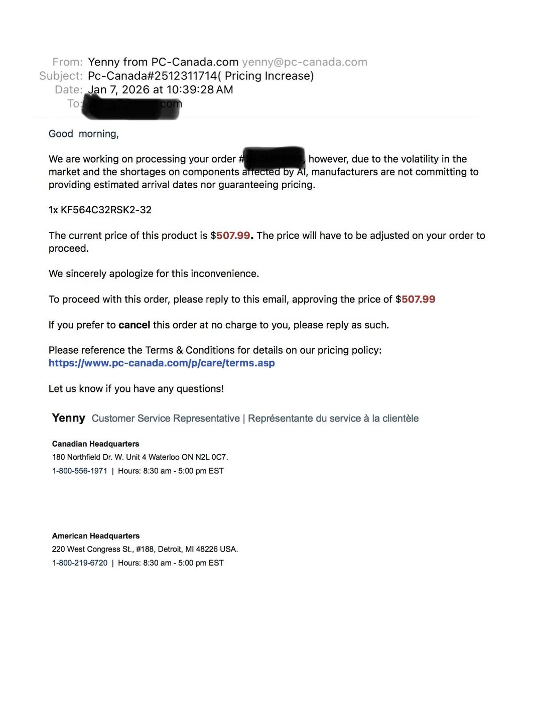
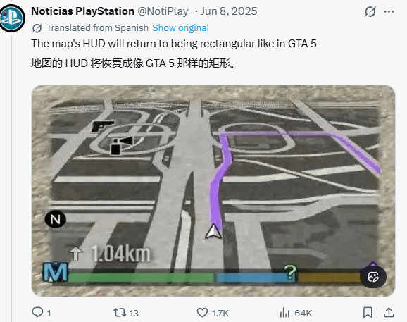
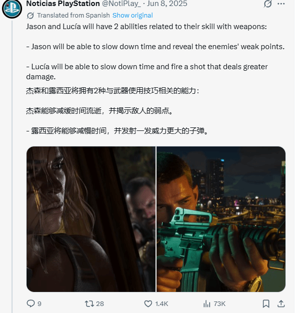

一如平日的周四晨課，今朝出跳馬甚踴躍，不乏周日參戰分子及勇馬，現將過程摘錄如下。
「迅意」助手跳一段，戴面箍及鼻箍，比前淡定步伐順暢，力度增強，狀態大有進展。
「紅衣財神」楊明綸跳兩段，戴頭罩及面箍，勁力增強不少，身壯毛色靚，觀感勝前。「迅意」助手跳一段，戴面箍及鼻箍，比前淡定步伐順暢，力度增強，狀態大有進展。
兆文
中國香港男⼦棍網球代表隊今⽇（8 ⽇）於「2026 亞太區男⼦棍網球錦標賽」最後⼀場⼩組賽中表現強勢，以 17：2⼤勝國家隊，最終以⼩組第三名完成分組賽，成功晉⾝附加賽，並將於 明⽇早上 5 時（香港時間）硬撼東道主紐⻄蘭，繼續為 2027 年男⼦棍網球世界錦標賽資格⽽戰。
港隊明撼紐西蘭拼世錦賽席位。中國香港棍網球總會官方圖片
男子棍網球亞錦賽港隊17:2擊敗國家隊。中國香港棍網球總會官方圖片
港隊今仗由開局已全⾯掌控戰局，攻守兩端均展現⾼度紀律與效率。中場球員陳俊偉及張海賢各⾃取得⼀個入球，兩⼈更合共送出 7 次助攻，直接參與全隊接近⼀半的入球，成為勝仗關鍵。 全隊多點開花之餘，防守端亦成功限制對⼿發揮。 今屆「2026 亞太區男⼦棍網球錦標賽」同時為 2027 年男⼦棍網球世界錦標賽的資格賽，亞太區合共獲分配 4 個名額，惟主辦國⽇本已⾃動佔去⼀席，其餘 3 個資格將由今屆賽事產⽣。 根據賽制，如港隊能於附加賽擊敗紐⻄蘭晉⾝四強，⽽⽇本在另⼀場附加賽中擊敗韓國（比賽 時間：香港時間明⽇早上 8 時），港隊將即時鎖定 2027 年男⼦棍網球世界錦標賽席位，若韓國擊敗⽇本，港隊則需與韓國進⾏銅牌戰，直接硬碰爭奪最後⼀席世錦賽資格。
男子棍網球亞錦賽港隊17:2擊敗國家隊。中國香港棍網球總會官方圖片
港隊明撼紐西蘭拼世錦賽席位。中國香港棍網球總會官方圖片
港隊明撼紐西蘭拼世錦賽席位。中國香港棍網球總會官方圖片
隊⻑劉興祈賽後表⽰，球隊經過⾸兩天賽事後已逐步進入狀態：「經過頭兩⽇比賽，團隊今場做⾜準備，球員都成功執⾏教練團的賽前部署。這場勝利不單⽌幫助我們出線，亦為明天對紐⻄蘭的關鍵⼀戰打下⼀⽀強⼼針。」
對於港隊成功克服三⽇三戰的嚴峻體能考驗，助理教練陳瀚基表⽰，球隊背後有⼀個運作完善的⽀援團隊作為後盾：「我們擁有非常完整的團隊，包括體能教練及物理治療師，持續監察球 員的⾝體狀況，並協助他們在短時間內加快恢復，以應付密集賽程帶來的挑戰。」，主教練佐藤壯亦⼀直提醒球員保持⾼度⾃律，「包括減少進食垃圾食物，以及確保充⾜的睡眠與 休息，讓⾝體維持在最佳狀態。」此外，陳瀚基亦指出，早前對陣菲律賓⼀仗為球隊帶來寶貴經驗，形容該場比賽「相當有得著」：「這場比賽讓我們學習如何更好地適應球證的執法尺度。 棍網球本⾝是⼀項⾝體碰撞較多的運動，能夠及早掌握當場比賽的執法標準，有助我們減少不必要的犯規，並在場上保持冷靜與專注，從⽽更有效地應對比賽。」
香港網球公開賽2026今日（8號）於維園網球一號副場上演精彩男雙八強戰。香港「一哥」黃澤林（Coleman Wong）夥拍加拿大好手迪亞路（Gabriel Diallo），組合激戰逾109分鐘，終以盤數2：1力克德國法蘭森（FRANTZEN GER） 與荷蘭夏斯 (HAASE NED) 組合，強勢晉級四強。而此次勝利更令黃澤林首度躋身ATP巡迴賽250系列賽男雙四強。
「黃迪配」今仗過程驚險。首盤雙方拉鋸至「搶七」，以7:6（7:4）先拔頭籌。次盤戰情緊湊，黃澤林組合再度拖入「搶七」，惜以6:7（5:7）被扳平。決勝盤採「搶十」制，「黃迪配」 組合一度領先6：2，卻被對手追至8：8平手，關鍵時刻連取兩分，終以10：8鎖定勝局。
記者、攝影：廖偉業
美國樂壇天后Katy Perry昨日在社交平台公開多張照片及片段，其中有跟舊愛兼《魔盜王》男星奧蘭度布林（Orlando Bloom）帶同兩人的5歲女兒Daisy往溜冰，畫面相當溫馨；另外，又有在海邊過節的照片，最矚目當然是親親新歡兼加拿大前總理杜魯多的臉頰，看來兩人感情已趨穩定，隨時提升至另一階段。
國家網球「一姐」鄭欽文今日於個人社交媒體宣布，經團隊評估及醫生建議，將退出今年澳洲網球公開賽。她在長文中形容決定「無比艱難」，期盼以百分百狀態回歸，向球迷致歉並承諾「2026賽場見」。
鄭欽文社交媒體宣布退出2026年澳網。鄭欽文IG截圖
鄭欽文社交媒體宣布退出2026年澳網。鄭欽文IG截圖
鄭欽文在社交平台寫道：
雖然右肘恢復順利，近期冬訓也在全力以赴，但大滿貫級別對抗，對身體有著極致的要求。目前我，還沒有達到自己設定的‘100%戰鬥狀態’的標準。
作為一名職業運動員，‘在場’只是第一步，‘在最佳狀態’才是對比賽、對對手、更是對所有支持我的人的最大尊重。感謝大家一直以來對我的支持，也期待能早日以最佳狀態重返賽場，和一個滿血歸來、健康無畏的我。2026，我們賽場見！」
鄭欽文宣布退出2026年澳網。新華社
鄭欽文宣布退出2026年澳網。新華社
鄭欽文宣布退出2026年澳網。新華社
現年23歲的鄭欽文為巴黎奧運會網球女單金牌得主。她去年飽受右肘傷勢困擾，於7月接受手術後長期休戰；曾於9月在中國網球公開賽短暫復出，惟只打兩場便再度因傷退賽，其後缺席家鄉的武漢網球公開賽及全運會等多項重要賽事。
對中國進行國事訪問的韓國總統李在明，於1月6日至7日到訪上海，並參觀日本殖民統治時期的大韓民國臨時政府舊址。
李在明就任總統後首次訪華選擇上海，是歷史情感、經貿往來、人文交流等多重因素共同作用的結果，邁出了兩國構築共同價值、深化政治互信、拓展務實合作的重要一步。
2026年1月6日下午，韓國總統李在明專機抵達上海浦東國際機場，開啟訪上海之行。（X@WalterL87309879）
抗日記憶紐帶 2026年是大韓民國臨時政府上海舊址設立100周年。該舊址自1993年正式對外開放至今，已累計接待數百萬人次，包括多位韓國總統、總理及國會議長。韓方此番也明確表示，將在上海舉行紀念活動並回顧歷史意義。
自1992年中韓建交以來，訪問該舊址已成為韓國總統訪華的重要外交傳統。1992年中韓建交僅一個多月後，時任韓國總統盧泰愚便偕夫人到訪該舊址。2015年，時任韓國總統樸槿惠曾來到上海，為「大韓民國臨時政府舊址」展館更新啟用剪綵，進一步深化了這一歷史記憶載體的象徵意義。
李在明此番延續參訪大韓民國臨時政府舊址這一傳統，既是對民族獨立歷史的尊重，也希望通過重溫共同抗日歷史，強化中韓「抗日同志」的歷史紐帶，為雙邊關係注入情感根基。
2026年1月6日，民衆參觀上海大韓民國臨時政府舊址。（X@chinasctv）
經貿合作門戶 上海是中國經濟金融中心和深度鏈接全球的國際大都市，也是韓國拓展對華合作的核心門戶，這也是李在明一行選擇參訪上海的現實考量。
大多數訪滬的外國政要會率領龐大的經貿合作團，在了解中國發展的同時，表達合作訴求，推動深化經貿往來。李在明也不例外，其此次訪華，有200餘名韓國企業家組成的龐大代表團隨行。
中國連續多年是韓國最大貿易夥伴，韓國也是中國最重要的經貿夥伴之一。據中方統計，2024年中韓貿易額為3280.8億美元（約25538.02億港元），同比增加5.6%。其中，上海及長三角地區與韓國的產業合作一直頗為緊密，是韓資企業佈局的核心區域之一。
上海在區域經濟合作、綠色低碳發展等領域的實踐，也與中韓擬推進的環境合作、第三方市場合作高度契合。有中國學者分析，中韓雙方此次有望在半導體、電動汽車和人工智慧等領域簽署多項諒解備忘錄。
李在明與機械人對話。（影片截圖）
人文交流窗口 「周五下班後直奔上海的短途旅行，成了韓國年輕人中的一股新風尚！」1月5日，李在明在北京出席中國—韓國商務論壇時表示，近期中韓兩國青年互訪日益活躍，成為近距離體驗彼此服務與文化的契機。
2026年1月5日，國家主席習近平（右）與韓國總統李在明（左）在北京人民大會堂會面時握手。（Reuters）
2024年11月中國對韓國公民實施免簽政策後，上海成為韓國遊客「周末短途遊」的首選目的地，也是他們直觀了解中國的第一扇窗口。在城隍廟品嘗小籠包、在豫園拍照留念、在大韓民國臨時政府舊址「打卡」等等，幾乎是韓國遊客到上海的「必遊路線」。
上海深厚的中韓文旅交流基礎，為李在明此次訪滬提供了堅實的民間支撐，也將進一步激發兩國間的人文交流活力。
自2025年6月上任以來，李在明始終重視改善中韓關係。此次李在明訪問上海，以歷史為切入、以互信為重心，向外界傳遞出韓國希望與中國構建穩定、可預測雙邊關係的明確信號，推動兩國合作邁向更高層次、更高質量的發展階段。
文章獲中國新聞網授權轉載
韓聯社：李在明訪華獲習近平贈送電動單車等禮物中韓創新創業論壇舉行 李在明鼓勵人才不懼失敗、勇於挑戰李在明提議劃定中韓黃海共同水域中間線 並稱「限韓令」有望化解習近平推薦北京炸醬麵 李在明：比韓國版更清淡健康
中央紀委國家監委駐國家體育總局紀檢監察組、河南省紀委監委周四（8日）通報，國家體育總局體育器材裝備中心前副主任王明晏涉嫌嚴重違紀違法，正接受紀律審查和監察調查。
2023年9月世紀暴雨襲港，揭發紅山半島多間獨立屋涉僭建，同年10月屋宇署職員到場視察時，發現持有紅山半島118號洋房的帝領發展有限公司，涉嫌未經批准進行僭建工程，涉及於天台、花園、主人睡房層等5個位置。公司被屋宇署票控5項明知而未事先獲得建築事務監督的書面批准及書面同意，便展開或進行建築工程罪。案件今於東區裁判法院提堂，帝領承認全部控罪，合共被判罰款8.5萬元。
被告帝領發展有限公司，被屋宇署票控5項明知而未事先獲得建築事務監督的書面批准及書面同意，便展開或進行建築工程罪。其中3項控罪分別指，有人告發被告身為白筆⼭道18號（松柏徑）紅⼭半島118號洋房的擁有⼈，於2008年3月1日到2009年11月30日期間的某個⽇期，明知⽽未事先獲得建築事務監督的書面批准及同意，在上述洋房展開或進⾏建築⼯程，即在睡房樓層（第2樓層）的平台加建搭建物；在主人睡房樓層（第1樓層）加建搭建物；以及在主人睡房樓層（第1樓層）下加建搭建物。
其餘2項傳票罪則指，被告涉在2008年3⽉1日到2020年7月24日期間的某個⽇期，在上述紅⼭半島118號洋房的天台上加建搭建物；以及於2021年1月13日至2022年2月15日期間的某個⽇期，在上述洋房的主人睡房樓層（第1樓層）下加建搭建物之上再加建1個位於花園的花棚，違反建築物條例（第123章）第14（1）條及第40（1AA）條。
案件編號：ESS20735-20739/2024
盧冠廷將於1月17日在廣州天河體育館舉行「My Music‧My Life一生所愛」演唱會廣州站。日前，盧冠廷到廣州荔灣養母故居打卡，分享廣州演唱會準備情况。
康得思酒店自助餐買1送1！香港康得思酒店The Place餐廳提供多元化自助餐選擇，尤其以豐富海鮮及精緻熱葷著稱，近日推出新春快閃買一送一優惠，今日（1月8日）晚上9時
康得思酒店自助餐 任食北海道毛蟹/生蠔/鐵板香煎鵝肝/海參鮑魚 香港康得思酒店自助餐廳 The Place 於2026年1月1日至2月5日期間，推出「鱘龍薈臻」自助餐，以西伯利亞鱘魚子醬、龍蝦、毛蟹、生蠔、鵝肝及多款經典烤肉，打造豐盛奢華的味覺體驗，迎接新一年的來臨。
冰鎮海鮮區供應多款頂級選擇，如加拿大開邊凍龍蝦、北海道毛蟹、紐西蘭生蠔及俄羅斯鱈蟹腳；開胃小食區新增法式鵝肝慕絲撻配山楂及烤開心果碎、香麻醬油鮑魚雞肉卷等精緻前菜，搭配ASC煙燻挪威三文魚及伊比利亞火腿拼盤。
至於刺身及壽司區，每日輪流提供6款精選刺身及8至10款特色壽司卷物，包括吞拿魚、油甘魚、帶子及甜蝦等新鮮食材。晚餐時段特別奉上加拿大海膽、A4和牛他他及三文魚籽即製手卷，口感豐富層次分明，適合喜愛日式料理的食客。
熱食區亮點包括鐵板香煎鵝肝，香氣四溢外脆內嫩；還有燒紐西蘭肉眼、烤蝦配海膽醬及香蒜迷迭香慢烤羊肩等肉類佳餚。現場即製本地榕樹澳小龍蝦及海鮮鍋拉麵，可選昆布高湯或蕃茄湯底，增添中式風味；其他如富貴花菇海參鮑魚及避風塘薑葱炒螃蟹，滋味濃郁適合分享。
甜品區由糕點行政總廚Roy Ma團隊打造，包括京都抹茶麻糬焦糖燉蛋泡芙、72%單一產地朱古力撻、日式京都提子啫喱及現場即製焙茶味雞蛋仔。原個蛋糕有熊本士多啤梨乳酪慕絲、北海道忌廉千層及紫薯雪芳蛋糕，配上十款MÖVENPICK®雪糕及鴛鴦酥皮多士，帶來中西合璧的甜蜜驚喜。
康得思酒店自助晚餐買1送1！人均$461起＞＞按此預訂＜＜ 香港康得思酒店The Place自助晚餐推出快閃買一送一優惠，今日（1月8日）晚上9時經Klook平台預訂，即可享買1送1優惠，人均$461起（$922/2位；原價$1,690/2位），不可錯過
【Klook 新春抵Deal - 快閃買一送一】自助晚餐｜北海道毛蟹、新鮮生蠔、鐵板香煎鵝肝
價錢：只需H$922起（人均：HK$461，原價：HK$1,690） 開售日期：2026年1月8日9PM起至1月14日發售 適用日期：2026年1月9日至2月5日 ＞＞
備戰DSE英文聽力，很多同學都會陷入「逐字聽卻抓不住重點」的困境，尤其零基礎考生，經常聽完整段錄音，還不知道答案藏在哪裡。其實DSE聽力題目設置有明確規律，關鍵就是抓住那些提示答案即將出現的信號詞，聽到這些詞就集中注意力，輕鬆鎖定答案，實現分數逆襲。
1. 轉折類信號詞：but, however, yet 這類詞絕對是聽力考試的「答案密碼」，因為它們後面接的內容，往往是推翻前文、體現核心觀點的關鍵信息，也是題目最常考的部分。比如錄音中說「Many students think reading is boring, but it actually helps improve your vocabulary and critical thinking skills」，如果題目問「What does the speaker think of reading?」，答案就是but後面的內容。練習時只要聽到這類詞，立刻集中精神，就能避開前面的干擾信息，直接抓準答案。
2. 因果類信號詞：because, since, as a result DSE聽力經常考「原因」和「結果」類問題，這類信號詞就是最好的導航燈。because和since通常用來引出原因，as a result則會帶來結果，聽到這些詞，就等於聽到了題目的答案方向。比如錄音提到「The library will be closed next week, since it needs to undergo a renovation」，若題目問「Why will the library be closed?」，since後面的內容就是正解。零基礎考生不用理解全文，只要鎖定這類詞，就能快速找到對應信息。
3. 列舉類信號詞：firstly, for example, such as 當錄音中出現列舉內容時，就是細節題的高發區，而firstly、for example這些詞，就是提示「關鍵細節要來了」的信號。比如錄音說「To prepare for the exam, you should do three things. Firstly, make a study plan; secondly, practice past papers; finally, review your mistakes regularly」，如果題目問「What is the first tip the speaker gives?」，firstly後面的內容就是答案。這類信號詞語感強、容易辨認，零基礎考生也能輕鬆捕捉，再也不用擔心漏聽細節。
4. 強調類信號詞：actually, in fact, the most important thing is 講者在錄音中想強調的內容，往往就是考點，而這類信號詞就是強調內容的「標籤」。比如錄音提到「People often say memory is innate, but in fact, memory can be improved through daily training」，如果題目問「What is the speaker’s opinion on memory?」，答案就在in fact後面。聽到這類詞時，一定要放慢聽的節奏，把後面的內容記下來，這大概率就是題目的得分點。
5. 結論類信號詞：in conclusion, to sum up, therefore 這類詞通常出現在錄音結尾，用來總結全文觀點，對應的題目往往是主旨題。比如錄音結尾說「In conclusion, online learning is a useful tool, but it cannot replace traditional classroom teaching」，若題目問「What is the main idea of the talk?」，in conclusion後面的內容就是核心答案。零基礎考生就算前面聽得雲裡霧裡，只要抓住結尾的信號詞，也能拿下主旨題的分數。
其實DSE英文聽力並不難，關鍵不是聽懂每一個字，而是抓準信號詞，鎖定考點。這5個信號詞覆蓋了大部分考題類型，只要反覆練習，養成「聽到信號詞就集中注意力」的習慣，就算是零基礎，也能在聽力考試中不丟分。
撰文：Spencer Sir
英文片語Phrases｜I am all ears 表達最高的誠意和關注
英文片語Phrases｜Show me the ropes是甚麼意思？
近日在社交平台上，有網民發文自己童年偶遇前TVB兒童節目主持蓋世寶（LuLu）的崩潰經歷。該網民透露小學時在海洋公園見到蓋世寶，興奮地上前打招呼並詢問：「你係咪蓋世寶姐姐呀？」怎料對方竟冷淡地「打發」小朋友，更嘲諷地回應：「我係蓋鳴暉」隨後更與身旁友人對望大笑，令該網民感到極度失落。事件引發大批網民共鳴，紛紛留言指責其行為令「童年陰影」揮之不去。
有網民指蓋世寶是最沒禮貌的藝人引起熱議。（threads截圖）
網民指蓋世寶曾當眾歧視小朋友膚色 除了「蓋鳴暉」事件外，另一名網民亦爆出指控。該網民稱其好友小四時有幸參加《至net小人類》錄影，當時蓋世寶竟當眾帶頭嘲笑其好友皮膚黝黑，更問對方「係咪非洲嚟」，隨後更聯同其他主持及小朋友齊齊取笑。受害人回家後即時崩潰大哭，自此對該節目留下心理陰影。不少網民看後表示震驚，認為作為兒童節目主持，此舉涉及歧視且極不專業。
有網民狂轟蓋世寶曾當眾歧視小朋友膚色。（threads截圖）
蓋世寶曾主持《至net小人類》。（《至net小人類》截圖）
重提《放學ICU》最後一集對譚玉瑛態度惡劣 「人設崩壞」的討論持續發酵，有網民重提2014年《放學ICU》最後一集的片段，當時眾主持歡送元老譚玉瑛。網民指出蓋世寶在節目中對前輩並無敬意，甚至被指帶頭排擠。
有網民重提2014年《放學ICU》最後一集的片段。（threads截圖）
網民指出蓋世寶在節目中表現得非常「串嘴」且神情傲慢。（《放學ICU》截圖）
蓋世寶效力TVB 23年曾被譽為「譚玉瑛接班人」 雖然近日負評連連，但不可否認蓋世寶對兒童節目的貢獻。她自1996年加入 TVB 後，足足主持了兒童節目 23 年，曾被譽為「譚玉瑛接班人」，由《閃電傳真機》、《至Net小人類》到《放學ICU》都有她的身影，她的笑容曾陪伴無數 80、90 後成長。亦有網民力撐蓋世寶，大讚蓋世寶好nice，對小朋友都好有耐心。
蓋世寶自1996年加入 TVB 後，足足主持了兒童節目 23 年，曾被譽為「譚玉瑛接班人」，由《閃電傳真機》、《至Net小人類》到《放學ICU》都有她的身影。（網上圖片）
曾與林景弘苦戀七年拒絕求婚 除了事業風波，蓋世寶過往的感情生活亦再次被網民翻起。最為人知的是她與藝人林景弘（前名林遠迎）一段長達七年的戀情。當年兩人被視為圈中金童玉女，男方更一度情到濃時向她求婚，但蓋世寶經過一年深思熟慮後最終決定拒絕並分手。
前TVB「順風耳」近況激罕曝光 曾戀蓋世寶7年現轉行做生意蓋世寶重提被調離兒童組爆喊：唔閞心譚玉瑛姐姐離開先細數22個兒童節目主持去向 多位退出幕前蔡子健轉做專業人士蓋世寶回巢｜盤點歷年兒童節目主持去向 兩人因王祖藍而重返TVB
投資推廣署舉辦中醫藥發展論壇，投資署創新及科技、生命與健康科學總裁黃煒卓表示，去年該署成功協助30多間與生命及健康科學相關的企業來港落戶或擴充業務，其中中醫藥企業達雙位數百分比。業界廣藥集團表示，計劃在港建設先進製造中心，目標2026年敲定方案；而中藥飲片企業新荷花則籌備來港上市，正積極評估新田科技城、河套等園區的投資機會，計劃在港建設標準化工廠。
投資署黃煒卓：一站式支援落戶企業 黃煒卓指出，投資推廣署的任務分為兩大方向，包括對外透過全球30餘個海外辦事處，結合中醫醫院成立、檢測中心落成及《中醫藥發展藍圖》發布的契機，向國際推廣香港的中醫藥產業優勢；對內則為落戶企業提供一站式支援，協助他們對接本地大學、研發機構、政府部門及潛在投資者。
北都預留空間發展中醫藥生產基地 在具體產業支援方面，黃煒卓提到，北部都會區的發展將提供重大機遇。在該區300平方公里的土地規劃中，新田科技城、河套區的港深創新及科技園等重點園區，將預留空間發展中醫藥生產基地，而政府更推出配對基金，資助企業設立智能生產線，最高資助額可達2億元。他稱，目前，香港已有大埔、將軍澳及元朗三個創新園區，其中將軍澳先進製造業中心已有企業進駐；而河套區首期已有3棟大樓落成，後續尚有2棟專注於生產用途的大樓將投入使用，企業亦可透過公私營合作模式參與園區建設。
廣藥白雲山以港為總部 建七大中心 廣藥集團旗下廣藥白雲山香港總經理陳志釗表示，將加大在港投資，全力推進七大中心建設。他透露，集團已率先成立財資中心及國際研發中心，後續將陸續建立在地化經營與戰略營銷中心、先進製造中心、海外註冊中心、人才中心，以及品牌聯絡中心，構建覆蓋研發、生產、營銷、資本運作的全方位體系。
陳志釗表示，該集團將以香港為總部，先拓展東南亞市場，再循「一帶一路」進入中東及南美洲。產品方面，他指旗下「王老吉」海外版已在泰國、馬來西亞、印尼上市，未來將推動滋腎育胎丸、夏桑菊等核心中成藥登陸更多海外市場。
新荷花去年申港上市 路演接觸三成國際投資者 中藥飲片生產商新荷花董事總經理江峰表示，新荷花已於去年3月正式向港交所提交主板上市申請，目前已完成路演並待聆訊，有望成為兩岸三地首間上市的中藥飲片企業。他透露，在路演接觸的投資者中，有約30%為國際投資者，顯示出海外資本對高質量中醫藥領域的興趣。
江峰又表示，該公司正積極評估新田科技城、河套區等園區的投資機會，計劃在港建設符合「香港中藥材標準」的標準化工廠，此舉旨在更好地配合其作為香港中醫醫院主要供應商的角色——在該院全部530餘個臨床用藥品種中，新荷花獨家中標超過300項。
江峰指出，《港標》是國際市場的通行證，而香港在CITES瀕危物種貿易管理的規範性，使其成為中藥材國際貿易的天然樞紐，他期望未來香港業務能從目前佔集團總額約1%的比重顯著提升。
「男色營銷」近年來風靡內地，浙江麗水一間華為門店被指，邀請多名半裸男模在店內熱舞，被質疑「低俗化」。對此，涉事華為門店表示，這是商場為了吸引人流組織的活動，並非品牌活動。
多名半裸男模在一間華為店內熱舞。（影片截圖）
多名半裸男模在一間華為店內熱舞。（影片截圖）
多名半裸男模在一間華為店內熱舞。（影片截圖）
網傳影片顯示，近10名大隻男模赤裸上身，在麗水萬地廣場的華為門店中熱舞，吸引不少顧客圍觀錄影。影片流傳後，不少網民都認為，該行為略有不妥，「夜店的的跑出來賺外快了」、「高端品牌玩什麽牛郎啊？還有紋身」。
事件引發廣泛關注後，商場周三（1月7日）發布情況說明指，「特此說明，該活動由商場方面獨立組織安排，與場內華為授權體驗店及其他品牌門店並無關聯。」
活動是由萬地廣場組織。（萬地廣場）
活動是由萬地廣場組織。（抖音）
商場發布情況說明指，該活動由商場方面獨立組織安排。（萬地廣場）
而涉事事華為門店工作人員亦表示，「這個活動是商場12月31日晚上組織的跨年活動，並非品牌活動。」門店反應後曾嘗試制止，但已被圍觀者拍攝傳播。
馬杜羅愛用華為手機 曾大讚為世上最好：連美國人也無法竊聽孟晚舟卸任大反轉 華為的野心暴露了華為連續兩周超Apple 重奪內地市場份額第一 新機Mate80成關鍵
沙田瀝源邨昨日(7日)有一輛掛「T牌」電動左軚七人車，意外撞倒一名姓黃(74歲)男清潔工，他昏迷送院救治，於深切治療病房留醫及情況嚴重。警員經進一步調查後，同日晚上約7時，在沙田區以涉嫌「危險駕駛引致他人身體受嚴重傷害」，拘捕該名姓鄭(32歲)本地男司機。他已獲准保釋候查，須於2月上旬報到。
大埔宏福苑發生五級火災後，政府在各區區議會會成立「大廈管理工作小組」，當中大埔區議會大廈管理工作小組今早（8日）召開首次會議，小組主席羅曉楓表示，會上各大政團議員建議邀請多個政府部門參與會議，經整合意見後，將由秘書處協調安排，建議先邀請消防處及滲水辦，分別講解物聯網火警偵測先導計劃情况及協助應對區內大廈的滲水問題。
羅曉楓表示，為更好協助政府進行宣傳推廣，希望民政事務總署於下次會議中，列出過去一年已舉辦及未來擬辦的活動清單，以便區議會協助向居民推廣相關資訊，提升大廈管理知識。另外，「大廈管理專業顧問服務計劃」目前已於大埔區內試行，協助「三無」大廈成立法團，期望可以在下次小組會議中進行匯報。
工作小組不應公開討論個案細節 羅曉楓又指，工作小組作為一個有效平台，透過區議員收集區內有關大廈管理的意見，讓區議員就推動良好大廈管理向區議會提交具體建議，強調小組亦能促進區議員之間的經驗分享及交流，從而在區內推廣良好大廈管理文化，令區議員的支援服務更高效到位。
不過，羅曉楓提到，考慮到大廈的情況各有不同，當中的敏感度亦各異，可能會涉及住戶的私隱，因此區議員在工作小組進行經驗分享及交流時，宜聚焦分享從工作經驗中見到的良好大廈管理方法、發現在制度或法例上遇到的問題，無須亦不應公開討論涉及個別個案或具體人物的細節，個案應個別專門處理。
記者︰黃子龍
香港首個長壽音樂劇《我們的青春日誌》已跨越700場演出。踏入第4年度，主創、導演及監製陳恩碩（Tom）邀請黃浩然加盟，繼強尼、Ben Sir及譚偉權等演員後，成為第12位演嚴校長的初戀情人高立仁的演員，於1月16日起期間限定演出。早前在《我們的青春日誌》及青春外傳劇場《Nancy勞軍Show》中演活收兵娘娘Nancy的蘇韻姿亦回歸，期間限定演出10場《我》。
金塊周三作客波士頓鬥塞爾特人，占姆梅利(Jamal Murray)今戰擔起組織進攻大旗，交出生涯新高的17助攻串連全隊進攻，並助金塊在末節爆發以114:110鎖定勝局。
金塊末節狂轟14:0 最終114:110挫綠軍 今戰雙方都缺少各自的大將，金塊的約基治(Nikola Jokic)還在養傷之中，而綠軍的泰頓(Jayson Tatum)也未知歸期，今戰各自的2當家占姆梅利和謝倫布朗(Jaylen Brown)挺身而出，全場打得十分膠着出現過26次領先交替和9次平手，到第4節中段綠軍還以90:87領先，但金塊捉緊綠軍入球荒機會打出一波14:0的攻勢成功反超比分，隨後雖綠軍及時調整，在最後幾秒時將比數追成僅3分差，但已為時已晚最終金塊以114:110擊敗塞軍。
今戰金塊二當家梅利雖從未入選全明星，然而他卻再次打出全明星級表現，今戰除了攻入22分和8籃板外，更交出生涯新高的17助攻串連全隊攻勢，另外披頓屈臣(Peyton Watson)亦攻入全隊最高的30分6籃板。而綠軍方面謝倫布朗在泰頓缺席下擔起進攻火力點，今戰轟入全場最高的33分7板，而比查特(Payton Pritchard)和韋特(Derrick White)齊齊攻入17分。
公營醫療服務今年實施新收費，同時放寬每年上限一萬元醫療費用減免門檻，大批市民近日填表申請。社協幹事連瑋翹認為申請表格複雜程度達「綜援級」，不僅艱澀難懂，所需文件亦繁多，部分收支細項亦要詳細解釋。倘若長者自行申請，他形容「打回頭」的幾率幾乎百分百，不少人遞表4至5次才獲批。
如申請人持有賽馬會投注戶口及電子錢包，需要提供戶口過去六個月的月結單、交易、結餘等紀錄截圖。有街坊打麻雀贏錢後透過微信收取數百元款項，醫管局「打回頭」詢問詳情，要求證明並非工作收入。申請人最終補充打麻雀地點及撰寫一段聲明，終獲醫管局接納。他呼籲局方參考其他津貼計劃，簡化申請程序，減少所需證明文件。
社區組織協會幹事連瑋翹指出，醫管局醫療費用申請手續繁瑣，倘若長者自行申請，「打回頭」的幾率幾乎達100%，不少病人申請4至5次才完成。（羅國輝攝）
醫管局醫療費用減免表格長9頁。（羅國輝攝）
困難一：所需資料文件繁多 申請醫療費用減免，市民須提交全部家庭成員的入息證明，包括銀行月結單等，所需文件繁多。連瑋翹指，有銀行轉用電郵或網上銀行戶口發出月結單後，不再寄出實體文件，但長者註冊網上銀行有困難，若向銀行申請實體本需支付手續費並等候14日。
社區組織協會幹事連瑋翹指出，社協近日接獲數百求助，平均每宗個案都至少需處理2小時。（羅國輝攝）
困難二：提供電子錢包、馬會投注戶口截圖 申請表格中「其他可變換現金的資產及其他有價值的物件」一欄，要求病人申報電子錢包及其他有價值的物件等，病人須提供電子錢包過去六個月交易及結餘紀錄截圖作佐證。連瑋翹指，現時香港版的微信支付不會顯示流水帳，需要就每筆支出和收入逐頁截圖影印，令申請人覺得過程繁複。
如申請人申報持有賽馬會投注戶口，連瑋翹說醫管局亦要求申請人申報過去六個月的紀錄，但未有明言只需要申報餘額還是需要每項投注紀錄都逐一申報。
醫管局網站指，病人須提供電子錢包過去六個月交易及結餘紀錄截圖作佐證。如申請人申報持有賽馬會投注戶口亦需申報。（網站截圖）
社署於上水的綜合家庭服務中心門外張貼告示，申請醫療費用減免需到公院申請。（鄭子峰攝）
困難三：部分收支難提供證明 病人申請醫療費用減免時，醫管局醫務社工可能就其戶口的收支提出疑問，並要求提供證明。連瑋翹說部分款項或難以做到，舉例早前社協幫助一名病人申請，其戶口曾接收約千元電費資助，醫務社工要求該病人證明款項並非工作收入，「點樣證明呢？係咪要向電力公司寫封信，核對幾年幾月幾日曾經入過1000元？」
他又舉例，有街坊聲稱數月前與朋友打麻雀贏錢，朋友透過微信向他支付數百元。當街坊申請醫療費用減免時，被打回頭，要求證明該筆款項來及並非工作收入。
點樣去證明？我都唔知道點做……可能要去宣誓，可能要你提供你個麻雀腳叫咩名、幾多號電話，咁樣去核實？
最終申請人向醫務社工補充打麻雀的地點，並附上一段補充聲明，獲批出減免。
北區醫院內外都有綠色告示展示「醫務社會服務 醫療費用減免服務站」，並接受「2026年1月至3月覆診的費用減免預約」。（資料圖片/鄭子峰攝）
困難四：申請表格艱澀難填 連瑋翹認為，醫療費用減免的申請表格長達 9 頁，涉及多個細項，當中亦牽涉不少概念，包括「受供養人」等。表格亦需要申報黃金、珠寶等可變現資產，以及各類保險、年金、紅利等，長者未必理解。
病人需填寫是否有股票、物業、年金，以及其他可變現的資產，例如車輛、黃金、珠寶等。（醫療費用申請表截圖）
形容申請嚴謹程度達「綜援級」 連瑋翹指，今次費用減免的複雜和嚴謹程度達「綜援級」，社協近日接獲數百求助，平均每宗個案都至少需處理2小時。他呼籲有關當局參考其他津貼計劃，簡化申請程序，減少所需文件。
政府去年公布醫療改革方案，多項公營醫療服務加價。同時，當局放寬醫療費用減免門檻，低收入人士、長期病患者及貧困年長病人只要符合資產限額資格，均可獲得部份或全額減免。
醫療減免申請地點指示混亂、分批預約宣傳欠清晰 長者批奔波折騰醫療費用減免9頁申請表細項多 議員指長者難理解 有人被打回頭急症室加價｜威院病人稱輪候較快 多人不知是否符醫療費減免資格公院新收費｜醫療開支「百物騰貴」 誰加、誰減才能走遠？
中國商務部繼1月6日宣布加強兩用物項對日本出口管制後，1月7日表示將對原產於日本的進口氣體二氯二氫矽發起反傾銷立案調查，該氣體涉及半導體晶片製造過程。日本內閣官房長官木原稔8日稱，日本將與被調查企業合作，密切關注事態發展並採取一切必要措施，包括全面評估調查帶來的影響。
商務部公告指，2025年12月8日收到唐山三孚電子材料有限公司（以下稱申請人）代表中國二氯二氫矽產業正式提交的反傾銷調查申請，申請人請求對原產於日本的進口二氯二氫矽進行反傾銷調查。
中方依據《中華人民共和國反傾銷條例》有關規定，對申請人的資格、申請調查產品有關情況、中國同類產品有關情況、申請調查產品對中國產業的影響、申請調查國家有關情況等進行審查。
日本內閣官房長官木原稔（Getty Images）
關於反傾銷調查問題，日本內閣官房長官木原稔在出席記者會時回應稱：「關於昨日提及的反傾銷關稅調查已由中國政府宣布啟動一事，我們已經知悉。對於其他國家政府的調查等具體情況，我方暫不評論。但無論如何，日本將在配合調查對象企業的同時，密切關注事態發展，並在必要時對影響進行詳細評估，採取必要的應對措施。」
中國收緊對日出口管制 日本股市下跌 市場憂限制稀土影響將更廣日本濱岡核電廠抗震數據涉造假案續發酵 委員會煞停重啟事宜日本多地現山寨「昭和天皇紀念幣」 警逮捕4人包括一中國籍男子日媒：日本測到中國在東海爭議海域天然氣勘探 經外交渠道提抗議
個人資料私隱專員公署今日(8日)在新界區拘捕一名46歲中國籍男子，涉嫌在未經資料當事人的同意下披露他的個人資料，違反《個人資料(私隱)條例》第64(3A)條的規定，調查顯示，事主從事跨境車業務，包括出租跨境車及代辦跨境駕駛手續，去年11月下旬，有人在一個即時通訊軟件中兩個由同行人士組成的群組中發布及轉載合共4則包含事主個人資料的訊息及影片，對事主作出負面評論。被捕人士獲准保釋，私隱專員公署會繼續調查案件。
大家樂外賣加餸優惠又有驚喜！今期大家樂「超值家餸」優惠長達近一個月，焦點是原隻五指毛桃雞，優惠價僅需$49，份量更足一斤，絕對是誠意之作。更可自由加配雞腎、雞翼、紅腸、糖水等，為你的家庭晚餐增添一份窩心的滋味。
大家樂$49超值價 歎原隻五指毛桃雞 大家樂外賣加餸優惠又有驚喜。
今次大家樂推出的優惠主角「五指毛桃雞」，不單是一道美味佳餚，更結合了傳統的食療智慧。五指毛桃本身是一種廣受歡迎的藥食同源植物，帶有獨特的椰子般清香，更有健脾補肺、益氣利濕的功效。大家樂採用原隻鮮雞，以秘製方法配搭五指毛桃一同烹調，每一口都散發著淡淡的清香，讓人食指大動。以$49的超值價錢，便能享用這隻足一斤重、滋味與功效兼備的原隻五指毛桃雞（原價$68），性價比極高，無論是二人世界撐枱腳，還是為一家大小加餸，都同樣適合。
人氣加配優惠 低至$10配雞腎/雞翼/紅腸 加配優惠同樣吸引。
除了主角五指毛桃雞，大家樂亦貼心地提供四款人氣加配優惠。只需額外$12，即可選擇惹味的滷水小食，包括「滷水雞腎拼雞翼(2隻)」或「滷水雞腎拼紅腸」。滷水雞腎爽口彈牙，配上軟腍入味的滷水雞翼，或是鹹香十足的紅腸，兩者都是佐飯的絕佳配搭。如果想來點主食和甜品，只需加$10，便可換購「白飯拼糖水(各1客)」，一次過滿足口腹之慾。另一款加$10的選擇則是大家樂的人氣甜點「葡撻(2件)」，作為飯後甜品，帶來滿滿的幸福感。
大家樂「超值家餸」外賣優惠 優惠日期： 由1月6日至2月2日
供應時段： 下午3時後供應
銷售點： 全線大家樂分店
條款及細則：
優惠只限外賣。
數量有限，售完即止。
圖片只供參考。
2大快餐店快閃優惠 一粥麵/麥當勞 1. 一粥麵$20外賣早餐
一粥麵全新外賣早餐優惠，$20即可自選「煎韭菜餃」或「糯米雞」，煎餃的內餡選用新鮮韭菜配搭鮮嫩豬肉，肉汁飽滿，外皮金黃香脆；而「糯米雞」則是份量十足的經典選擇，糯米吸收了雞肉、冬菇、臘腸等豐富餡料的精華，口感層次豐富，足以提供整個上午滿滿的能量。
2. 麥當勞$10加配麥樂雞/麥炸雞/脆香雞翼
即日起至1月8日，麥當勞加推$10快閃優惠。顧客選購任何超值套餐或「麥麥心意賞」後，可額外以$10加配外脆內嫩的麥樂雞（4件）、金黃香脆的麥炸雞（1件），或是皮脆肉滑的脆香雞翼（2件）。
資料來源：
繼銀河娛樂（0027），綜合澳門媒體報道指，包括永利澳門（1128）、美高梅中國（2282）及新濠博亞（美：MLCO）相繼宣布發放一個月薪酬的特別津貼或酌情獎金，三者均於今年1月下旬發放。
渣打香港馬拉松將於1月18日舉行，跑手正積極備戰，勤加練習。近日九龍灣運動場及將軍澳運動場關閉，部分跑手因此「分流」到其他康文署運動場練習，彷如「大遷徙」。有網友發文表示，斧山道運動場人山人海，目測有500、600人同時在運動場跑步，場面壯觀。有網民笑言，要在人潮中跑步，猶如障礙賽。
近日在社交平台出現大量帖文，指斧山運動場人頭湧湧，不少跑手正進行緩步跑，亦有人在跑道上散步，場面熱鬧；有網民則發布排隊等候入場的情況，只見相片有一條長長人龍，發帖網民稱：「以為自己排緊入花市」。
有網民質疑是AI影片，但發帖網文回應是真實拍攝，有網民笑言現場人多擠迫，「仲難跑過渣馬頭段」，亦有網民指渣馬賽事後，人潮便會消失。有網民則指，晚上7時30分前須香港田徑總會會員才可進入，因此約7時前後放工時間開始，大批未持有田總證的跑手在門外排隊等候入場。
《星島頭條》正向康文署查詢。
英格蘭球壇周三傳來令人震驚的消息。前英格蘭國家隊領隊、利物浦及紐卡素傳奇球星奇雲基瑾（Kevin Keegan），證實被診斷出患上癌症，現已入院接受治療。消息傳出後，整個英國球壇為之震動，一眾舊東家、隊友及球迷紛紛送上祝福，希望這位74歲的傳奇能早日戰勝病魔。
英格蘭名宿奇雲基瑾(右)證實患癌。美聯社
英格蘭名宿奇雲基瑾證實患癌。美聯社
英格蘭名宿奇雲基瑾證實患癌。美聯社
英格蘭名宿奇雲基瑾(左)證實患癌。美聯社
腹部不適入院 證實患癌 據奇雲基瑾的家人發表的聲明稱，他早前因持續的腹部不適症狀而入院，作進一步檢查。聲明中說：「這些檢查結果顯示，他被診斷出患有癌症，奇雲基瑾將會為此接受治療。奇雲基瑾感謝醫療團隊的介入和持續護理。在這個困難的時刻，家人請求外界給予私隱，並將不會再作進一步評論。」
「國王」有難 球壇送上祝福 消息傳出後，奇雲基瑾曾效力及執教的球會，以及一眾球壇名人，均在社交媒體上送上祝福。紐卡素球會發言人表示：「我們的前球員兼領隊，奇雲基瑾將在被診斷出癌症後接受治療…『國王奇雲』，我們與你同在，希望你早日完全康復。」
利物浦球會亦表示：「利物浦球會及『永遠的紅軍』的每一個人的思念和支持，都與奇雲基瑾同在。」
曾兩奪金球獎 奇雲基瑾是英國足球史上最偉大的球員之一。他在效力利物浦期間，贏得了三次頂級聯賽冠軍、兩次歐洲足協盃、一次足總盃及一次歐冠盃。個人榮譽方面，他更曾兩次榮膺歐洲金球獎，是至今唯一能達成此成就的英格蘭球員。
2026年剛開始，羅啟豪（Ramon）急不及待踏出音樂事業新一步，第一首國語歌《畫中密碼》（《有天做證》國語版）矚目上架，宣告Ramon正式進軍內地市場。
Ramon第一首國語歌《畫中密碼》（《有天做證》國語版）矚目上架。（公關圖片）
羅啟豪首推國語歌進軍內地 Ramon表示：「《有天做證》推出時，我已收到不少行內及行外人士讚賞，加上是外購劇《清明上河圖密碼》的主題曲，旋律以中國小調風編寫，很適合改編成國語歌；《畫中密碼》將在內地社交平台例如抖音作創意的特色推廣，希望為自己開拓更大的市場。」
Ramon表示新歌廣東版先前收到不少行內人士及途人讚賞。（公關圖片）
羅啟豪克服病痛一口氣唱足38字 廣東版《有天做證》以超高難度見稱，其中一句歌詞，Ramon需要一口氣唱出廿五個字已見功架，想不到《畫中密碼》再度升級，基於一個「密碼」，Ramon竟要一口氣唱出三十八個字！「我收到歌詞，真的是嚇了一跳！為了令文法通順，填詞人曾曙曦需多加一個字將兩句長歌詞連在一起，代表一口氣要唱足三十八個字！早前演唱會第一次現場演繹，開騷前又喉嚨痛，我最擔心就是這首歌，最終有驚無險，順利過關！」Ramon在社交媒體分享剛於愉景灣完成歌迷會「Busking Tour 第十二站：離島區」，亦有選唱《畫中密碼》，更於完場後為歌迷大搞簽名會及於地標白教堂前逐一獨照留念。
Ramon表示新歌《畫中密碼》一口氣要唱足三十八個字。（公關圖片）
Ramon在社交媒體分享剛於愉景灣完成歌迷會。（公關圖片）
拍MV入「高街鬼屋」取景 《畫中密碼》 MV 經已推出，主題與《清明上河圖》遙相呼應，《清明上河圖》記錄了九百多年前的城市繁榮景象，人們為生活奔波營役，彷彿和現世沒有兩樣，《畫中密碼》 MV 導演精心挑選香港多處景點，讓Ramon游走於西營盤社區綜合大樓、餘樂里、西區社區中心、東邊街、般咸道等，以亮麗畫面紀錄都市風貌與港人真實生活，Ramon笑言：「有幾個地點都是第一次去，譬如我聞名已久的高街鬼屋，現址西營盤社區綜合大樓；我向來喜歡具歷史風味的建築物，來到這座綜合大樓，最欣賞這裏獨特的歷史建築風格，花崗石外牆與拱形長廊採巴洛克式設計，配搭中式瓦頂，可以攞正牌拍MV打卡，好開心！」
Ramon為拍攝新歌MV游走香港多處景點。（公關圖片）
Ramon與西環餘樂里描繪昔日居民生活的特色銅像合影。（公關圖片）
走訪「醫院」展開尋根之旅 令Ramon留下深刻印象的還有西區社區中心，他順道展開「尋根」之旅：「這裏前身是我由細聽到大的贊育醫院，正是我爸爸出生的醫院，至今仍保留了原有的結構與陳設，如供病人等候的長櫈，我會想，當年嫲嫲懷着爸爸的時候，是否就坐在這張長櫈等看醫生呢？」
Ramon 借機前往「贊育醫院」尋根。（公關圖片）
羅啟豪四登啟德體藝館 近日Ramon應邀出席《盛世梵音 福佑香江》音樂會，跟譚詠麟、林子祥、葉蒨文、鄺美雲、陳潔靈等樂壇前輩同台，為來自世界各地逾千位佛教高僧獻唱。有心水清網民發現，自啟德體藝館啟用以來，Ramon在短短一年間已先後四次登場，是表演次數最多的「體藝館之星」，Ramon謙言：「好多謝網民幫我計數，好感恩有這些寶貴的演出機會，不過這些紀錄一定好快有人打破，希望將來亦有機會去主場館演出！」
完show後 Ramon 化身小粉絲與前輩巨星逐一打卡。（公關圖片）
今次陣容Ramon每位前輩都都非常喜愛。（公關圖片）
自啟德體藝館啟用以來，Ramon在短短一年間已先後四次登場，是表演次數最多的「體藝館之星」。（公關圖片）
羅啟豪為米雪「表演」 提到夢想成真，Ramon確實在今次音樂會完成了一個埋藏多年的心願，他興奮道：「今次同台每位前輩我都好喜愛，所以完場我便忙着追星，在每間化妝間門外耐心等待，希望與巨星前輩『集郵』，其中我更下定決心，要在米雪姐面前『表演』一次！」到底Ramon想「表演」什麼給米雪欣賞？「於外國生活時，我很喜歡上YouTube 看電視劇精華片段，尤其是《溏心風暴》系列，紅姨（米雪）掌摑女兒于素心（鍾嘉欣）那一幕最令我難忘，今次難得見到米雪姐，我終於可以面對面向她重演那句經典對白：『心女！你學埋佢哋嚟反我？！』逗得米雪姐哈哈大笑！」原來米雪也是《中年好聲音》的長期擁躉，之後更「反主為客」，不斷大讚節目出色，令Ramon等參賽者夢想成真，好替他們開心！
羅啟豪達成心願於米雪姐面前「表演」一次。（公關圖片）
《中年》富貴歌手英文名字用三代 患社恐靠慳儲錢購近2千萬樓盤羅啟豪無懼《中聲》競爭大 坦承每屆質素越嚟越高：只可做好自己羅啟豪自揭《中年好聲音》面試黑歷史 連續三年聖誕節被慘痛浪費羅啟豪與星級製作人及全能音樂人悉心打造 搶閘公開絕密個唱曲目
歐洲多地近日出現嚴寒風雪天氣，法國巴黎周三（7日）亦罕有降至0°C以下，市內建築及街道均被白雪覆蓋，在著名地標艾菲爾鐵塔，有遊客表示本來沒預料會下雪，形容雪景很美，是意外驚喜。而在戰神廣場公園，亦有民眾前來滑雪。受降雪影響，戴高樂機場周三逾百班航班取消，奧利機場則有40航班取消。（法新社）
瀋陽飛機工業集團試飛跑道周二（6日）出現一架身披墨綠色底漆的殲35戰機，完成新年第一飛。據內媒報道，此次首飛不僅驗證了新型材料與動力系統的可靠性，還加速了殲35的量產列裝進程。
39歲內地男涉借用舊同學身分資料，於高德地圖的服務供應商開設帳戶，然後在去年6至8月來港駕駛Tesla載客取酬，有關帳戶獲逾7萬港元收入。涉案男子今（8日）在粉嶺裁判法院承認違反逗留條件等19罪，辯方求情稱，被告曾任解放軍，官至陸軍班長，退役後從事商場管理，惟前年失業，最終為賺錢養家購入涉案Tesla犯案。裁判官一度問，被告是否「專登買車嚟犯法？」終下令被告還押至1月26日判刑，以待索取被告的背景和經濟狀况報告。
被告曾钰霖（39歲）承認17項違反逗留條件罪、一項駕駛/使用汽車以作出租或取酬載客用途罪，以及一項沒有第三者保險而使用汽車罪。辯方求情稱，被告完成大學課程後曾任解放軍，官至陸軍班長，退役後從事商場管理，惟前年「無啦啦」失業，為養家而愚蠢犯案。
辯方另提及，被告自去年8月首次上庭後一直「返唔到屋企」，他亦因本案而要「買車揸」，望法庭酌情輕判。署理主任裁判官香淑嫻關注，被告是否「專登買車嚟犯法？」辯方重申，希望法庭考慮到被告曾就事件購入一輛Tesla S，並指被告打算出售該車，將來或「得個桔」。香官聽罷求情後把案件押後判刑。
被告的「承認案情」提到，去年8月21日早上，警方展開打擊非法載客取籌行動，一名警員喬裝乘客，使用高德地圖預約被告的車輛由元朗前往上水，車資為約185元，到當日約中午時分，警方拘捕被告。
被告於在警誡下稱「都係諗住搵多啲錢養家先至揸車接客。」被告又說，他以王姓「老同學」的香港身分證和車牌，在高德的服務供應商開戶，並形容王信任他，對事件不知情。被告續指，他知悉自己不可在港工作、須獲許可才能駕駛網約車，亦知道駕網約車須購買第三者保險。另外，警方調查顯示，被告註冊的戶口曾於去年6月20日至8月19日載客691次，收入為約港幣7.3萬元。
《央視新聞》報道，1月7日，在柬埔寨有關部門支持配合下，公安部派出工作組，成功將重大跨境賭詐犯罪集團頭目陳志（中國籍）從柬埔寨金邊押解回國。這是中柬執法合作取得的又一重大戰果。
據內媒報道，太子集團資產遍布全球各地，包括英美，香港、台灣、新加坡。其中台灣也是當中重要的中繼站之一，陳志在台灣設有12家公司，其中有4家涉洗錢。台媒報道指，陳志熟悉台灣洗錢防制法，透過境外公司在台設立OBU（Offshore Banking Unit，簡稱OBU，又稱離岸銀行或境外銀行）帳戶，將詐騙資金以假合約方式匯入天旭國際與尼爾公司。
台北地檢署目前查出集團在台五大犯罪區塊，分別是經營線上博弈、購買豪宅洗錢、設立地下匯兌組織、透過豪華遊艇走私，及在帛琉渡假村洗錢；全案迄今共9人羈押，查扣11戶「和平大苑」豪宅、48個停車位、24輛超跑豪車、數千萬元現金，總金額逾45億元（約合港幣11億元）。
太子集團陳志被押解回國。（央視新聞）
畫面曝光！太子集團陳志被押解回國 涉多罪已採取強制措施｜有片
台灣檢方已查封18處不動產，其中包括11處豪華公寓。此外，還有48個停車位及26輛豪車也被查封。據悉，當中不少知名超跑，包括新車價新台幣1.6億元的「馬王」法拉利LaFerrari和新台幣2億元「山豬王」布加迪Bugatti Chiron、新台幣市價1億元的麥拉倫McLaren P1等，總價值超4.7億新台幣。
銀行帳戶方面，有60個銀行帳戶被查封，帳戶餘額總計超2.3億元新台幣。
台灣檢警調4日針對柬埔寨太子集團在台組織，涉及跨國詐欺、博弈、洗錢案，展開大規模搜索拘提行動，並查扣集團在台資產和26輛名車。（調查局）
美國司法部、財政部資料指出，陳志是中國福建人，入籍柬埔寨後，在柬國創立太子集團，同時在超過30個國家設立公司，以房地產、金融與消費服務為名號，私下經營跨國犯罪組織，陳的太子集團以強迫從事「殺豬盤」詐騙。
2022年初，圖為柬埔寨太子集團創辦人陳志（左）與柬埔寨前總理洪森（右）舉行會面。（太子集團領英網站）
據調查，太子集團在台共有12家公司，與洗錢有關主要有4家，其中台灣太子公司負責管理「和平大苑」不動產物業，尼爾公司是「洗錢總部」，專門接收陳志海外詐騙資金，太子集團購買豪宅與停車位贓款，均來自尼爾公司，洗錢資金也用來繳交高額房貸。
另兩家公司天旭國際科技與顥玥公司，天旭開設於101大樓，表面上經營線上博弈，實則替陳志洗錢。顥玥名義上從事博弈客服，暗中巧立名目幫太子集團洗錢，這四家公司分別由在台最高階幹部辜淑雯、王昱棠負責。
畫面曝光！太子集團陳志被押解回國 涉多罪已採取強制措施｜有片柬埔寨傳媒：陳志落網引渡中國後 柬央行開始清算旗下太子銀行太子集團陳志被遣送回國 外交部：打擊電騙是國際社會共同責任
掛有試車牌（藍T牌）的左軚私家車，昨（7日）清晨6時許從沙田瀝源邨停車位轉彎時，撞倒推着手推車過路七旬翁，他半清醒送院，昨情况嚴重。
把未登記車輛送交汽車買賣者或展出者 檢驗、修理或售前改裝翻新 把轉口往香港以外地方的未登記車輛駛往口岸 運輸署指，試車牌照持有人毋須每次向運輸署提出個別申請，但必須嚴格遵守《規例》的相關使用限制，同時備存使用試車牌照的書面授權紀錄及行程紀錄冊，並在運輸署署長或警務人員要求時隨即出示，以供查閱。
工業傷亡權益會稱，事主任職清潔工人，對於8日內有兩名清潔工被車撞感擔憂及關注，呼籲政府及僱主檢討清潔工裝備。據房署了解，該外判清潔工已於上月離職，未能確定他在場原因。涉案左軚車為「吉利銀河V900」，昨日開始全球預售。
市區重建局今日（8日）向旺角洗衣街／花墟道發展計劃受影響的物業業主發出收購建議。市建局會向項目內受影響的合資格住宅物業自住業主，提出以實用面積每平方呎15,377元收購其物業。有關呎價是假定為同一地區七年樓齡的假設重置單位之呎價（假設單位呎價）。此外，市建局會以項目原址所興建的新發展項目內的「樓換樓」單位，作為給予合資格的住宅物業自住業主現金補償以外的額外選擇。
於2025年12月底進行估價 假設單位呎價是按照於2001年制定的政策來評定。市建局經公開抽籤方式選出七間獨立顧問公司，於2025年12月底進行評估，訂定該假設單位呎價，其後獲市建局董事會轄下的土地、安置及補償委員會批准。
市建局提出收購價。
市建局提收購價。
會為花店地舖商戶提供無縫過渡及回遷安排選擇 至於項目內的非住宅物業，市建局除了按現行的收購政策向受影響業主提出收購建議外，為了保留花墟的地區特色，市建局亦會為項目內經營花店或花卉相關業務的合資格地舖商戶，提供無縫過渡及回遷安排的選擇，讓他們可以在重建期間及竣工後繼續留在花墟經營。
在重建期間，市建局將會在項目範圍內、沿花墟道開闢建造一個在花墟中心的營運空間，足夠容納及集合現時分佈零散的受影響花店進駐，屆時將有更多空間讓花店展示花卉而毋須佔用行人路；並增設上落貨位置及提供活動場地以舉辦各種活動，吸引人流和新客源。
長遠來說，這個營運空間將成為市建局與花墟營運者合力探索持續優化花墟經營模式的契機。此外，市建局亦會積極推動舊區更新，透過融合策略 ，促進地區持份者的連結及地區經濟，並加強花墟的特色，擴展與花相關的產業鏈及推動花墟的長遠發展。
重建後興建不少於8,800平方米水道公園 重建竣工後，項目將落實市建局《油麻地及旺角地區研究》中「旺角東—水渠道城市水道」發展節點的規劃禆益建議，將現時零碎分散的政府土地整合，以興建一個不少於8,800平方米的水道公園，供市民消閒康樂之用，並連繫周邊的康體設施，成為一個結合花墟氛圍與水道空間，具社區魅力的消閒康樂區。水道公園旁，市建局會以「一地多用」模式作多元化混合發展；當中，多用途綜合大樓將會用作重置、更新，及提供新的康體及社區設施。此外，項目更提供包括沿洗衣街往北伸延的臨街舖位和其他樓層的商業、餐飲空間，以拓展花墟的範圍；再配合上落貨和公共停車場等設施解決地區交通問題，支援花墟的未來長遠的發展。除了重建發展，市建局亦以融合策略，透過社區和地方營造，優化花墟一帶的城市環境，以切合地區需要。園藝街及園圃街一帶的後巷，更會塑造成花墟道及太子道西以外、具歷史個性的「第三條花墟步行街」，並連接至花墟毗鄰，強化地區特色，為花墟持續注入活力。
項目涉及合共191個業權，所有業主將有60日時間考慮市建局的收購建議。按照市建局現行政策，當業主接受收購建議並完成收購手續後，市建局會為有關物業內所有合資格的租客提供特惠津貼，而合資格的住宅租客更可選擇安置安排以替代特惠津貼。
市建局將舉行簡介會，向受影響的業主、住戶和商戶解釋收購政策、特惠津貼，以及安置的準則及安排；而花店或花卉相關業務的地舖商戶，市建局會另設簡介會，講解過渡方案及回遷安排。
市建局會安排專責職員跟進每一宗個案，業主如有任何查詢，可按收購建議信函中提供的聯絡方式，與專責職員聯絡。由市區更新基金聘請的救世軍市區重建社區服務隊（電話：3586 3095）亦會為有需要的住戶，提供適切的幫助。
27歲青年於交友應用程式「heymandi」認識妙齡女子後，威脅女方與自己發生關係，因而被控一項企圖以威脅手段促致他人作非法的性行為罪，今於區域法院受審。控方開案陳詞指，案發時男被告向女事主提出購買其私密照，並開價每張100元，在女方發送相片後，被告卻拒絕付款，並要求女方與他進行性行為，否則會在網上發布該些相片。案明續審。
被告葉駿軒，他否認一項企圖以威脅手段促致他人作非法的性行為罪。
控方開案陳詞指，被告透過「heymandi」認識女事主X後，2人改為以telegram溝通。2023年10月8日，被告提出購買X的私密照，並開價每張100元。X後來向被告發送私密照，部分照片拍攝到她的面容和私處。惟被告收到私密照後拒絕付款，並表示已儲存照片。
控方指，X當時要求被告刪除照片，但被告不但拒絕，更要求X與他性交，否則便會在網上發布X的私密片，X於是報警。及至2023年10月10日，X應被告邀請到宏基國際賓館會面，警方在現場拘捕被告，他表示自己「用錯方法逼佢（X）出嚟」，其實並不會網上散播X的照片。被告警誡下又承認存有26張X的私密照，曾邀約X但遭拒。
案件編號：DCCC256/2025
一男子經交友軟件Heymandi認識女網友X並以每張100港元的價格向其購入私密照，惟收到後不願付款，更以發布照片威脅對方要求性交，X報警後赴約，該男當場被捕。他否認一罪，案件今(8日)於區院開審。
在訂單確認後的第二天，PC-Canada客服聯繫客户，詢問是否將內存與同一訂單中的電源一起發貨，客户同意了這一安排。
緊接着，客户收到了一封來自PC-Canada的郵件，聲稱由於組件短缺和“市場波動”，製造商無法承諾交貨日期或價格。

郵件中提到，內存價格已上漲，訂單需要調整價格才能繼續發貨，並要求客户回覆郵件確認新價格，否則訂單將被取消且不收取費用。
在後續交涉中，PC-Canada甚至展示了一張網站橫幅截圖，聲稱其條款規定“價格在發貨前可能發生變動”，但消該用户指出，在下單及隨後的電話確認中，商家從未提及漲價事宜。
訂單顯示，該內存最初單價為446.99加元，加上運費13.08加元和税費59.81加元，總計519.88加元，而PC-Canada列出的新價格為507.99加元，上漲了61加元，漲幅達13.6%。
西九文化區管理局行政總裁馮程淑儀表示，西九文化區在聖誕新年期間舉辦的一系列活動，吸引超過128萬訪客人次，較去年同期增加近七成，西九聖誕市集30個攤檔及區内的餐飲設施生意亦十分理想，其中在除夕晚上首度舉辦的「跨年倒數音樂會」，有2萬6千多位市民及旅客到訪。
億萬票房導演吳煒倫繼《毒舌大狀》之後，執導第二部力作《夜王》強檔賀歲，與眾尋歡迎馬年，電影公司今日釋出最新預告，活色生香，紙醉金迷，黃子華、鄭秀文（Sammi）率一眾艷麗女公關王丹妮、廖子妤、楊偲泳、譚旻萱、李芯駖、林熙彤等夜夜笙歌，閃耀舞場，讓大家置身風月場中，盡享溫柔鄉。繼早前率先登場的「東日夜總會」台柱亮麗曝光後，新一組高質女公關香艷蒲頭，身材玲瓏浮凸，有前有後，極具看頭！一於盡興笑迎新歲。
黃子華、鄭秀文主演新戲《夜王》分別飾演老闆及老闆娘。（《夜王》電影劇照）
預告片中子華、Sammi以老闆、老闆娘相稱，子華更以坐客之道「有技巧就唔難，無技巧不如自殘」教女公關湊客之道，為《夜王》道盡色香味俱全的女公關迎笑生涯，開心活現大家眼前。王丹妮玉背乍現，坐享小野（盧鎮業）春色無邊、阿Dee（何啟華）慾火強吻Renci（楊偲泳）、李芯駖口技大公開，用舌頭打結車厘子柄、Hazel（林熙彤）打手板談心冧客，各適其適，盡入眼簾。
楊偲泳與何啟華戲分非常親密。（《夜王》電影劇照）
楊偲泳與何啟華慾火激吻！（《夜王》電影劇照）
《毒舌大狀》導演吳煒倫將法庭搖身一變，變成《夜王》夜總會，這次選擇開拍以夜總會為題材的電影，還找來子華與Sammi兩位重量級演員首次合作主演電影，讓觀眾萬分期待。連導演自己也說：「Sammi是一位演什麼角色觀眾都會喜愛的演員。這種喜愛不單止來自她準確與精妙的演技，還來自一份她身上獨有的魅力。這次找Sammi來演一位霸道總裁，一來是她未嘗試過的角色，二來，Sammi就是演得幾霸道都好，她突然來一下軟弱，你又會心甘情願替她遮風擋雨。Sammi用這份魅力去演夜場大家姐『V姐』，無人能及。」
王丹妮亦展現性感誘惑一面。（《夜王》電影劇照）
王丹妮大露玉背。（《夜王》電影劇照）
王丹妮與小野亦非常火辣！（《夜王》電影劇照）
至於再度合作的子華神，導演坦言大家在《毒舌大狀》合作得很愉快，所以再下一城。「這次找他來演一個比林涼水更市井的角色，夜總會經理『歡哥』，是因為我一直覺得子華身上有一種『仗義每多屠狗輩』的味道。子華可以把市井之徒演得很好看，而又比一般市井之徒高一點點。這點高，反映於上次的爭取公義，今次就是為身邊人仗義。夜場看似無情無義只向錢看，但當中確實有份江湖兒女的義氣存在。歡哥人在江湖，身份卑微但內心強大，一直照顧著身邊所有人，他愛的人受屈辱了受逼迫了，他就幫你反擊打到對手體無完膚。子華演歡哥，不作第二人選。子華、Sammi這個組合，正正就是把觀眾最喜歡的二人拉在一起，放他們進入一個『這麼近那麼遠』的年代，在他們身上，看到我們自己。」
《夜王》結集不少歡場男女角力畫面。（《夜王》電影劇照）
子華透露，他未有劇本已一早答應演出《夜王》，非常期待再次與吳煒倫導演合作：「一拍完《毒舌大狀》我們已討論下一部電影了，導演想我帶著一班《毒舌》的女演員拍夜總會題材，我們都覺得挺有趣。當時都沒理會角色是怎樣，就一心去做，想不到幾年後的今日願望成真了。」對於首度與Sammi合作，子華表示：「之前已經很想和Sammi有正式的合作，這次見到她真人也是另一個願望成真。拍得成這部戲和跟Sammi合作，是兩個願望成真。」Sammi則透露，拍攝期間她與子華神相當有默契：「我們之前於《失戀急讓》沒有正式對戲，今次是第一次真正私底下認識他。我和子華其實很相似，對於工作的那種一絲不苟，為角色做大量的準備，還有對於角色的理解，所以一埋位就有默契，我們都各自成為戲中的人物時就有火花了。」
鄭秀文飾演女老闆V姐，帶同一班女公關出動冧客！（《夜王》電影劇照）
【長壽水果】不少水果營養豐富，均有助長壽健康。有長壽專家兼營養師推介了5款「廚房必備」的水果，其中一種水果去皮吃肉後，果皮更不要丟，可用作製作沙律醬、果醬及泡茶等功用，營養豐富！
長壽必吃5大抗衰老水果 蘋果/莓果也上榜 據外媒
長壽水果｜1. 蘋果 營養功效： 富含維他命C、膳食纖維、鉀及多酚，更含有助於腸道健康的益生元與益生菌，與大腦和免疫功能密切相關；同時具有抗癌特性。食用秘訣： 蘋果皮富含膳食纖維，富岡美智子建議連皮食用。可將蘋果切片加入沙律同吃，亦可以烤製或燉湯，或自製蘋果醬食用。 長壽水果｜2. 柑橘類（ 柚子、檸檬、橙） 營養功效： 柑橘家族富含維他命C、A、葉酸及類黃酮。類黃酮與類胡蘿蔔素可保護細胞並增強免疫系統；維他命C促進植物性鐵吸收，對素食者尤為重要。果皮含葉酸、核黃素、硫胺素、鈣等營養素。食用秘訣： 宜食用整顆水果而非只喝果汁；以橙汁為例，因為缺乏纖維，易令血糖飆升。富岡美智子建議將橙皮及橙汁製成沙律醬、果醬、烘焙食品或泡茶。將柑橘類水果切片，加入沙律可增添風味與色彩。 長壽水果｜3. 莓果 營養功效： 草莓、藍莓、黑莓、覆盆子、蔓越莓或枸杞等熱量低，卻富含維他命及纖維、以及花青素等強效抗氧化劑。藍莓促進大腦與心臟健康，枸杞富含β-胡蘿蔔素，有助護眼。食用秘訣： 當季新鮮莓果宜直接食用；冷凍有機莓果適合製成沙冰；枸杞乾可作為零食或配料。 長壽水果｜4. 柿 營養功效： 柿富含維他命A、C、膳食纖維、鉀、單寧及多酚，研究證實有助控制膽固醇與血壓；並促進眼睛和皮膚健康。品種區分： 富有柿（非澀型，成熟即可食用）、哈奇亞柿（需完全成熟或乾燥後食用）。食用秘訣： 把澀柿曬成柿乾作為零食；會用於和菓子或燉煮蔬菜。製成柿葉茶具消炎功效，風味醇厚，帶有泥土的芬芳。 長壽水果｜5. 無花果 營養功效： 無花果含豐富膳食纖維、維他命、礦物質、植物雌激素，有益女性健康；另含有無花果蛋白酶，有助消化蛋白質，是理想的飯後水果；有助控制膽固醇、減輕炎症。食用秘訣： 可將新鮮或乾無花果加入沙律、湯品、甜點和果醬內。另外，搭配抹茶或黑朱古力同吃，也非常美味。 長壽水果｜營養師：勿怕水果內的天然果糖 富岡美智子強調，勿懼怕水果內的天然果糖，完整的水果富含纖維、維他命與抗氧化劑，與精製糖有本質區別。不同季節的水果提供不同的營養，盡可能食用本地種植的當季蔬果，更新鮮、美味且環保。完整食用水果，因為果皮、果肉與纖維共同減緩糖分吸收，連皮食用時優先選擇有機產品。
食用水果時，最好放慢速度，細細品味，「我每吃一片蘋果至少咀嚼20次，有助消化，帶來飽足感。」另外，家長最好以身作則，引導孩子喜歡水果，融入日常飲食。
資料來源：
---
樂隊Mr.自2016年約滿後各自發展，去年重組推出新歌並舉行演出，但成員由5變為4，主音布志綸（Alan）缺席。Alan早前於社交平台連番發文，不點名炮轟舊隊友，公開合作時與他們就歌曲演唱及創作時發生的問題，更透露曾感覺被出賣。結他手黎澤恩（Ronny）及後疑以歌曲《STORM》歌詞「你發病了，吃藥了，也沒法治療」反擊。
民政事務總署已在各區開放共18間臨時避寒中心，供有需要的市民避寒。中心會於寒冷天氣警告持續生效期間繼續開放。
滙豐銀行日前作為聯席全球協調行，成功協助市區重建局（市建局）定價兩筆合共80億港元的債券。
創歷來最低收益率及票面息率 滙豐債務資本市場大中華區董事總經理伍富斌表示，是次發行為市建局歷來取得最低的5年期及10年期港元定息債券收益率及票面息率。今年香港一級債券市場開局良好，持續為發行人提供具吸引力及競爭力的融資方案。
他續指，本次發行吸引多元化投資者踴躍參與，反映市建局穩健的信用質素及市場對香港債券的殷切需求。持續有具規模的本地貨幣債券發行，為未來的發行人提供可靠的參考基準，進一步鞏固香港作為領先融資中心的地位。
DHL香港空運指數首季持平 業界對前景仍偏審慎
女演員伊藤步（45歲）與男演員細谷祐介（31歲）於1月5日各自更新Instagram，宣佈了結婚的喜訊。
兩人通過聯名聲明表示：
叨擾各位私事，謹向大家報告，我們細谷祐介與伊藤步，在經過約兩年的交往後，已正式登記結婚。
聲明中寫道：「在逐漸加深對彼此的了解的過程中，我們相互信賴、彼此成就，更確信對方是自己此生的第一知己，因而決定攜手步入婚姻殿堂。」
二人還坦言：「衷心感謝一直以來在公私兩方面給予我們温暖支持的各位。正是因為有大家的指點與幫扶，我們才能一路走到今天。」同時他們也承諾：「我們二人雖仍有諸多不足，但定會常懷感恩之心，以比以往更真摯的態度對待每一份工作，砥礪前行。」
女演員伊藤步（45歲）與男演員細谷祐介（31歲）於1月5日各自更新Instagram，宣佈了結婚的喜訊。（Instagram@ayumi__ito）
伊藤步個人簡介 伊藤步於1980年（昭和55年）4月14日出生於東京，現年45歲。她於1993年憑藉大林宣彥執導的電影《水的旅行者 侍KIDS》以演員身份出道。
伊藤步（Instagram@ayumi__ito）
更多伊藤步的相片：
1997年，她因出演岩井俊二執導的電影《燕尾蝶》，斬獲第20屆日本電影學院獎最佳新人獎與最佳女配角獎。而真正讓她家喻戶曉的，是2014年富士電視台播出的、由上戶彩與齋藤工演繹禁忌之戀的電視劇《晝顏》，以及2017年上映的同名電影。她在劇中飾演齋藤工所飾高中教師的妻子，憑藉極具壓迫感的演技，以「恐怖人妻」的形象引發熱議。
31歲女星突於IG宣布離婚 去年才無預警閃嫁惹熱論 分手原因曝光堂本光一宣布結婚結束逾12年愛情長跑 未婚妻甘為愛放棄事業退圈
細谷祐介個人簡介 細谷祐介於1994年5月1日出生於岩手縣，現年31歲。
細谷祐介（Instagram@yusuke_hosoya05）
他的主要代表作包括2017年富士電視台的電視劇《外貌協會100%》、2018年由木下智哉執導的舞台劇《排球少年！！》等。2025年，他還擔任了上島信彥執導的電影《犬貓與哈欠與餘興》的主演。
聲明全文： 致一直以來支持我們的各位：喜訊告知新年快樂！衷心感謝大家平日裏給予我們的格外關照。叨擾各位私事，謹向大家報告：我們細谷祐介與伊藤步，在經過約兩年的交往後，已正式登記結婚。在逐漸加深對彼此的了解的過程中，我們相互信賴、彼此成就，更確信對方是自己此生的第一知己，因而決定攜手步入婚姻殿堂。衷心感謝一直以來在公私兩方面給予我們温暖支持的各位。正是因為有大家的指點與幫扶，我們才能一路走到今天。我們二人雖仍有諸多不足，但定會常懷感恩之心，以比以往更真摯的態度對待每一份工作，砥礪前行。懇請大家今後繼續給予我們一如既往的指導與鞭策，拜託各位多多關照。最後，衷心祝願各位身體健康、萬事如意。2026年1月5日細谷祐介伊藤步
延伸閲讀： 前SKE48主將宣佈結婚 秘戀相識10多年男團偶像 地下情3年零破綻
人氣男星宣佈結婚 AV女優稱曾遭其強暴染性病 網民這原因不相信松田聖子喪女4年後重返紅白唱《青色珊瑚礁》 NHK為她打破一慣例元旦震撼彈！長澤雅美宣布「已經結婚」老公是他：請大家守護我們男星強姦按摩女入獄4年 近日宣布復出：別的職業有案底也能返崗
當每位教師走進教育路時，往往都懷着一份改變生命的初心。或許是曾受啟發，或許是對孩子的喜愛，讓他們選擇踏上教育舞台。然而，面對現實中繁重的教務、多樣化的學生需要、教育行政壓力，這份初心有時會被磨蝕。因此，如何培育新進教師的教育熱情，成為教育界的重要任務。
新進教師大多充滿理想與活力，勇於嘗試創新教學，樂於與學生互動。他們擁有創新的教育知識和能力，在教學設計上往往富有創意。但同時，他們亦可能面對課堂管理、備課安排和情緒調節上的挑戰。若未能及時獲得支援，熱情或將被挫敗轉化為自我懷疑。
在新教師成長的路上，經驗教師擔任「同行者」的角色至關重要。他們可通過教案輔導，協助新教師掌握課堂節奏與教學策略，同時也可帶領他們檢驗教學成效。經驗教師也可藉着經驗分享，為新教師提供真實案例與應對方法，讓他們能應對在教育現場遭遇的困難。當然，經驗教師也可與新教師共同參與教育研究，讓他們對課程設計進行深度反思並提升教學效能。若有機會，經驗教師更可與新教師一起發表教育成果，以提升專業自信，使他們建構出追求教學卓越的精神。
筆者深信這種由心而發的陪伴，不但能促進經驗傳承，更能持續燃點新教師的教育熱情，讓他們感受到教學的真正意義。
最後，若要培育一名有教育熱情且具專業能力的新教師，我們既需制度支援，更需同儕同行。近日創意教師協會邀得創意教育大師陳龍安教授來港，進行「創意種子初階證書課程暨與大師同行」培訓，正是抱持上述理念，盼望藉此啟發年輕教師及師訓生運用創意教學方法，以愛教育我們的孩子。
陳教授身教言教，讓我們堅信教育不止是傳授知識，更是薪火相傳。只要點燃與延續一代代教師的熱情，教育的光芒必然永不熄滅。
電郵：
文：吳善揮
本欄由學友社學友智庫專家及嘉賓輪流撰文，交流學與教經驗；本文作者為中學中國語文科教師。
陳月平 - 一針一線織溫暖｜學友智庫
曹春生 - 家長在孩子生涯規劃的角色轉型｜學友智庫
梁國成 - 向每一位奉獻者致敬｜學友智庫
一代武俠女星鄭佩佩於2024年7月在美國離世，享年78歲。女兒原子鏸一直未能放下母親，去年與摩洛哥老公和兒子搬離「傷心地」，由美國搬到摩洛哥生活。1月6日是鄭佩佩的80歲生忌，原子鏸日前在其IG上載母親的黑白照片，並以英文撰長文悼念母親並表示：「每天都會想起妳」。
原子鏸：母親永遠活在我們心中 原子鏸在文中回憶與母親鄭佩佩生活點滴，並指母親是一位無私奉獻的超級媽媽：「我親愛的媽媽，今天我們緬懷妳，妳是多麼了不起的人，妳將永遠活在我們心中。妳的一生成就遠超常人。妳是一位孝順的女兒，一位慈愛的姐姐，一位無私奉獻的超級媽媽，更是一位才華洋溢的藝術家。然而，只有妳的家人才真正了解妳為您所愛之人付出了多少。妳是多麼善良、慈愛、慷慨、無私，而妳的精神也深深烙印在我的心中。」
原子鏸感謝母親樹立好榜樣 原子鏸亦感謝母親為她樹立好榜樣，讓自己明白想成為永遠把愛與關心放在第一位的人：「每天我都會想起妳；每天我也會繼續想念妳。謝謝妳成為我的母親、我的朋友、我的指引者、我最大的支持者和我的導師。謝謝妳總是想辦法照顧好我們所有人，即使妳的精神仍在！」最後原子鏸向母親喊話：「媽媽，生日快樂！今天是妳80歲的生日。 我很愛妳。」字裏行間都充滿思念和愛，觸動不少網民。
在香港有多間分店的內地麵食品牌和府撈麵，近日陷入預製菜風波。有內地網民發現，和府撈麵的澆頭、湯底均是袋裝，且廚房內堆滿包裝袋，「只有麵是現煮的」。面對質疑，和府撈麵表示，產品都是由中央廚房當天製作後統一配送，並否認預製菜這一說法。
和府撈麵陷入預製菜風波。（網上圖片）
和府撈麵陷入預製菜風波。（網上圖片）
山東濟南的王姓女子近日表示，在和府撈麵用餐時發現，廚房內的員工熟練地撕開一包包濃稠的褐色調料包，擠入碗中，再澆上滾燙的湯之後，「我點的那碗29元（人民幣，下同）的草本酸辣肥牛麵就做好了。」
不少網民都對此質疑，主打「養生麵」概念的和府撈麵售價30元左右一碗，為何只有麵是現煮的？
內媒報道其後揭露，在多間和府撈麵的操作區，除了醒目的煮麵爐，最引人注目的是多個貼有代碼標識的預製食材包裝袋。將煮熟的麵放入碗中，隨後拆開密封的湯料包和真空澆頭包進行組合，工作人員從拆封、加熱到組合出餐，全程均使用預包裝食材。
和府撈麵引用2024年市場監管總局等六部門明確預製菜定義和範圍時指出，「中央廚房製作的菜餚不納入預製菜範圍」。（央視新聞）
和府撈麵。（微博）
即使在對外賣訂單的處理中，類似操作依然清晰可見，有曾經在和府撈麵點單的食客描述，「送來的就是加熱好的料理包，一包麵、一包湯，自己倒在一起就行。」
面對質疑，和府撈麵回應稱，產品都是當天製作，並由中央廚房統一配送，而非預製菜，且所有餐品均符合食品安全要求。和府撈麵進一步引用2024年市場監管總局等六部門明確預製菜定義和範圍時指出，「中央廚房製作的菜餚不納入預製菜範圍」。
然而，網絡上的質疑仍然層出不窮。有網民表示，「後廚也就清水煮個麵」、「好意思賣三四十塊一碗」；亦有網民認為，「料理包是為了保持出品穩定」、「論健康不如自己熬大骨湯煮麵，偶爾吃沒事，天天吃不行。」
和府撈麵。（微博）
和府撈麵。（網上圖片）
據了解，和府撈麵創立初期便重金打造中央廚房與供應鏈體系，其邏輯源於西式快餐，旨在以工業化標準支撐大規模擴張。然而，「去廚師化」的高效率與品牌標榜的「書房養生」、「匠心慢熬」高端體驗存在矛盾，也因此多次陷入預製菜風波。
除此之外，和府撈麵還曾涉其他宣傳風波。去年6月，因在廣告中使用「國家級、最高級、最佳」等用語，違反廣告法遭罰3萬元；2024年，因宣傳時自稱是「中式麵館第一品牌」，亦遭當局要求更改。
2024年2月8日，和府撈麵在銅鑼灣羅素街的2000年廣場開設香港首間分店，其後迅速擴張至8間分店，位置包括旺角、尖沙咀、荃灣、元朗、大埔、上水等地。
西貝預製菜風波｜前線員工平均加薪500元 遭網暴辱罵可領委屈獎預製菜風波｜西貝回應｢閉店潮｣：深圳等地區閉店是正常調整經歷「預製菜風波後」自殺式自救？西貝迎來了閉店潮
香港出口信用保險局今日（8日）舉辦2026環球經貿前瞻研討會，吸引逾 150位不同行業的香港出口商參與。香港信保局諮詢委員會主席陳瑞娟表示，在貿易市場充滿不確定性下，出口商無可避免面對不同壓力，但去年香港商品整體出口保持強勁，港商依然敢於創新和迎難而上，積極拓展中國內地、東盟及中東等新興市場，同時提升價值鏈及加強管理跨國供應鏈，鞏固與拓展傳統歐美市場業務，正好展現港商韌性及靈活變通。
2026年充滿挑戰又機遇處處 陳瑞娟又指，2026年將會是充滿挑戰而又機遇處處的一年，亦是香港信保局成立60周年，該局將繼續支持香港出口貿易的可持續發展，同時亦會支援內地企業「出海」，為香港經濟注入新動能。
香港貿易發展局研究副總監趙永礎亦表示，儘管受美國貿易政策的不確定性影響，但強勁的基礎需求、特別是與人工智能應用相關的科技產品及環保產品，仍然為全球市場注入動力。他續指，全球保護主義措施不容忽視，但只要能夠靈活應對市場環境，2026年出口前景仍然樂觀可期。
中國料保持韌性 港經濟續改善 環球經濟展望方面，星展銀行（香港）高級副總裁及策略師謝家曦指出，作為「十五五」規劃的開局之年，預期中國經濟將保持韌性，在中美貿易休戰的背景下，出口表現有望維持穩定，「反內捲」行動亦有助於穩定通脹，預期將有更多支持性政策出台。同時，香港經濟預料將繼續改善。香港在內地、東盟及中東之間的轉口貿易正逐步提速，消費及旅遊行業亦開始復甦。在資金流入的支持下，資產市場表現保持穩健。
未來12個月美元或受壓 渣打銀行（香港）財富方案投資策略主管陳正犖則表示，2026年在美國聯儲局持續減息、德國與中國內地財政刺激措施，以及部分新興市場貨幣寬鬆政策下，環球經濟有望實現軟著陸。他預期，在未來12個月，美元結構性支持逐漸減弱，美國與其他經濟體利差收窄，或對美元構成壓力。
一個看似未開箱的全新大眼雞洗衣機，日前被發現「棄」於啟德路旁，場面相當突兀。鑑於騙徒手法層出不窮，有滴水不漏的網民趕緊懷疑這有可能是新型騙案，處理不當隨時會被老屈、擄走收場。詳情見下圖及下文：
未開箱洗衣機「棄」啟德路旁 網民疑新型騙案 可能老屈、擄走收場逐張睇↓↓↓↓ 樓主：送洗衣機嚟冇送上樓 樓主本月3日在facebook群組「啟德居民自由講～」上載相片發帖，留言指「今日有個勇士，送洗衣機嚟冇送上樓，放咗喺度成個晏晝係咩玩法」。
相中見到一部疑似全新未開箱的洗衣機被放於沐安街馬路旁，無人看管。對於這部獨留路旁的洗衣機，有網民感嘆「冇俾人攞咗咁好彩！」，但有人提醒「大眼雞嚟！冇咁上下大隻都拿唔起」。
樓主指在街頭放咗好耐 對於有網民猜測是否因送貨司機被「趕車」或「抄牌太勁」而被迫暫時放下貨物，樓主回應指「點會呀，放咗好耐喎 」，排除了司機匆忙離開的可能性。他更質疑「邊有買大型家電唔送上樓㗎？」。
多數網民猜測，洗衣機被棄置街頭的最大可能原因是「運費未付清」、「冇俾上樓費」或「樓梯費不允付」。
網民疑為詐騙案手法 另有網民聯想到「紙盒藏屍案」，有人打趣地問「有冇諗過入邊唔係洗衣機？」，更甚者猜測「機內藏毒品，你攞就上身」。又由於騙徒手法層出不窮，有網民突破盲點地估計，可能是「詐騙案，引人抬走即衝出嚟老屈，可能擄走用器官交條件換部洗衣機喇😁😁😁」。
資料來源：Anthony Wong＠facebook啟德居民自由講～
西貢區居住密度較低，是嚮往親親大自然理想居所。今日為大家介紹相思灣下複式村屋，建築面積1400方呎，3房2浴設計，內櫳全面翻新，富有設計感，外連私家花園，日日望山海靚景。
今日參觀的村屋採下複式設計，設1露天車位。放盤地下主要為客飯廳及廚房，整個空間屬開放式格局，流暢銜接室內與戶外環境。裝潢方面，屋主已全面翻新，裝潢以家庭生活為核心，配以精心傢俬設計，同時透過巧妙的收納規劃創造充裕空間。
1400呎3房2浴設計 廚房設置齊全烹飪設備，亦提供不少收納空間，更設有酒吧枱連高凳。廳堂設落地玻璃連接特大花園，花園部分空間鋪設人造草皮，亦擺放木餐桌及配餐椅等。
上一層為寢區範圍，設有3間房，房間均闊落方正，主人套房部分牆身貼上粉色系牆紙，置中擺放大牀，營造出可三邊落牀效果，外接露台，享寧靜山海景。其中一房為子女房，擺放兒童組合牀，闊窗可望翠綠景。浴室方面，備有光潔的浴具及大鏡等，保養良好。
西貢相思灣鄰近清水灣道，自駕至將軍澳坑口僅需約10至15分鐘，區內有不少商場，方便住戶添購生活所需。此外，項目毗鄰龍蝦灣，住戶可隨時前往遊玩獨木舟及直立板等水上活動。
必睇靚位 下複式放盤，連花園 全屋備有時尚靚裝 多窗優勢，享山海景 設1露天車位 放盤單位資料 地址：西貢相思灣
市建局今日（8日）向旺角洗衣街／花墟道發展計劃受影響的物業業主發出收購建議，提出向合資格住宅物業自住業主以實用面積每平方呎15,377元收購其物業。項目涉及合共 191 個業權，所有業主將有 60日時間考慮市建局的收購建議。
市建局稱，有關呎價是假定為同一地區七年樓齡的假設重置單位之呎價（假設單位呎價）。當局亦會以項目原址所興建的新發展項目內的「樓換樓」單位，作為給予合資格的住宅物業自住業主現金補償以外的額外選擇。
至於項目內的非住宅物業，市建局除了按現行的收購政策向受影響業主提出收購建議外，為了保留花墟的地區特色，市建局亦會為項目內經營花店或花卉相關業務的合資格地舖商戶，提供無縫過渡及回遷安排的選擇，讓他們可以在重建期間及竣工後繼續留在花墟經營。
市建局將舉行簡介會，向受影響的業主、住戶和商戶解釋收購政策、特惠津貼，以及安置的準則及安排；而花店或花卉相關業務的地舖商戶，市建局會另設簡介會，講解過渡方案及回遷安排。
香港男子網球首席球手黃澤林（Coleman）今午（8日）續在維多利亞公園舉行的ATP250級中銀香港網球公開賽主場出擊，與加拿大籍拍檔加比爾迪亞路出戰男雙8強。兩人面對3號種子德荷組合法蘭辛／夏亞斯，鬥足3盤險勝盤數2：1（7：6、6：7、10：8）晉級4強，兩人續突破ATP巡迴賽雙打個人最佳成績。
黃澤林昨與迪亞路在男單16強碰頭，前者反勝盤數2：1首闖ATP巡迴賽單打8強。兩人這仗在維園1號場重新「合體」，臨時搭建的看台再次座無虛席。雙方首盤馬上互破發球局，之後一直拉鋸至決勝局，終由黃澤林／迪亞路贏細分7：5先拔頭籌。兩人次盤首局乘勇再破發，但第6局被法蘭辛／夏亞斯破發後，並在「搶七」輸5：7，盤數1：1平手。
雙方在決勝盤「搶十」決勝負，黃澤林／迪亞路一度連贏4分領先6：2，及後遭對方追成8：8，但最終連取兩分鎖定贏10：8，以盤數2：1擊敗去年9月曾揚威成都公開賽的法蘭辛／夏亞斯，殺入4強。黃澤林繼續雙線作賽，緊接明日在男單8強鬥頭號種子意大利籍星將梅薩迪。
將軍澳有妙齡女子尋短。今日(8日)下午2時21分，有途人報案，指連接日出康城的行人天橋上有人企跳。人員接報到場，該名姓陳(18歲)女子已自行返回安全位置，其後獲送往將軍澳醫院治理。事件原因有待調查。
動作演員羅浩銘（Ken）日前在馬來西亞出席警匪動作馬來語電影《Black Ops》開鏡儀式，此次合作不僅是馬來西亞與香港影壇，標誌兩地電影工業重要里程碑。
陸氏集團（0366）公布，現年49歲的執行董事陸詩韻已獲委任為董事會主席及授權代表。同時，陸詩韻已辭任公司聯席行政總裁及薪酬委員會成員，所有變動自2026年1月8日起生效。
現年51歲的Eric Kwok（郭偉亮），90年代入行以來，從幕後作曲走到幕前演唱，從Swing成員做到音樂監製、導師及選秀節目總監，早已被視為香港樂壇的全能音樂人。然而，早前他在影片中坦誠自白，原來風光背後，他曾長期受久咳問題纏繞，嚴重時更形容自己「咳到氣喘兼好似甩肺咁」，不僅日常生活受影響，連專業錄音工作也被迫幾近停擺，令他一度憂慮能否保住「食飯工具」。
「咳唔斷尾真係好慘！錄音室最怕咳嗽突襲」 Eric早前拍片透露受久咳問題困擾多時，他說：「咳唔斷尾真係好慘！，尤其係做我哋呢行，把聲就係本錢。」 更坦言自己身為音樂監製，最怕就是在錄音室指導歌手時突然狂咳。一來專業形象受損，二來咳嗽會令聲帶充血、聲音變得沙啞，不僅無法準確判斷歌手的演唱細節，就連與團隊溝通也變得困難，嚴重拖慢錄音進度，甚至影響教學質素。他坦言那段時間每次開工都心驚膽跳，甚至開始懷疑自己是否還能維持專業水準。
Eric 直言最怕轉季或流感高峰期，喉嚨痕癢有痰，一咳就停唔到，令工作大受影響。
事實上，香港地不少人都像Eric一樣，長期與咳嗽「共存」。無論是流感後遺症、季節轉換引發的氣管敏感，或是反覆的呼吸道不適，一旦咳起來便似無了期，極難斷尾。醫學上，持續超過8週的咳嗽已屬「慢性咳嗽」，背後成因往往不只是喉嚨局部不適，更可能反映肺氣不足、免疫力下降等全身性問題。許多都市人習慣以喉糖、暖水短暫紓緩，卻往往治標不治本，咳症不久便故態復萌，陷入惡性循環。
Eric 大讚 Return Tiger C虎乳散 採用即溶顆粒設計，無須配水，味道易入口，隨時隨地都能紓緩喉嚨不適。
Eric 親試「即溶」法寶：一倒入口即化 味道易入口 為了盡快擺脫久咳困擾，Eric積極嘗試各種方法，最終選擇了更具醫學實證支持、並100%日本製造的Return Tiger C虎乳散。這款產品最令他驚喜的，是其打破傳統的「即溶顆粒」設計。Eric在片中親身示範，只需打開將粉末直接倒入口中，無須配水，顆粒瞬間溶解於唾液之中。他形容過程順暢無阻，完全沒有傳統藥粉的黏喉或苦澀感，反而帶有淡淡草本清香，「一倒入口就已經溶咗，喉嚨即刻感到一陣舒緩，好似有層滋潤保護膜包住咁，好舒服！」這種輕巧無負擔的設計，讓他無論身處錄音室、趕行程途中，甚至戶外工作，都能隨時隨地低調「急救」，不再受咳嗽突襲所困。
去滑雪最怕吸入冷空氣狂咳，Eric 表示吃了虎乳散後，重拾「鐵肺」，點玩都無氣喘。
身為金牌監製，保持靚聲是對工作的尊重。
拆解「醫學級」3 步強肺機制 治標止咳 治本強肺 Return Tiger C虎乳散 之所以獲藥劑師推薦及Eric力撐，全因其獨有的日本特許專利配方，針對咳嗽問題進行「速攻 + 長效 + 防禦」三重調理，比坊間單一止咳產品更全面：
第一步：速效止咳（治標） 產品採用日本特許專利的甘草萃取物及高濃度桔梗萃取物。
• 甘草： 富含甘草酸，能提升免疫球蛋白IgA，快速修復受損黏膜，像「滅火隊」一樣消除腫痛。
• 桔梗： 強效利咽袪痰，能即時紓緩喉嚨痕癢及疼痛。數據顯示，98%用家認同能即時止咳袪痰，發揮「速攻」效果，最適合 Eric 這種需要即時「止咳」的專業人士。
第二步：長效強肺（治本） 止咳只是第一步，要「斷尾」必須強肺。產品核心成分包括珍貴的醫學級「TigerPro™ 虎乳芝」。
• TigerPro™ 虎乳芝︰這是一種真菌，臨床實證能強化呼吸道及肺部功能，有效改善氣喘及過敏，從根源提升肺部「底氣」。
第三步：全面防禦（防復發） 配合「乳鐵蛋白」作為免疫第一道防線，能中和殺滅病菌，調理過敏體質。數據顯示，持續服用能令肺部功能提升 130%，免疫力提升 270%，真正做到對抗異細胞，減少復發，幫Eric找回「鐵肺」。
虎乳散一家大小都食得，當然要常備看門口。
集結 6 大天然草本 一家大小都食得 除了核心成分甘草及桔梗外，配方更結合了陳皮（理氣化痰）、柚子（宣肺散寒）、枇杷葉（清肺止咳）及山藥（補脾益肺）等 6 大天然草本精華。產品由日本 GMP 藥廠製造，不含西藥、人工色素及防腐劑。無論是久咳濃痰、氣管過敏、長期吸煙人士，甚至是 3 歲以上的小朋友都適合服用。Eric 笑言，自己現在無論是去滑雪、打波，還是開工錄音，袋中一定有一包Return Tiger C虎乳散「看門口」，確保聲音隨時處於最佳狀態，做個真正的「Iron Man」！
成功踢走久咳困擾，Eric 即時回復「Iron Man」本色，隨時隨地以最佳狀態示人，長氣過人！
Return Tiger C虎乳散 能同步做到「即時止咳」及「長效強肺」，數據實證肺功能激增 130%。
限時優惠！入手Eric同款強肺神器 想同Eric一樣擁有一副強健「靚肺」，踢走久咳困擾？現在就是入手好時機！由2026年1月9日 至 1月22日於萬寧、3ChemBio 門市及官網買2件Return Tiger C虎乳散可享85折優惠，平均每盒只需$254.2（原價$299），把握機會，為自己和家人建立強效呼吸道屏障，今個冬天這場「肺」力戰，你一定贏！
立即購買：https://bit.ly/4aN6vBt
了解更多：https://www.return.com.hk/
（資料由客戶提供）
身兼全國人大常委的民建聯議員李慧琼，以5票之差擊敗身兼港區人大的金融界議員陳振英，當選新一屆立法會主席。全國港澳研究會顧問劉兆佳說，今次選舉勢均力敵，形容是君子之爭。誰勝誰負不重要，最重要是在愛國者治港原則下，即使重要位置都有競爭，而且可能相當激烈，對本港政治文化發展有好的啟示作用。
下午4時許，警方接獲報案，指錦田錦河路及東匯路交界迴旋處發生交通意外，一輛泥頭車懷疑「自炒」失控翻側，車輛一度出煙。救援人員到場，救護車亦到場戒備，男司機清醒無需送院。警方在場處理，發現另有兩車受波及。網上圖片見到，相信涉及私家車。
綜合市場資訊，今日一手成交錄逾10宗，其中大鴻輝旗下西區德輔道西單幢盤尚逸，今日招標售出33樓F室特色戶，實用面積278方呎1房設計、連228方呎天台，成交價850萬元、實呎30,576元
馬鞍山地標屋苑新港城，與港鐵馬鞍山站近在咫尺，盡享交通購物優勢。是日推薦屋苑E座高層4室，實用面積618方呎，2房間隔，內附靚裝，望部分海景及翠綠樹景。
走進四正實用的客飯廳，空間涇渭分明，附雅緻裝修。現場所見，飯廳已木系風格為主，中央擺設長形餐桌配餐椅，左右兩邊設置木製裝飾櫃，更設小窗通風；客廳則整齊擺布沙發等，更有訂造特色電視牆，設計美觀實用兼具。
618呎2房設計 客廳設闊窗採光，外望見周邊翠綠景，遠望少許海景，景致開揚。單位原則3房，現改造成2房，令主人房空間變得更闊落。浴室方面，已配置光潔的浴具，設窗戶排走濕氣。
恒基旗下的新港城，分5期發展，設有20座物業，項目基座設新港城中心商場，並鄰近馬鞍山廣場及港鐵馬鞍山站。
必睇靚位 鄰近港鐵馬鞍山站 內櫳附靚裝，家具齊全 2房間隔，四正實用 基座為新港城中心商場 放盤單位資料 物業名稱：新港城
西九文化區管理局行政總裁馮程淑儀今（8日）表示，西九於聖誕和新年期間的一系列活動吸引超過128萬訪客人次，較去年同期增加近七成，又說西九聖誕市集30個攤檔以及區内的餐飲設施生意亦十分理想。
馮程淑儀今於管理局董事局會議上作報告，提到2026年的西九活動陸續有來，包括「Merry Balloon Parade」、泡泡瑪特「MOLLY 20週年特展・香港站」 、全球最大充氣彈跳盛事「The Big Bounce世界巡迴香港站」等。
展覽方面，馮程淑儀指出，正於香港故宮文化博物館舉行的「古埃及文明大展──埃及博物館珍藏」特別展覽，自去年11月20日開幕以來已吸引逾14萬名訪客參觀。
至於各項工程，西九演藝中心大劇院、中劇場及小劇場的各項工程正持續進行，機電設備合成組件已分階段展開系統測試，以配合於今年上半年政府部門檢驗；藝術廣場大樓則正作混凝土結構及鋼結構工程，預計於2027年內完工。
已婚小學駐校註冊社工與該校已畢業13歲女童非法性交，並曾把女童蒙眼綁手下拍攝性交影片。涉案社工早前承認6罪，今日（8日）在區域法院被判刑。法官陳廣池引述心理專家報告，指被告貶損事主「佢無當sex（性交）係一回事」，專家認為被告歪曲思維，將責任推卸事主，道德觀念不高；陳官表示認同專家報告，並稱被告表達對家人及自身的悔咎，卻鮮有提及對事主造成傷害，判監2年3個月。
被告王樂天（現39歲）早前承認5項「與年齡在16歲以下的女童非法性交」及一項「製作兒童色情物品」罪。陳官判刑時引述辯方求情內容，提及被告已婚及育有一名幼兒。被告已辭退駐校註冊社工一職，其社工牌照將被吊銷，日後不可能重投社工界，影響人生計劃及對家人造成傷痛，但辯方認同判刑須具阻嚇。
陳官引述被告親撰求情信內容，被告自稱有無比羞愧及後悔，令無辜妻子受折磨，被告承諾不重蹈覆轍，冀為孩子塑造正確人生觀；惟陳官指心理專家報告呈現「另一角度」，專家認為被告只重視個人在社會形象，忽略他對事主的傷害，被告貶損事主及推卸責任，反映其道德觀念不高，欠缺自我檢討，不能低估重犯的可能。
被告購避孕藥稱助「調理經期」 曾攝性交片段
陳官又指，案中有多項加刑因素，包括二人年齡相差22年、事主讀小一時已認識被告、事件屬嚴重違反誠信，被告曾在事主體內射精、為事主購買避孕藥，聲稱有助事主調節經期，實情是避免事主懷孕等，並指被告為滿足性慾及自私下拍攝性交影片，最終判監2年3個月。
肥胖不僅是外觀問題，更是影響健康的一種慢性病，增加患上二型糖尿病、高血壓及冠心病等疾病的風險。有機構調查發現，有70%受訪港人不知肥胖是病，逾半不知身體質量指數(BMI)及腰圍是評估有否超重的指標，另有48%港人曾經減肥，較7年前的相同調查增加6個百分點。調查機構指，香港約有一半人口面臨體重超標問題，希望透過政策倡議與公眾教育，提升大眾對肥胖及代謝健康的認知。
美股隔晚個別發展，道指跌近1%收市，影響外圍氣氛，滬深股市周四亦低收。港股延續跌勢，恒指收報26149點，跌309點，兩萬六關失而復得。恒指連跌兩日累跌561點，回吐今年以來過半升幅。大市成交2682億元，而北水亦轉淨流出49億元，連續流入4日趨勢斷纜。
恒指低開156點後，沽壓愈發沉重，最低曾見25960點，跌498點，失守26000關；但午後觸底見反彈，全日收報26149點，跌309點，收復26000關。國指收報9039點，跌99點；科指收報5678點，跌60點或1.1%。
市場關注滙豐控股（005）私有化恒生銀行（011）表決會議的結果，滙控挫2.3%，收報124.3元，一股拖累恒指54點，成為拖累恒指最多的藍籌股；恒生銀行則逆市升不足0.1%，收報153.9元。
傳國家促科企停購H200晶片 科技股捱沽 有消息傳中國當局正考慮要求中國科技公司暫停訂購Nvidia的H200晶片，並將會強制要求採購國內AI晶片。科網股續弱，百度（9888）下滑3.3%，收報140.3元；阿里巴巴（9988）挫2.3%，收報142.6元；快手（1024）下滑2.5%，收報71.9元；騰訊（700）跌1.4%，收報616元。京東集團（9618）傳正考慮首次發行規模約100億元人民幣的點心債券，京東下降2%，收報111.7元。
強制購買國內晶片的消息，刺激晶片股普遍走高。中芯（981）升0.3%，收報74.95元；上海復旦（1385）漲5.3%，收報52.95元；華虹半導體（1347）升2.6%，收報91.65元；半新股壁仞科技（6082）升1.5%，收報33.62元。
軍工股有炒作 中船防務飆7% 2026年國防科技工業工作會議1月7日在京召開，中國軍工股出現炒作。大陸航空科技（232）彈高6.8%，收報0.172元；中船防務（317）揚6.6%，收報14.87元；航天控股（031）漲2.9%，收報0.72元。
三隻新股首掛上市，天數智芯（9903）收報156.8元，較招股價144.6元，升8.4%，不計手續費，一手帳面賺1220元；精鋒醫療（2675）收報56.6元，較招股價43.24元，升30.9%，一手賺1336元；至於智譜（2513）收報131.5元，較招股價116.2元，升15.3%，一手帳面賺1530元。
心動升7% 遊戲國際上線 個股方面，心動公司（2400）旗下遊戲《心動小鎮》國際服上線，花旗對公司業務發展樂觀，心動逆市飆升6.5%，收報74.2元。半新股英矽智能（3696）有望於2月納入港股通，該股再升10.9%，收報44.9元，創上市以來新高。佑駕創新（2431）獲基石投資者地平線機器人（9660）旗下的HorizonTogether增持公司68.82萬股，惟佑駕創新仍挫5.2%，收報14.36元；地平線機器人則逆市升3.5%，收報9.69元。
陳偉聰：多重負面夾擊 料25500有支持 東亞證券高級投資策略師陳偉聰表示，重磅股阿里巴巴將會加大淘寶選購的投資，市場憂慮電商平台價格戰再起，令該板塊拖累大市，加上近期美國和委內瑞拉地緣政治緊張，市場或擔憂中美關係存變數，同時人民幣匯率回落，多個利淡消息下，拖累港股續弱。
他預期，港股短期內仍將維持上落市格局，惟對後市持偏樂觀的態度，恒指於25500點至25800點料有支持，後市的利好因素包括內地對新興產業的支持、內地科企AI變現能力增加，以及美國減息周期維持。
—————
恒指今早低開156點後，逐步向下，最多曾跌404點至26054點，險守26000關，截至中午報26136點，跌322點或1.22%，半日成交1,306億元。科指方面，中午報5673點，跌64點或1.13%。
重磅藍籌股中，今日表決私有化恒生（011）的滙豐半日跌2.5%，連同友邦（1299）跌2.3%，加上騰訊（700）及阿里（9988）齊跌1.7%及1.5%，為拖累恒指的主要「元兇」。至於恒生半日153.8元，無起跌。
大摩：中芯是中國AI本地化關鍵支持者 單計股價變幅，聯想（992）半日更跌5.4%，為表現最差藍籌；中升（881）及金沙中國（1928）亦分別跌4.5%及4.1%。相反，中芯（981）及新地（016）逆市升逾2%，為表現較佳藍籌。
消息面上，摩根士丹利發報告看好中芯，因其是「中國人工智能本地化的關鍵支持者」，而且因先進邏輯晶片需求保持強勁，對中國晶片設備企業持積極看法。該行預計，H200有助於滿足中國訓練需求，並可能帶來更大市場需求，以及AI資本支出，料中國晶片自給率將由2024年的24%提升至2027年的30%。
—————
美國「小非農」ADP數據顯示，去年12月新增就業人數4.1萬人遜預期，11月數據亦由減少3.2萬人修正至2.9萬人。此外，美國公佈去年12月ISM服務業指數報54.4，較預期的52.2為佳，前值則為52.6。
美「無限期」控制委內瑞拉石油銷售 另一方面，美國能源部長賴特宣稱美國將「無限期」地控制委內瑞拉石油銷售。國際油價繼續低迷，其中紐約期油跌2%，收報每桶55.99美元；倫敦布蘭特期油則跌1.2%，收報每桶59.96美元。
Google市值超越蘋果 美股三大指數個別發展，道指收市跌466點或0.94%，報48996點；標指跌23點或0.34%，報6920點；納指升37點或0.16%，報23584點。至於反映中概股走勢的金龍指數，周三跌1.58%至7712點。焦點股中，Google（GOOGL）A股升2.4%至321.98美元，市值高見3.89萬億美元，超越蘋果的3.85萬億美元，但仍低於英偉達（Nvidia）的4.6萬億美元。
小米明年擬推出4款新車 港股方面，恒指今早低開156點，報26302點。科網股弱勢，阿里巴巴（9988）開市跌1.6%；騰訊（700）跌1%；美團（3690）跌0.8%；京東（9618）跌0.8%。至於小米（1810）明年初步計劃推出4款新車，分別為SU7改款、SU7行政版、增程5座SUV及增程7座SUV，股價開市報38元，跌0.42%。
滙控今表決私有化恒生 此外，滙控（005）私有化恒生（011）將於今日（8日）表決，兩者股價分別跌2.1%及無起跌。
佑駕創新獲地平線增持 個股消息中，佑駕創新（2431）獲基石投資者Horizon Together於近期增持公司68.82萬股；而Horizon Together是由地平線機器人（9660）全資擁有。佑駕創新今早股價開市升0.3%；地平線亦升0.4%。
智譜公開發售錄1158倍超購 新股方面，今日3隻新股上市，其中智譜（2513）公開發售錄得逾1,158倍超購，一手中籤率5%，國際發售超購逾14倍；開市報120元，升3%。
精鋒醫療國際發售超購逾24倍 精鋒醫療（2675）公開發售錄得約1,090倍超購，一手中籤率0.5%，國際發售超購逾24倍；開市報59元，升36%。
天數智芯開市升逾31% 天數智芯（9903），公開發售錄得約413倍超額認購，一手中籤率7%。國際發售超購逾9倍；開市報190.2元，升31.5%
北水動向方面，昨日淨買入港股91.78億元，騰訊（700）、小米（1810）及盈富基金（2800）分別獲淨買入19.55億元、16.33億元及14.65億元；而中移動（941）、中芯（981）及快手（1024）分別遭淨賣出11.26億元、10.7億元及1.57億元。
中央紀委國家監委駐國家體育總局紀檢監察組、河南省紀委監委1月8日通報，國家體育總局體育器材裝備中心原副主任王明晏涉嫌嚴重違紀違法，目前正接受中央紀委國家監委駐國家體育總局紀檢監察組紀律審查和河南省鶴壁市監委監察調查。
2022年退休的王明晏長期在體育系統工作，擔任國家體育總局體育器材裝備中心副主任期間參與了東京奧運和北京冬奧兩個奧運周期，亦曾兼任國家體育總局出資組建的第三方認證機構國體世紀質量認證中心的董事長。
運動裝備採購以及資格認證均為體壇反腐重點領域，國家體育總局局長高志丹2023年曾表示，要嚴肅查處設計奧運備戰、協會改革、項目管理、資格認證等資金密集、資源富集領域的腐敗問題。
王明晏擔任體育器材裝備中心副主任的時間，與因受賄、濫用職權被判死緩的前國家體育總局局長苟仲文的任期重合。目前已有多名茍仲文原部下被查，包括國家體育總局原政法司副司長胡光宇、冬季運動管理中心原主任倪會忠、中國賽艇協會原主席劉愛杰、國家體育總局幹部培訓中心原主任曹衛東等。
（綜合報道）
衞生署衞生防護中心今日(8日)宣布，夏季流感季節已經完結，季節性流感活躍程度在過去數周持續下降，並於最近一周降至基線水平以下，但隨着天氣漸轉寒冷，流感活躍程度可能會再度上升，冬季流感季節即將到臨，故中心強烈呼籲仍未接種2025/26年度季節性流感疫苗的人士，特別是孕婦、長者、兒童及長期病患者等高危人士，應盡快接種，以減低因流感而出現併發症和死亡的風險。
廉政公署今日（8日）落案起訴一間火鍋店兩名前股東，二人涉嫌誇大餐廳裝修工程費用，串謀詐騙120萬元。
兩名被告分別為49歲的容志輝以及43歲的文凱迪，同為醉桃園餐飲管理有限公司時任股東，同被控一項串謀詐騙罪名，獲廉署准予保釋，待明日（9日）在觀塘裁判法院應訊。控方稍後會申請將案件轉介區域法院答辯。
兩名被告於案發時負責監督公司日常運作，文凱迪的股份由其妻代為持有。醉桃園時任股東包括二人，同意注資合共660萬元經營一間火鍋店，該店一項裝修工程由二人處理，包括物色裝修公司及商討工程費用。控罪指二人涉嫌於2022年8月至2023年6月期間串謀詐騙醉桃園，訛稱該火鍋店的裝修工程費用總額約為400萬元，以及容志輝已代醉桃園向一間工程公司支付工程費用120萬元。
廉署早前接獲貪污投訴展開調查，發現容志輝並沒有代醉桃園支付裝修工程費用，兩名被告涉嫌藉虛假陳述，誇大裝修工程費用120萬元及瓜分此金額。醉桃園及涉案工程公司在廉署調查案件期間提供全面協助。
三大消費及主題展覽將於本月舉辦，包括首度舉辦的「年度品牌開倉節2026」，以及載譽歸來的「香港旅遊博覽會2026」和「香港寵物節2026」。其中「年度品牌開倉節2026」將於本月16日至19日在亞洲國際博覽館舉行，屆時將雲集超過400個展位；「香港旅遊博覽會2026」與「香港寵物節2026」則同期於1月29日至2月1日在會展不同展館舉辦。
開倉節優惠低至一折起 首屆「年度品牌開倉節2026」結合購物、娛樂與親子體驗於一身，精選多款高性價比優質商品，優惠低至1折起。今年活動特設8大主題開倉專區，涵蓋時尚服飾、家居電器及潮流精品等。除購物外，大會亦安排了多元化的舞台節目，包括多位歌手演唱金曲、特色舞蹈、小朋友大匯演等表演及互動。
旅遊博覽會首設「推喼王大賽」 「香港旅遊博覽會2026」旨在滿足不同類型旅遊愛好者的多元需求，參加者將可親身探索最新的機票及酒店優惠、獨家旅行團及郵輪假期折扣等。本次博覽會吸引了多家專業旅遊機構、觀光局及旅行社參展，包括呼倫貝爾文旅局、澳門特別行政區政府旅遊局（MGTO）等。現場活動內容豐富，包括50多場旅遊專題講座及表演。此外，全新互動遊戲「推喼王大賽」將首次登場，讓參加者於賽道上挑戰行李箱推動技巧與準確度。博覽會預計送出超過5,700份禮品，總值逾港幣30萬。
寵物展辦螳螂活體展 被喻為「寵物界工展會」的「香港寵物節2026」匯聚全港最多世界知名品牌，讓參觀人士可以一站式了解及採購各式寵物商品，包括糧食飼料、飲料、服飾、玩具等。今屆展覽將再次舉辦螳螂活體展覽「螳潮滙展2：與龍同行」，展出外表近似中國龍的箭螳及近50種螳螂品種。此外，展覽還將舉辦多樣化的活動，如「懷舊金魚街」、「文地貓茶餐廳」打卡點、由香港狗會舉辦的狗展及香港黑貓會舉辦的貓展、「狗狗全運會」，以及一系列寵物健康講座、寵物訓練示範等。
展覽集團主席王學譜致辭時表示，集團籌備多時的「盛世一月」系列活動將於下星期正式啟動，三大展覽主題鮮明、定位清晰，旨在推動市場發展、創造多元價值，為市民帶來優質體驗，同時為參展商提供實際商機，期望為香港經濟注入新動力。
王學譜指，「年度品牌開倉節2026」為業界首次集結最多品牌聯合開倉，並以全電子支付形式進行，市民只需攜帶手機或銀行卡即可購物。他指，隨着「粵車南下」政策實施，期望活動能吸引大灣區居民來港消費，為香港零售業注入新動力。
記者、攝影：蔡思宇
邵氏劇集《風華背後》昨晚（7日）舉行煞科宴，蔡少芬與老友朱茵一同出席。2人完成為期4個月的拍攝工作，彼此默契十足。她們透露於鏡頭外談笑甚歡，太嘈吵嚇走其他人；劇中則飾演豪門姊妹，感情起伏不定，既有糖黐豆，亦存在磨合，情節相當寫實。
39歲已婚小學輔導主任在一年內，與13歲舊生分別於住所和酒店六度性交，期間更拍攝性交片段。輔導主任早前承認5項與年齡在16歲以下的女童非法性交罪及1項製作兒童色情物品罪，餘下1項與16歲以下女童非法性交罪則獲存檔法庭，他今於區域法院被判入獄2年3個月。法官陳廣池判刑時指事主曾反對拍攝片段，惟被告趁事主被蒙眼綁手時拍片，「咁唔係霸王硬上弓咩？」。陳官又羅列加刑因素，包括被告佯稱想幫事主逃離混亂的生活，以免她誤入歧途，直斥被告乘人之危，借機滿足性慾。
求情稱犯案不符性格 陳官總結辯方求情，指被告王樂天沒有使用恐嚇、暴力或以金錢脅迫事主X，重申犯案不符被告性格，已摧毁他的人生計劃和夢想。辯方又指，事件經過逾2年查辦，對被告造成很大壓力，影響他的更生計劃。被告表示感無比羞愧，後悔因衝動和錯判而令妻子承受社會壓力和情緒折磨，他承諾不再重蹈覆轍，以誠實負責態度彌補過失，為幼子建立正確人生觀。被告妻子的求情信指，被告可靠、樂於助人，是盡責的父親，對他犯案感震驚，但已原諒被告，會陪他渡過難關。
官指被告社工牌照被吊銷仍可能重犯 陳官另指，控方相信案中被告與X性交期間拍攝的片段已被永久刪除，而根據案情所述，被告不在意X的反對，乘X被蒙眼及綁住雙手時，用手機拍下二人性交的片段，陳官認為片段屬第四級兒童色情物品。辯方曾指，被告的社工牌照被吊銷，往後不能從事社工工作，會降低重犯機會。惟陳官關注，儘管失去社工牌照會降低被告接觸青少年的機會，但案件性質關乎被告的性慾問題，與職業無關，「唔做呢瓣做嗰瓣，都會重犯」。
被告貶低X並將責任推給對方 陳官指心理報告反映被告更重視其社會形象，而非對X的傷害，他對X的評價貶義，可見被告缺乏肩負責任的態度，反將責任推給對方。報告又指被告較有興趣服務年輕社群，他的道德觀不高，缺乏有效的自我檢視方法，鑑於他的自我防護模式和曲解認知，心理學家認為不能低估他重犯的可能，報告建議被告接受缺點及專業輔導。
X患嚴重抑鬱焦慮有輕生念頭 陳官另引述X的創傷報告，指她患嚴重抑鬱、焦慮及創傷後遺症等，出現自殘及輕生念頭，使其學業及人際關係遇困難，報告建議X接受專家輔導，惟可否逃離陰霾仍是漫漫長路。
佯稱為X買避孕藥調經 陳官接納心理報告，認為被告將重點放在自己和家人，鮮有提及對X以及X父親的傷害。陳官其後列舉加刑因素，包括被告與X年齡相差22年，二人自X小一起相識，被告不只破壞了對X的信賴，更破壞了對X父親的誠信；被告案發期間沒用安全套，曾在X體內射精，他在X不同意下拍攝性交片段，又要求X保密他們的關係；被告佯稱為助X調理經期而買避孕藥，實際是以免X受孕；被告更在警誡下稱，對X感情很深，想幫X逃離混亂生活。陳官直斥被告乘人之危，借機滿足性慾，而從二人的對話紀錄可見，被告出自私心對待年幼的X。
非法性交及製作兒童色情品6罪判監2年3個月 最終陳官就5項與年齡在16歲以下的女童非法性交罪，每項判處入獄2年，全部同期執行；而製作兒童色情物品罪則判囚12個月，由於被告是在干犯非法性交罪期間拍攝，故當中3個月分期執行。最終被告須監禁2年3個月。
被告王樂天被控於2021年6月至2022年9月三個不同日子，在香港北角孔雀道60號明園大廈第二期A座某室與年約13至14歲的女童X三度非法性交；以及期間製作兒童色情物品，即X的一條視頻。被告另被控在同一段時間內，分別在前述單位、明園大廈第二期B座某室及北角麥連街18號富薈炮台山酒店，與X非法性交。
案件編號：DCCC138/2025
天數智芯（9903）今日首日上市收報156.8元，僅升逾8%，遠不及暗盤時表現。另一方面，公司表示，將於1月26日重磅發布未來三代產品路線圖，內容涵蓋創新GPGPU架構設計、高質量算力基礎設施建設，以及面向互聯網領域的雲端AI訓練推理產品等核心方向。
有業界預測，2026至2028年，該路線圖所涉產品將與英偉達（Nvidia）H200、B200展開正面角逐。
香港恒生大學今日（8日）宣布，委任恒生銀行執行董事兼行政總裁林慧虹為該校校董及校董會主席，自2026年1月7日起生效，任期3年。
林慧虹：鞏固恒生大學作為領先學府地位 恒大委任恒生銀行執行董事兼行政總裁林慧虹為該校校董及校董會主席。恒大提供
恒生大學表示，林慧虹擁有豐富的專業知識及經驗，對教育充滿熱忱，深信她憑藉其策略遠見與領導，可帶領大學邁步向前，續創高峰。
林慧虹對於獲委任為恒生大學校董會主席感到榮幸，她表示，「恒生大學致力推動卓越學術、創新及培育未來領袖，我深表認同。我期待與校董會、大學社群及各方夥伴緊密合作，進一步鞏固恒生大學作為領先學府的地位，讓學生在瞬息萬變的環境中茁壯成長。」
同時，恒生大學表示，謹向離任的校董會主席施穎茵致以誠摯謝意，感謝其在任內的卓越領導及重要貢獻。
本報記者
38歲小學輔導員社工涉於2021年6月至翌年9月間多次與13歲女童X非法性交，要求X服用避孕藥且性交時不使用安全套，被告被控7罪，他早前承認其中6項控罪，案件今（8日）於區院判刑，法官陳廣池指被告的悔疚重點落在自己及家人，鮮有提及對X的傷害，更直斥其乘人之危，借機滿足性慾，終判其囚2年3個月。
內媒周四（8日）報道，四川省資陽市日前有樂園出現安全隱患，數名兒童乘坐跳樓機時，工作人員竟無放下安全桿，孩子父親發現後大叫，緊急讓對方煞停啟動跳樓機。周日（4日）有網民轉述樂園回應指，已開除涉事工作人員。
南華早報引述消息指，PayMe遭香港私隱專員公署調查。匯豐回覆表示，現時未收到監管機構就違反私隱條例的相關通知，私隱專員公署對PayMe進行合規檢查（compliance check），而非正式調查。自推出以來，PayMe 從未在用戶朋友列表中，顯示其他人交易金額。
根據微軟在管理員消息（ID：MC1213784）中的説法，此舉旨在“精簡和現代化 Sway 體驗”，同時簡化應用管理，鼓勵用户使用功能等同且在無障礙支持方面有所改進的網頁版。屆時，現有桌面客户端將不再可用，用户如要繼續使用 Sway 創建或查看內容，將必須通過瀏覽器訪問 sway.cloud.microsoft。
Sway 是微軟在 2014 年推出的一款 Office 系列應用，定位為對 PowerPoint 的補充工具，用於製作更加視覺化和交互性更強的演示文稿、報告、新聞稿和簡報等內容。 用户可以在 Sway 中組合文字、圖片、視頻以及其他多媒體元素，通過自動排版和響應式佈局實現跨設備瀏覽。在 2015 年 8 月，Sway 結束預覽階段，正式上線為 Windows 10 應用，隨後微軟陸續為其加入了照片支持、密碼保護等新功能。 不過，早在 2018 年，微軟就已經宣佈停止 iOS 版 Sway 應用的開發，當時公司曾強調 Windows 10 桌面版將繼續保留。
此次宣佈意味着，繼移動端之後，Sway 的 Windows 桌面形態也將走向終結，微軟在説明中確認這屬於“重大變更”。 目前，Sway 作為一款免費應用，只要使用微軟賬號登錄即可使用，在 Microsoft Store 上基於近 2000 條評價拿到 4.1 分（滿分 5 分），顯示出仍有一定用户基礎；在英國區域商店中，該應用的評分更是達到 4.4 分，評價數接近 250 條。 對於習慣在本地客户端中進行創作的用户而言，未來需要調整工作流程，將訪問和編輯全部轉移至瀏覽器環境。
微軟同時強調，儘管桌面應用會被退場，但現有用户內容不會受到影響。 官方承諾，所有既有的 Sway 作品仍將完整保留，並可通過網頁版界面訪問和管理，功能與特性也將保持一致，不會因為遷移至 Web 而被削減。 這意味着，Sway 作為一項在線服務仍將繼續存在，但其在 Windows 平台上的本地應用形態，將在 2026 年年中正式畫上句號。
陳曉東早前憑電影《騙我一輩子》榮獲「2025第四屆香港電影紫荊花國際電影節」之「主競賽單元─最佳男主角獎」，《騙我一輩子》出品人和導演把獎項拿到香港交給東東，當他親手拿獎項時，表示很不可思議，也感謝評委對他厚愛與所有幕前幕後工作人員的努力和成全。
以下是被證實的爆料的圖片
1.六星通緝將會迴歸
2.位於罪惡都市的購物中心將會完全開放
3.武器將會是類似《荒野大鏢客2》的轉盤武器庫可以將武器放入後備箱
4.地圖將是一個完整的島嶼，不排除後續會加入新地圖
5.地圖HUD將會像《三男一狗》一樣

6.傑森和露西亞將具備兩種能力，傑森能夠減緩時間流速並揭示敵人弱點，露西亞可以減緩時間流速併發射大威力子彈

7.罪城規模巨大 是迄今為止最大的城市
8.將會存在有男脱衣舞者
9.地圖只能覆蓋到佛羅里達州東北部
10.露西亞的電子腳銬不會限制她探索地圖
11.女主會佩戴airpods但據稱無法在車外聽音樂
12.故事模式會像《荒野大鏢客2》一樣分多個章節預告2是前3章的場景
13.傑森將擁有一個寵物蜥蜴，可以飼養
雖然定位入門，但Wildcat Lake依然採用了與Intel當代設計相同的架構基礎，集成了Cougar Cove性能核與Darkmont能效核，並搭載了Xe 3架構核顯以及第五代NPU。
不過與追求極致性能的旗艦產品不同，Wildcat Lake的配置明顯經過優化，以適應低功耗和小型化設備的需求。
其CPU配置為2P+0E+4LP-E，總計最多6個核心，GPU被削減至僅2個Xe核心，NPU提供最高18 TOPS的AI算力。
Wildcat Lake的外圍規格依然保持現代水準，支持LPDDR5X-7467和DDR5-6400內存，配備4MB L3緩存，擴展和連接性通過6條PCIe 4.0通道實現。
同時提供2個雷電4接口、2個USB 3.2、8個USB 2.0接口，以及Wi‑Fi 7與 Bluetooth 6.0支持。
Intel表示，第三代酷睿處理器家族將分為酷睿7、酷睿5 和酷睿3三個系列，至少會推出五種SKU。
PCGH有幸拍攝到了這款AM5處理器的首批照片，而且還開蓋得以一睹內部芳容。
從實拍圖片來看，9850X3D和9800X3D一樣，I/O芯片位於CPU的中心位置，其下方是一顆Zen 5核心（只有一個CCD，擁有8個核心。）。
根據CPU上的標記，這塊9850X3D是在2025年第37周生產的，即2025年9月8日至9月14 日之間。OPN編碼為100-000001973，對應於9850X3D OEM CPU。（盒裝CPU的型號為100-100001973WOF），產地為馬來西亞工廠（“PGY”）。
從規格來看，9850X3D和9800X3D大差不差，採用相同的Zen 5核心架構和第二代3D V-Cache，其主頻比Ryzen 7 9800X3D提升了400MHz，來到了5.6GHz，TDP同樣為120W，支持AM5主板。
其它方面，9850X3D同樣是8核心、16線程，配備32 MB L3緩存、64 MB的X3D堆疊緩存。加上8MB L2緩存，總緩存容量為104MB。
性能方面，9850X3D在多任務處理應用中相比9800X3D有2%到9%的性能提升，與Intel Core Ultra 9 285K相比，性能最高可提升32%。
在遊戲方面，9850X3D比9800X3D快7%，比Core Ultra 9 285K快60%，平均快27%。
新U將於2026 年第一季度上市，屆時將通過OEM廠商、零售商和合作伙伴提供DIY和預裝PC產品。預計價格信息將在臨近上市時公佈。
據悉，9850X3D將和9800X3D（盒裝渠道價3480元左右）並存銷售，預計二者售價相差不會太大。
9000X3D系列的最大創新之處在於，其3D垂直堆疊緩存 (V-Cache) 的位置由之前的上方移到了CPU核心下方。這顯著提升了核心到散熱器的散熱效率，最終實現了更高的時鐘頻率，從而提升了性能。
順便提一下，12核的9900X3D和16核的9950X3D均採用雙 CCD；其中一個 CCD搭載了備受第二代3D緩存，而另一個CCD則採用標準設計，不帶特殊緩存。
12306工作人員稱，候車室主要服務於旅客臨時候車，全天候運營的車站通常是因為有夜間經停車次。 而像深圳北站這樣夜間無車次停靠的站點，則會在運行圖規定時間外關閉。
該站官方營業時間為早上5:40至晚上23:20，超出此時段不提供候車服務。工作人員補充，在春運、五一、國慶等客流高峯期間，由於增開夜間列車，車站會臨時調整為24小時開放。
此外，上海南站、杭州東站和成都東站，這些車站均明確表示非24小時運營，夜間會關閉並清空候車區域。 春運期間是否通宵開放，將根據加開班次情況動態調整。
據瞭解，車站在夜間關閉期間，鐵路部門會利用這段窗口期開展設施檢修維護工作，包括對線路、車輛、信號等系統進行檢查。同時，車站也會進行全面保潔，對候車區、站台、電梯、閘機、售票設備等進行清潔和維護，以確保次日運營安全順暢。
據《人民日報》APP今（8日）報道，2026年全國鐵路監督管理工作會議披露，2025年，鐵路固定資產投資完成9015億元人民幣，投產新線3109公里，其中高鐵2862公里。全國鐵路完成旅客發送量45.88億人，同比增長6.4%，單日發送量創歷史新高。
此外，完成貨運發送量52.73億噸，同比增長2.0%；完成鐵水聯運量1738萬標箱，同比增長15.1%。中歐（亞）班列開行3.4萬列、發送317萬標箱，同比分別增長9.8%、7.6%。西部陸海新通道班列發送142萬標箱，同比增長47.5%。
（《人民日報》APP）
現年75歲的「校長」譚詠麟是80年代的天王巨星，獲獎無數，稱霸本地樂壇，亦曾贏得金馬影帝，實力毋庸置疑。 其實譚校長除了是實力派歌手和影星外，他同樣擁有偶像派的條件，年輕時的他顏值絕對是男神級別。隨着時光流逝，譚詠麟青春不再，如今他被部分網民戲稱為「倫伯」，身形更是比前發福了不少，髮線亦開始往後移。不過這些都沒有影響他的人氣，無論在香港或是內地，譚詠麟至今依然受歡迎。
《最佳拍檔之醉街拍檔》譚詠麟主演。（電影圖片）
譚詠麟在飛機上親自派發毛毯。(小紅書)
仔仔畢業時，譚詠麟親自飛英國觀禮。(譚詠麟微博)
出騷前神態自若表現輕鬆 日前有網民於社交網分享了一段譚詠麟出騷前一刻的短片，於文案中寫道：「台底系列又來了 #台底 #譚詠麟 #譚詠麟經典傳奇巡回演唱會 #隨手拍」，沒有交代拍攝的日期，有可能是去年12月中在澳門站舉行的巡唱場次。片中可見譚詠麟身穿青綠式西裝襯黑色衫，戴上太陽眼鏡，造型搶眼。他由工作人員開路護送走舞台下，踏上升降台準備出場。譚詠麟全程神態自若，表現輕鬆，渾身散發鬆弛感，完全不似是要即將要上台開演唱會。
有網民留言表示：「不愧是見過大風大浪的人，開演唱會就跟去唱ktv一樣放鬆」、「開演唱會就像去市場買菜一樣放鬆，放眼整個華語樂壇，譚詠麟獨一檔」，足證他經驗老到，果然是薑越老越辣。
譚詠麟在舞台下。(影片截圖)
譚詠麟在舞台下。(影片截圖)
譚詠麟神情輕鬆。(影片截圖)
譚詠麟神態自若。(影片截圖)
譚詠麟散發滿滿鬆弛感。(影片截圖)
譚詠麟準備升上台。(影片截圖)
中俄互免簽證政策實施後，兩國遊客互訪現象升溫，惟網上不少中國遊客反映對赴俄有一定擔心，主要包括居留登記、社會治安、警察執法等方面。對此，中國駐俄羅斯使館發言人周四（8日）表示，保護在俄中國公民和機構安全與合法權益始終是中國駐俄使領館的重要職責，各館對此高度重視，並不斷採取有效措施加強領保和預防性領保工作。
發言人表示，中俄互免簽證政策是兩國元首戰略引領下高水平政治互信的具體體現，對進一步便利兩國人員往來、促進各領域交流合作具有重要意義和深遠影響。保護在俄中國公民和機構安全與合法權益始終是中國駐俄使領館的重要職責，各館對此高度重視，並不斷採取有效措施加強領保和預防性領保工作。中國同胞在俄期間遇到問題可及時與使領館聯繫，使領館將對同胞反映的情況提出相應的解決方案或建議，經核實必要時提出交涉，推動俄方全力保障在俄中國公民安全和正當合法權益。俄方歡迎中國朋友來俄，正在持續優化完善各項服務保障措施，不斷提升中國公民來俄旅行體驗。俄方主管部門表示，如接到中國公民投訴，將查實情況並依法處置。
圖為2023年7月4日，鏡頭下俄羅斯莫斯科克里姆林宮的外觀。（Reuters）
為確保廣大中國同胞來俄平安順利，切實享受免簽實惠，使館請赴俄中國公民注意以下事項：一、樹立海外安全第一責任人意識，遵守俄法律法規，尊重當地文化和宗教習俗，選擇成熟、規範旅遊線路，做到安全文明出行，展現中國公民良好精神風貌。二、自來俄抵達停留地之日起7個工作日內辦妥居留登記，並保留回執至離境。請務必關注停留期限，切勿逾期滯留。如因發生疾病、自然災害或不可抗力導致無法按期離境，請及時向停留地移民事務管理部門提交相關證明文件，申請延長停留期限。而無論上一次辦理的居留登記停留期限是否包含第二次入境日期，每次入境俄羅斯均需辦理居留登記。
三、妥善保管入境時邊檢工作人員發放的移民卡（俗稱「小白條」），離境時交還邊檢。如移民卡損壞或遺失，須3日內向停留地移民事務管理部門申請補辦。四、入境後如遺失護照，請及時向俄內務部門地方機關提交聲明，並前往中國駐俄使領館辦理臨時旅行證件。
五、自2025年10月6日起，俄對持有外國運營商SIM卡的用戶實施24小時數據傳輸和移動短信服務臨時封鎖。運營商通過短信向用戶發送相關通知。根據短信中提示的操作方法點擊鏈接並輸入驗證碼，即可解除限制，正常使用移動網絡和手機短信。六、如遇突發情況請及時報警，必要時聯繫使領館求助。如遇執法人員不公正或粗暴執法，可要求其出示工作證件，保留相關證據，依法理性維權。
俄國旅遊貴又難？「第一批免簽去俄羅斯的中產，傻眼了」上熱搜俄羅斯免簽首日黑河口岸排長龍 遊客：坐氣墊船僅2分半鐘抵俄俄羅斯免簽中國遊客咨詢量翻番 旅行社：追極光比北歐便宜CP值高
元朗有泥頭車翻側。今日(8日)下午4時04分，一輛泥頭車駛經八鄉錦河路東匯路迴旋處時，懷疑失控向左翻側。肇事泥頭車司機清醒，而該車左方有兩架私家車受波及擦撞，事件中無人受傷。
發布會伊始，小鵬汽車回顧了2025年成績：全球累計交付429，445輛，在全球設立9大研發中心，推進3個海外本地化生產項目，自營充電網絡已覆蓋430個城市，建成3150座充電站。
小鵬汽車董事長兼CEO何小鵬提出2026年公司兩大關鍵詞——“物理AI”與“全球化”，並宣佈三大布局：第一季度實現第二代VLA量產上車、啓動Robotaxi運營、推進人形機器人與飛行汽車規模量產。
何小鵬指出，L2與L4級自動駕駛的核心差異體現在能力、場景、安心與效率四方面。基於“大模型+大算力+大數據”融合，第二代VLA將具備接近L4的智駕體驗。該系統具備三大特性：
大模型：取消傳統VLA中的語言轉譯環節；
大算力：車端算力達2250 TOPS，雲端算力集羣規模達3萬卡；
大數據：訓練視頻數據規模近1億段。
目前，第二代VLA正在訓練包括原地啓動、靠邊停車、多種減速帶識別及智駕風格選擇等L4級能力。何小鵬強調，該系統可同時支持L4自動駕駛與Robotaxi功能，並具備前裝量產、強泛化、無區域限制及覆蓋小路園區等優勢。搭載該系統的Robotaxi已通過第三方場地測試，即將開展公開道路測試。
智能座艙升級天璣AIOS 6.0，VLM模型實現跨場景交互小鵬同步發布天璣AIOS 6.0系統，採用“馭光”設計語言，升級3D立體車道級SR導航，支持前方道路異常提醒、電子眼提示、前車距離監測及紅綠燈變化預告。系統還新增沉浸式主題場景、跨場景多輪對話功能，並聯合騰訊雲遊戲引入大型3A遊戲。
在交互層面，小鵬VLM（Vision-Language-Model）作為“車輛理解世界的AI大腦”，具備感知、記憶、思考、執行與溝通能力，可實現手機與車機跨智能體溝通，行車中高效總結手機信息。語音助手也升級為支持多語言無縫切換的情感化交互。
為匹配第二代VLA與VLM，小鵬調整了配置梯度：
Max版：搭載1顆圖靈AI芯片，算力750 TOPS，支持L2輔助駕駛與天璣AIOS 6.0；
新增Ultra SE版：搭載2顆圖靈芯片，支持第二代VLA與天璣AIOS 6.0；
Ultra版：配備3顆圖靈芯片，完整支持第二代VLA、天璣AIOS 6.0及VLM大模型。
第二代VLA將於今年第一季度首批推送，四款新車上市即搭載天璣AIOS 6.0。
四款新車核心信息一覽
1.2026款小鵬P7+： 作為面向36國市場的全球車型，2026款P7+進行了104項體驗更新，一級總成件煥新比例達36%。
性能與續航：超級增程版CLTC綜合續航達1550km，純電續航430km，標稱電耗為12.5kWh/百公里；純電版基於800V高壓平台與5C超充電池，CLTC續航里程為725km。其所搭載的5C超充磷酸鐵鋰電池，熱失控後可實現24小時不起火，提前滿足2026年電池新國標。
外觀設計：新車提供六款外觀色，新增“星鏡藍”車漆 。車頭採用1730毫米全新一體式星翼貫穿燈帶 ，可根據場景切換燈語；車尾為全新一體式星軌貫穿尾燈，並增加了智駕狀態指示小藍燈。輪轂提供19寸和20寸兩款可選。
內飾與舒適性：內飾新增柔光紫、晨霧藍兩種配色，車門按鍵與氛圍燈裝飾升級為更耐磨的PVD電鍍工藝，並新增電子密碼手套箱。搭載星瀑式256色無極變色氛圍燈，支持4種氛圍模式。數字座艙採用8.8英寸儀表盤與29英寸全場景HUD組合。“零壓”座椅升級了通風功能，按摩力度提升，並可選裝副駕零重力座椅；後排座椅支持10°電動調節，配備通風、加熱、按摩功能。音響系統為20揚聲器聆境AI音響，整車功率提升10%。整車配備5.36mm雙層夾膠玻璃，結合RNC（路噪主動消減）與ENC（環境音降噪）技術，提升靜謐性。
2. 小鵬G7超級增程： 長續航性價比之選小鵬G7超級增程售價19.58萬元起，CLTC綜合續航高達1704km，純電續航430km。
核心技術：搭載800V高壓平台與5C超充電池，CLTC綜合電耗為14kWh/百公里。全系標配RNC與ENC主動降噪技術，有效降低200Hz以下低頻噪音。
設計與配置：提供五款外觀色，新增“星暮紫”車漆。外觀升級了無斷點的一體式貫穿燈帶。輪轂提供19寸低風阻輪轂和20寸運動輪轂兩種選擇。
3. 2026款小鵬G6： 標配AI芯片，入門即高配2026款小鵬G6售價17.68萬元起，實現全系標配圖靈AI芯片。
升級亮點：新增“星晝灰”外觀色與“秘境藍”內飾配色，並新增RNC座艙主動降噪技術，最高可降低10分貝噪音。全系標配天璣AIOS 6.0系統，並提供從750TOPS到2250TOPS的三檔算力選擇。
4. 2026款小鵬G9： 智駕旗艦，配置梯度清晰2026款小鵬G9售價24.88萬元起，新增新月銀啞光車漆及月光騎士升級套裝。
核心升級：主要升級在於圖靈AI芯片的配置梯度：Max版搭載1顆芯片，算力750 TOPS；新增Ultra SE版，算力翻倍至1500 TOPS，可體驗第二代VLA；Ultra版則擁有2250 TOPS算力，完整支持VLM大模型。
上期討論過急性期的誤區，當中冰敷時間，也有重要的誤區，許多人誤以為冰越久消腫越快，膠袋一包冰一放便半小時多，這是非常危險的錯誤觀念。第一點，急性期冰療的作用是血管收縮，減慢患處的局部血液循環和充血情況，減輕腫脹和急性炎症而止痛去腫，所以10分鐘便有這效果，如果超過20分鐘，可能為了對抗寒冷反而擴張血管和充血，血液循環和腫脹便反而增加，亦可能導致神經凍傷。第二點，膠袋或者冰直接敷在皮膚上，很容易灼傷，建議用一塊薄毛巾在皮膚表面，所以切記，冷敷不等於冰敷。
康復期勿過早恢復運動 所以康復過程不應只是止痛為主，也應包括關節功能，力量，穩定性，和每項運動的針對性訓練，因為康復的最終目標是讓你回復到正常的運動和日常生活水平，例如步行開始，再到更高強度的跑步、跳躍，再進一步到你的要求例如足球和乒乓球的不同需要。
彭博社引述知情人士消息指，英國資產管理公司Baillie Gifford及新加坡主權財富基金（GIC）均參與MiniMax（0100）國際配售，挪威Norges Bank Investment Management以及資產管理公司施羅德（Schroders）也在買家之列。知情人士表示，MiniMax共收到超過460份機構投資者認購，國際配售超額認購70倍。
該消息通過任天堂官方社交媒體渠道發布，公司強調新作將提供“系列史上最多的可玩角色”。對比前作——Switch平台上的《馬裏奧網球 王牌》最終通過可解鎖及DLC內容共擁有30名角色，《馬裏奧網球：狂熱》的初始陣容規模已顯着擴大。
除已明確提及的黛西和桃花公主外，任天堂表示玩家還可選擇“其他36名角色”，並暗示未來可能通過更新進一步擴充名單。目前已公佈的角色包括咚奇剛、酷巴、小馬裏奧、羅莎塔、耀西乃至食人花彼得等經典角色，但完整名單尚未完全公開。
除豐富的角色選擇外，本作還將引入30款具有特殊能力的“狂熱球拍”。遊戲模式也將多樣化，包含錦標賽、試煉之塔、混合模式(內含“驚奇”特效)、冒險模式等。此外，遊戲將支持Joy-Con 2的體感操作，專門應用於“揮拍模式”。
金鐘有內地女子涉嫌行使虛假文書被捕。今日（8日）中午12時06分，一名內地女子手持一張匯款單到金鐘道88號太古廣場的滙豐銀行，要求提款160億歐元，其間醒目職員發現匯款單有異，懷疑有人行使虛假文書，於是報案。
警員到場經初步調查後，以涉嫌「行使虛假文書」拘捕該名65歲姓周持雙程證的內地婦人，並將她帶返警署，現正被扣留調查，案件交由中區警區刑事調查隊第五隊跟進。
國際空間站
“安全執行我們的任務是我們的重中之重，我們正在積極評估所有方案。”NASA在一份聲明中稱。
此次事件涉及一名身份暫未公開的宇航員，其狀況目前穩定。NASA表示，將在24小時內提供進一步更新。
Crew-11任務在去年8月啓動，使用的是SpaceX的“奮進號”載人龍飛船。執行該任務的團隊包括NASA宇航員澤娜·卡德曼(Zena Cardman)和邁克·芬克(Mike Fincke)、日本宇宙航空研究開發機構的油井龜美也(Kimiya Yui)，以及俄羅斯國家航天集團的宇航員奧列格·普拉託諾夫(Oleg Platonov)。
NASA此前表示，下一批參與SpaceX Crew-12任務的四名宇航員，最早將於2月15日發射升空。
太空行走是國際空間站任務的關鍵組成部分，其目的之一是檢查和維護日益老化的空間基礎設施。鑑於該軌道實驗室服役時間已長且維護成本不斷攀升，它最遲將於2031年退役。
百佳超市優惠｜新年伊始，各大商家紛紛推出優惠活動。其中百佳超級市場率先打響頭炮，推出「馬上贏佳賞！」重磅新年活動。由2026年1月9日起，顧客只需購買每週指定品牌產品即可參加抽獎，保證「人人有獎，永不落空」，更有機會贏取總值超過$180萬的豐富獎品，最大獎是價值近27萬的電動車，為龍年新春增添無限驚喜。
百佳消費爭奪戰 贏時尚電動車/旅遊禮券 百佳超級市場率先打響頭炮，推出「馬上贏佳賞！」重磅新年活動。
想將新春大禮帶回家？方法非常簡單。在2026年1月9日至2月26日推廣期內，顧客於全線百佳、fusion、TASTE等旗下門市，或於PNS網購作單一消費滿$50，並在3月5日前登入活動網站（
頭獎是近期備受矚目的OMODA | JAECOO JAECOO 6 電動車一部，價值高達$269,000；二獎則有兩名幸運兒可獲得價值$40,000的Hutchgo旅遊禮券，讓得獎者隨時規劃一趟夢寐以求的旅行。而科技愛好者最期待的三獎，則是一部價值$11,899的iPhone 17 Pro Max 512GB（宇宙橙色）。其他豐富獎品還包括百佳禮券、家庭電器及糧油雜貨，確保人人滿載而歸。
想在眾多參加者中脫穎而出，輕鬆躋身積分榜前列？百佳還提供了一個「賺分快線」。在推廣期內，顧客凡購買每週指定的品牌產品，每次登記即可額外獲得100消費積分，大大提升贏獎機會。第一週（1月9日至15日）的指定品牌包括潔霸、金象牌、asahi、滴露、雀巢咖啡及出前一丁等。建議大家密切留意百佳的官方網站或Facebook專頁，以獲取每週更新的指定品牌名單，策略性地規劃你的購物清單，向終極大獎進發。
人人有獎！簡單登記即獲品牌現金券優惠 這次「馬上贏佳賞！」活動的最大亮點，莫過於其「即抽必中」的設定。顧客每次購買每週指定品牌產品，並完成收據登記，除了可累積消費積分爭奪終極大獎外，更可立即獲得一次抽獎機會。獎品為多個指定知名品牌的電子優惠券，折扣更高達9折，保證每次參與都有收穫。
參與品牌陣容鼎盛，例如港人最愛零食品牌，嘉頓（滿$50即減$5）或健達Kinder（滿$50即減$5）；想入手飲品，則有太古可口可樂的優惠（滿$80即減$6）。其他涵蓋的品牌還包括獅球嘜（滿$100即減$8）、維達Vinda（滿$80即減$6）、灣仔碼頭（滿$60即減$6）等，全面照顧家居煮食及生活所需。各位精明的消費者，記得在辦年貨的同時，善用這些優惠券，節省更多開銷。
百佳「馬上贏佳賞」活動詳情
近年極端天氣頻繁，颱風暴雨往往導致多區山泥傾瀉，除影響市民出入，亦有可能危及性命。申訴專員陳積志今日（8日）宣布，公署完成就特區政府的防治山泥傾瀉工作及對政府斜坡的管理的首項主動調查行動，深入剖析政府的防治山泥傾瀉工作及對政府人造斜坡的管理，並向土拓署、地政總署、路政署、水務署及建築署提出合共32項主要改善建議。公署調查發現，政府人造斜坡發生山泥傾瀉事故的比率高於私人人造斜坡，相差介乎1至3倍不等。另外，多宗涉及政府人造斜坡的較嚴重山泥傾瀉事故個案，部分斜坡在首次發生事故起計的3年內重複發生事故。
近10年本港年均約214宗山泥傾瀉事故 全港有約61,000個已登記的人造斜坡，政府人造斜坡佔38,600多個，私人人造斜坡則有15,800多個，另有6,300多個混合責任人造斜坡。調查發現，2015至2024年，本港每年平均錄得約214宗山泥傾瀉事故，較1989至2014年的每年平均約300宗下跌近三分之一。在2015至2024年的山泥傾瀉事故中，近兩成半涉及天然山坡。公署審視自2008年起的9宗嚴重事故，發現多數涉及天然山坡，且大部分事前未被納入長遠防治山泥傾瀉計劃，或即使已被納入該計劃，但所處的優次較低而在事故前未被納入計劃的顧問合約，以展開實際的工程研究及設計。
2023年9月在筲箕灣耀興道發生的山泥傾瀉事故。政府新聞處圖片
個別政府人造斜坡5年山泥傾瀉4次 至於政府人造斜坡，同期事故超過四成涉及政府人造斜坡，涉及私人人造斜坡的則約為5%。公署分析指出，撇除兩類人造斜坡的實際事故數目差異後，在2020至2024年間，政府人造斜坡發生山泥傾瀉事故的比率，按年介乎0.1%至0.6%，仍高於按年介乎0.03%至0.3%的私人人造斜坡，相差介乎1至3倍不等，情況值得關注。
該數據亦顯示，兩者按年發生山泥傾瀉事故的比率均低於1%，屬甚低水平，而接近八成發生於政府人造斜坡的山泥傾瀉事故，所涉及的均是「人命後果類別」級別較低的第二和第三級。
此外，公署審視自2014年起多宗涉及政府人造斜坡的較嚴重山泥傾瀉事故個案，發現部分斜坡在首次事故起計的3年內重複發生事故，個別更在5年內於不同部分發生4次事故。
申訴專員陳積志表示，欣悉調查期間土拓署主動提出改善措施，包括由2025年起3年內，逐步增加長遠防治山泥傾瀉計劃的年度目標，每年進行風險緩減工程的天然山坡由30個增至40個，鞏固政府人造斜坡的年度目標，由150個增至200個。土拓署亦已識別3個與筲箕灣耀興道地質狀況相似的天然山坡納入計劃，並會重點審視對市民生活有較大潛在影響的人造斜坡。
調查發現，在2015至2024年發生的山泥傾瀉事故中，超過四成涉及政府人造斜坡，涉及私人人造斜坡的則約為5%。圖為紅山半島大面積山泥傾瀉。
提32項主要改善建議 公署認為，土拓署應採取措施進一步提升斜坡的安全管理。同時，各部門應持續深化協作，促進意見交流及經驗分享，令防治山泥傾瀉工作做得更加精準到位。 公署向各個部門提出的主要改善建議包括：
土拓署應積極研究加快為三個已納入長遠防治山泥傾瀉計劃、與筲箕灣耀興道的地質狀況相似的天然山坡，開展風險緩減工程的可行性； 土拓署應繼續定期審視現行揀選天然山坡納入長遠防治山泥傾瀉計劃的考慮因素有否進一步優化的空間，讓當局能及早識別具潛在風險的天然山坡； 土拓署應繼續關注和審視政府人造斜坡與私人人造斜坡在發生事故的比率是否出現重大差異，並了解箇中原因，以及在有需要時制訂合適的應對措施； 若土拓署審視後發現部門對政府人造斜坡的維修保養工作有進一步提升的地方，則應繼續以技術指引的方式訂明，讓負責維修斜坡的部門有所依循； 土拓署應繼續定期檢視現時就揀選政府人造斜坡納入長遠防治山泥傾瀉計劃進行鞏固工程的考慮因素有否優化的空間（例如更有彈性地按實際情況提升重複發生山泥傾瀉事故的斜坡在計劃內的優次）； 土拓署應繼續透過逐步增加的斜坡監測及管理數據，配合人工智能及大數據分析，提升當局對防治山泥傾瀉工程及斜坡維修審核的管理，以及部署山泥傾瀉事故後的應對工作； 土拓署應研究將涉及政府人造斜坡事故的調查及善後工作等納入斜坡維修審核範圍，以期從多角度審視斜坡維修部門的工作有否進一步提升的空間，以汲取經驗，防患於未然；以及 各相關部門（包括地政總署、路政署、水務署及建築署）可一同透過土拓署正在建立的中央斜坡維修資料庫，多利用「智慧斜坡記錄冊」作數據分析，掌握最新的斜坡維修狀況、分享常見的維修保養問題、評估暴雨對斜坡的影響，從而協助部門計劃日常維修檢查和於惡劣天氣後的特別巡查工作，藉以提升效率。
柬埔寨華文媒體《柬中時報》報道，太子集團（Prince Group）創始人兼董事長陳志在柬埔寨被捕，並已被遣送回中國受查。8日，中國公安部表示，陳志犯罪集團涉嫌開設賭場、詐騙、非法經營、掩飾隱瞞犯罪所得等多項犯罪。
押解車為北京車牌 影片所見，特警臂章顯示「藍劍突擊隊」。據資料，「藍劍突擊隊」為北京特警總隊一支隊，負責統籌、協調、組織、指導全局反恐怖工作；負責防範和打擊暴力恐怖活動；負責處置暴亂、騷亂事件等等。
公安部：即將公布骨幹通緝名單 公安部稱，1月7日，在柬埔寨有關部門支持配合下，公安部派出工作組，成功將重大跨境賭詐犯罪集團頭目陳志（中國籍）從柬埔寨金邊押解回國。這是中柬執法合作取得的又一重大戰果。公安機關將於近期公開通緝首批陳志犯罪集團骨幹成員，堅決將在逃人員緝捕歸案，警告犯罪分子立即自首。
年僅38歲的陳志是福建人，最初在一家規模不大、顯然不太成功的網路遊戲公司工作，後於2010年末或2011年移居柬埔寨，開始涉足當時蓬勃發展的房地產行業。
美國司法部2025年指控陳志在柬埔寨策劃詐騙，從全球受害者手中竊取了數十億美元的加密貨幣。美國財政部已沒收了據稱與他相關的價值超過140億美元（105億英鎊）的比特幣——並稱這是有史以來最大的加密貨幣查扣案。
太子集團創辦人陳志被捕。 princeholdinggroup.com
2014年，他加入了柬埔寨國籍，其所創辦的太子集團在西哈努克城搞的「科技產業園」，其實是圍着高牆鐵絲網的詐騙監獄，數千人被虛假招聘誘騙過來，護照一收，每天被逼著工作16小時搞殺豬盤。光兩個窩點就有1250部手機，控制著7.6萬個社交帳號，巔峰時一天能騙3000萬美元（約2.3億港元）。
太子集團（Prince Group）創始人陳志（左）與柬埔寨前首相洪森。
《中年好聲音4》共設香港、大灣區、新馬、美加澳及TVB藝人五大賽區，評判為肥媽、周國豐、張佳添、海兒及谷婭溦（溦溦）。
陸續交付的全新
平治Mercedes-Benz CLA 250+ AMG Line本地試駕：港版一式三款 現時訂購最快農曆年前交付 平治Mercedes-Benz CLA 250+ AMG Line本地試駕：港版平治CLA電動車共分三款型號，當中以今次試駕的CLA 250+ AMG Line最受歡迎。
平治Mercedes-Benz CLA 250+ AMG Line本地試駕：單馬達後驅CLA 250+ AMG Line的動力規格與CLA 250+ Progressive一致，馬力272hp，扭力335Nm，0-100km/h加速6.7秒。
平治Mercedes-Benz CLA 250+ AMG Line本地試駕：建基MMA 800V電動車底盤之餘，CLA還搭載先進電驅模組。
平治Mercedes-Benz CLA 250+ AMG Line本地試駕：CLA 250+ 的WLTP續航力高達792km，堪稱現役同級BEV中王者。
去年7月，平治在丹麥哥本哈根為全新
平治Mercedes-Benz CLA 250+ AMG Line本地試駕：發光LED星形面罩吸睛 AI人性化互動溝通 德國製造的CLA電動車，體積比上代擴大、四門GT房跑車型態優美動感等資訊不多談了。反為值得注目是車系首配、融合142顆LED的星形鬼面罩，破格設計奪目吸睛；而新款貫穿式LED尾燈亮起時，左右同樣顯示三角星徽，前呼後應舖排亦見心思。此外，受惠流線化車體，電動房跑車風阻低至0.21Cd，數字同樣出眾亮麗。售價比CLA 250+ Progressive貴上6萬元，但CLA 250+ AMG Line升級至MULTIBEAM LED頭燈、標配AMG bodystyling車身套件與18吋AMG輕合金輪圈，連同跑魅濃郁的平底式運動皮軚環與一體化人造皮纖維運動座椅，以及不銹鋼踏板，絕對物超所值。數碼科技化座艙內配10.25吋儀錶板和14吋觸控中屏，加上軸距延伸61mm至2,790mm，空間勝上代，光線從全景式天窗直透車內，乘坐感愜意開揚。車系還預載最新MB.OS作業系統和第4代MBUX資訊娛樂系統，後者連結Microsoft與Google的AI人工智能技術，操作快順兼加強人車互動溝通。系統支援廣東話，只需說出「你好，平治」，AI虛擬助理執行語音指令之餘，更懂得從駕駛者和乘客角度思考，以提供最佳協助。舉例說我很累，系統會詢問閣下是否需要按摩、建議找個地方停車歇息或交由代駕幫忙等。倘若想吃意大利菜，系統又會例舉不同餐廳，介紹餐飲特色讓閣下挑選。
平治Mercedes-Benz CLA 250+ AMG Line本地試駕：表現淋漓暢快 緩解續航里程焦慮 除了採用能量密度提升20%、重量減輕20%的全新85kWh NMC三元鋰電池，CLA能發揮更佳電能效率和提升續航里程的另一關鍵，是配備整合於後置PSM馬達內的2速波箱。自動波箱的一、二檔gear ratio行程比率是11.1和5:1，前者用於起步和市區駕駛，後者適合高速巡航。何時轉檔將取決於行車狀況（車速介乎70km/h至110km/h）和使用那種駕駛模式，而自動切換還可防範馬達過熱。CLA 250+ AMG Line的加速反應是線性和循序漸進，縱使沒有猛烈推背感，發揮倒是淋漓盡致。連繫豐富軚感、精準轉向及明快換檔的極致操控，行車與跑彎平穩舒適，傳承了汽油平治那份獨特駕駛體驗與愉悅樂趣。駕駛模式包括Comfort、Eco、Sport和Individual，動能回收也劃分D-（加強）、D（正常）、D+（無）和D Auto（智能）四級，駕駛者可透過入替軚環+/-撥片的新款操控桿上下或推拉選擇。受惠全新800V電力架構，車系支援超過DC 320 kW直流快充，充電10分鐘可行325km，22分鐘能補充10%至80%電量，有助緩解電動車續航里程焦慮。至於純電CLA的碳足跡，也比前身銳減40%。
純電動CLA 250+ AMG Line的「一換一」價接近50萬元，理性消費者會直呼：「性價比及不上國產電動車，甚至足以購買兩部後驅Tesla Model 3。」然而，平治就是平治，不管性能與科技、造工和用料、安全及保護俱達世界頂級水平。同時，那份獨特豪華格調、予人信心和與品牌價值皆難以複製。不過，要坐擁皎潔外國月亮，難免要付出代價。
Mercedes-Benz CLA 250+ AMG Line規格
傳動：85kWh三元鋰電 + 後置驅動馬達
馬力/扭力：272hp / 335Nm
0至100km/h：6.7秒
續航力：792km(WLTP)
尺碼：4,723mm x 1,855mm x 1,468mm
售價：HK$499,000起(「一換一」計劃)
查詢：2504 6140
螞蟻集團表示，旗下AI原生健康應用「螞蟻阿福（AQ）」，自去年6月推出以來，截至2026年1月，累計擁有3000萬名月度活躍用戶（MAU），每日解答超過1000萬個健康提問。螞蟻阿福在中國公共衛生媒體《生命時報》調查中，成為最多受訪醫生推薦使用的平台。
螞蟻阿福引述《生命時報》的調查結果，該調查訪問約500名中國內地醫院醫生，顯示逾70%受訪醫生會向大眾推薦使用AI醫生服務，以解答日常基礎健康疑問。
健康解答、用藥諮詢等四大場景宜用AI 報告指，受訪醫生認為，健康問題解答、報告解讀、飲食運動指導以及用藥諮詢，是最適合使用AI醫生的四大場景。除了面向病人，調查發現超過60%受訪醫生，已經利用AI醫生服務來協助他們工作，逾90%對AI醫生的未來發展感樂觀。
螞蟻阿福化醫生臨床經驗成「AI分身」 螞蟻阿福指，跟已全國多位頂尖醫生合作，將其臨床經驗訓練成「AI分身」，在平台上提供免費諮詢服務。該平台指，這些AI智能體（AI Agent）負責解答用戶常見及例行性的健康問題，讓醫生能專注於更複雜的病例，而螞蟻阿福於2025年上的名醫「AI分身」累計解答2700多萬個健康諮詢。
不提供醫療診斷 仍可大量處理提問 螞蟻阿福續指，即使其並不提供醫療診斷，也不會替代真人醫生專業，但受訪醫生普遍認同AI醫生服務能跨越時間和地域限制，高效處理大量病人提問。調查中，受訪者指出，AI系統能運用廣泛醫療知識，處理大量查詢，並且耐心回應，有助緩解病人焦慮，尤其是處理日常和重覆性的提問。
中文大學醫學博士研究生去年9月，在大埔新達廣場扶手電梯，用手機偷拍女途人裙底風光，當場「斷正」被捕。涉案男子今早在粉嶺裁判法院承認非法拍攝或觀察私密部位罪，求情稱為一時衝動深感後悔。香淑嫻署理主任裁判官明言，案件性質嚴重，「監禁仍然係考慮當中」，將案件押後至1月26日判刑，待取被告的社會服務令報告，期間被告續准保釋候懲。
求情稱在科學研究上有出色成就 30歲被告田天，報稱中文大學研究生，在普通話翻譯的協助下承認非法拍攝或觀察私密部位罪。
控罪指，他於2025年9月23日，在大埔南運路9號新達廣場扶手電梯，出於觀察/拍攝女士X的私密部位的意圖，為了從X的衣服下方，觀察/拍攝其私密部位，而操作設備，即一部流動電話，而操作設備的情況是若非該設備如此操作，該部位本來不是可讓人看到的，被告為了性目的（或）不誠實地作出以上所描述的行為，及不理會以上所描述的行為是否獲得X同意。
辯方求情指，被告現時是醫學博士研究生，犯案當日僅因一時衝動，並非有預謀，被告愚蠢犯案，如今已悔不當初，望法庭念被告坦白認罪而輕判。辯方續稱，被告讀書成績優秀，完成學士及碩士學位後，繼續進修攻讀博士。被告在科學研究上有出色成就，亦發表了不少文獻。辯方另提及，被告案發後深感後悔，積極參與社會服務活動，欲為社會作出貢獻以補償社會。被告同時亦參與有關精神健康及情緒自癒的課程。
官指性質嚴重判監「仍喺考慮中」 辯方引述被告親撰求情信，表示自己一時衝動愚蠢犯案，現在已深感悔意，愧對父母。被告妻子及雙親求情指，被告在他們眼中是十分良好的人，望法庭輕判。辯方提及，被告「已經上咗寶貴嘅一堂」，望法庭判處社會服務令。香官明言，案件性質嚴重，「監禁仍然喺考慮當中」，將案件押後至1月26日判刑，待取被告社會服務令報告。
案情指，去年9月23日下午4時許，34歲女途人X在案發地使用扶手電梯，被告站在X的身後，用手機拍攝X的裙底照。男途人發現被告的行為後提醒X，X隨即攔截被告。X及後在被告的手機內，發現5張自己的裙底照，並報警求助。被告在警誡下，被告承認出於衝動犯案。
案件編號：FLCC2337/2025
天文台表示，冬季季候風正為廣東沿岸帶來晴朗及非常乾燥的天氣。截至今日（8日）下午4時，錄得的相對濕度曾下降至17%，是天文台總部自1984年設置自動氣象站以來1月的最低紀錄。
天文台預測今晚及明日（9日）天晴及非常乾燥。明早寒冷，市區最低氣溫約12°C，新界部分地區氣溫顯著較低，日間最高氣溫約19°C。吹和緩東北風。（天文台）
四川新荷花中藥飲片正部署來港上市，該集團董事總經理江峰今日出席投資推廣署香港中醫藥發展論壇後與傳媒會面時表示，集團在港的業務比重只有1%左右，並且已經供應中藥飲片予診所、東華三院及中醫院等。他認為，集團既已在內地具備產能、規模，並作為中醫藥飲片標準製訂者，因此提出在港將公司上市，取得資本後進一步搞好研發，並借助香港作為中醫藥集散地，通過香港公司進一步到海外市場發展。
市區私宅租務活躍，香港置業首席區域董事馬漢偉表示，西南九龍長沙灣維港匯1期第3B座低層H室，實用面積278方呎開放式戶，業主以約1.7萬元放租約1個月，獲同區客洽詢，議價後減500元或約3%，以1.65萬元租出、實用呎租逾59元，租客睇樓1次決定承租；業主2021年10月以約645.2萬元一手購入，享租金回報3.1厘。
星展銀行（香港）高級副總裁、高級經濟學家及策略師謝家曦出席「2026環球經貿前瞻」時表示，美國通脹仍處於可控水平，市場對未來一至兩年的通脹預期約為2.3%。他預期，聯儲局今年首季或有一次減息空間，若經濟下行壓力加劇或美股出現明顯調整，減息幅度或進一步擴大。
央視新聞今（8日）報道，昨日，在柬埔寨有關部門支持配合下，公安部派出工作組，成功將重大跨境賭詐犯罪集團頭目陳志（中國籍）從柬埔寨金邊押解回國。這是中柬執法合作取得的又一重大戰果。
經查，陳志犯罪集團涉嫌開設賭場、詐騙、非法經營、掩飾隱瞞犯罪所得等多項犯罪。目前，陳志已被依法採取強制措施，相關案件正在進一步偵辦中。
公安部有關負責人表示，公安機關將於近期公開通緝首批陳志犯罪集團骨幹成員，堅決將在逃人員緝捕歸案。公安機關正告犯罪分子，認清形勢、懸崖勒馬，立即投案自首，爭取寬大處理。
公安部刑偵局發布押解陳志回國過程短片，中國警員將戴鴨舌帽、口罩的陳志押上飛機，換上看守所囚服，戴上黑頭套；飛機降落中國機場後，陳志隨即被負責押解的警員抽走頭套「亮相」，送往看守所。
（央視新聞）
據外媒引述消息報道，由煤氣（003）孵化的環保生物燃料公司EcoCeres（怡斯萊），已聘請德銀、滙控、大摩和瑞銀研究在港IPO相關工作，集資約10億美元，最早於今年進行。
報道提到，EcoCeres最初曾考慮赴倫敦IPO，後來才改成在香港IPO，該公司之後亦可能會考慮第二上市。
科技進步浪潮下，許多傳統職業正面臨前所未有的生存危機。美國理財網站GOBankingRates分析報告評估，隨著人工智能（AI）技術急速演進，將有7大職業類別在2030年前大幅萎縮甚至完全消失，範圍涵蓋零售、金融、運輸等產業。
報告指出，如同過去專門叫人起床的「敲窗人」（Knockers-up）、送鮮奶員和電梯操作員因技術革新走入歷史，新一波自動化浪潮將重新定義勞動市場格局。目前語言模型已具備長時間對話能力，能夠大規模提供客製化服務，這些變化正加速傳統人力工作被淘汰，以下請見到2030年最有可能消失的7種工作。
美國理財網站GOBankingRates分析報告評估，隨著人工智能（AI）技術急速演進，將有7大職業類別在2030年前大幅萎縮甚至完全消失。（01製圖）
1. 收銀員 自助結帳系統正使收銀員需求下降，而智能購物車將進一步推動這項趨勢。該技術目前尚未普及，但可讓消費者將商品放入購物車時同步完成結帳。隨著智能購物車普及，收銀員工作機會可能更加稀少，尤其是在大型零售商。
Bill Gates：AI或10年內在這2項職業取代人類 未來只剩三大職業AI人工智能何時超越人類？大型研究報告出爐：最快明年掀失業潮
2. 銀行櫃員 愈來愈多人改用網路銀行，也有許多純數碼銀行，證明其實不需要實體銀行。金融機構關閉部分分行以節省成本，可能因此降低對銀行櫃枱職員的需求。
3. 旅行社 ChatGPT等AI工具可扮演旅遊顧問，提供優質建議；線上訂房平台也使旅客能輕鬆自行規劃與預訂行程，這些因素可能降低對傳統旅遊代理人的需求。
4. 呼叫中心客服人員 AI聊天機器人可處理基本來電，隨著技術愈發成熟，客戶服務中心人力需求可能下降。且AI也可以語音互動，依照既定回應處理常見問題，扮演類似真人客戶服務員的角色。
【延伸閱讀】 微軟公布「最可能被AI搶飯碗職業」 空姐排第3 第1名是它 （點擊放大瀏覽）
5. 的士司機 Uber已對的士司機造成衝擊，如今隨著自動駕駛車輛愈來愈普及，這個職業恐怕面臨更大的生存危機。自動駕駛車輛不僅可全天候營運，長期而言成本也可能遠低於人力駕駛服務。
6. 倉儲理貨員 亞馬遜（Amazon）、沃爾瑪（Walmart）等零售巨頭多年來持續投資AI與機器人，力求簡化部分人工流程。雖然倉儲設施仍需人力，但理貨員的角色可能逐漸被效率更高的機器人取代。
7. 資料輸入員 AI工具能快速輸入、解讀並整理資料，同時減少錯誤。隨著AI技術愈來愈成熟，未來資料輸入人員的工作機會恐怕減少。
面對職涯轉型挑戰，報告建議勞工應主動學習新技能，發展多元收入來源以分散風險。與其消極擔憂失業可能性，不如積極掌握AI工具應用，將危機轉化為職涯升級契機。
AI寫作7大缺陷揭曉！嫌GPT-4o文筆差？專家1招顯著提升品質醫生律師不再馨香？5大熱門高薪低壓職業出爐 年薪全破10萬美元筍工！英CEO請「職業貓奴」月薪可達12萬 要播古典音樂給主子聽智利員工誤收330倍薪資後突辭職兼人間蒸發 僱主追款3年終敗訴
【本文獲「ETtoday」授權轉載。】
【咖啡/長壽】不少人每早都一定要有一杯「提神啡」，原來咖啡不止提神，更有助長壽！有醫生分析，咖啡即使每日只喝一口，也有助降低死亡率、癌症死亡率、心血管死亡率，是名符其實的「長壽啡」！但要留意，每日飲夠這杯數最見效，而含糖咖啡也有延壽功效？
咖啡助長壽！研究證可防癌降死亡率
長壽咖啡｜咖啡降低死亡率或與多酚/綠原酸有關 蔡醫生指，咖啡的長壽好處並非來自咖啡因，研究發現喝「無咖啡因」咖啡，也有助降低死亡率。他推斷，最有可能與咖啡中的多酚有關，以及一種「綠原酸（chlorogenic acids）」的物質，提供了抗氧化及抗血小板凝集的功用。
長壽咖啡｜每日喝2.5-4.5杯咖啡、死亡率最低 咖啡並不是喝越多越好！因為研究指出，咖啡飲用量跟死亡率呈現Ｕ形曲線相關，死亡率最低點大約是每天飲2.5-4.5杯（每杯250ml）；如每天喝超過4.5杯，雖有延壽效益但死亡率並非最低。
長壽咖啡｜喝 加糖咖啡也有效 研究提及，含糖咖啡（糖分約5克或以上）一樣可以降低總死亡率、癌症死亡率、心血管死亡率，且死亡率相對最低點也是在每天2.5-4.5杯左右。但假如每天喝超過4.5杯有糖咖啡，不但沒有好處，死亡率反而會上升。
咖啡有益 卻非「萬能」蔡醫生提醒，咖啡雖然對健康有諸多好處，但卻非「萬能」；維持健康長壽的大前提是先確保有均衡飲食以及運動習慣，再加上讓人心情愉悅的好咖啡才是最有益的健康策略。
食安中心：孕婦及兒童宜慎喝咖啡 本港
刺激中樞神經系統，有提神作用 有利尿作用 過量攝取咖啡因智出現：
現有的研究指出每個人對咖啡因的反應和耐受性存在差異。一些長期攝取咖啡因的人士，一旦突然停止攝取，初時可能出現一些如頭痛和疲倦等徵狀。骨骼健康方面，雖然有研究指出咖啡因可能增加鈣質流失，然而，若從日常膳食中已攝取足夠鈣質，有節制地攝取咖啡因不會對骨骼健康造成不良影響。
有研究指出嬰兒出生體重較低可能與孕婦過量攝取咖啡因有關。另外，嬰兒亦可能從母乳中吸收到咖啡因。大腦在兒童時期會不斷發育和成熟，所以兒童可能較容易受咖啡因影響其行為，例如容易受刺激、暴躁、緊張或焦慮等。孕婦、兒童及個別對咖啡因有較大反應的人士，更要格外留意咖啡因的攝取量：
孕婦／授乳婦女：每日不超過200毫克至300毫克 12歲或以下兒童：每日不超過每公斤體重2.5毫克至5毫克 資料來源：
---
運輸署表示，為配合本月11日、即將的星期日在西貢北潭涌及西貢萬宜路舉行的馬拉松活動，大網仔路及西貢萬宜路將實施一系列臨時封路安排。政府發言人呼籲遊人注意臨時交通及運輸安排。在公共運輸服務暫停期間，遊人只可步行前往東壩。
天后蔡依林Jolin「PLEASURE」在台北大巨蛋3場演唱會剛落幕，網路上卻出現舞台設計扯上宗教的言論，惹得蔡依林的合作主辦單位也不忍了，近日正式對網路霸凌開戰。
7日蔡依林演唱會的大陸主辦單位發出嚴正聲明，點名網友「斯利亞」（帳號celialiang）惡意曲解演唱會內容、散布不實言論，甚至發動人身攻擊，已委託律師蒐證提告。
天后蔡依林Jolin「PLEASURE」在台北大巨蛋3場演唱會剛落幕，網路上卻出現舞台設計扯上宗教的言論，主辦單位發聲明已委託律師提告。（微博@蔡依林工作室）
更多蔡依林演唱會照片： 這也是蔡依林出道26年來罕見硬起來對付黑粉，讓歌迷一片叫好，直呼：
「終於硬起來了」「出道至今首次」
蔡依林砸9億（台幣，約2.2億港元）打造巨型公牛、蟒蛇、貪婪金豬等大型道具，演唱會震撼12萬名粉絲，台北演唱會結束後，她將開啟大陸巡演，要唱進深圳、廈門、長沙、重慶等14城市，不過有大陸博主擷取片段、附上煽動性文字，指內容有「不當隱喻」，相關說法在社群平台擴散。
蔡依林澄清與彭于晏「復合6年」傳聞 新專輯試聽會親揭感情現況蔡依林Pleasure演唱會2億打造「愉悅宇宙」 觀眾嘆如奧運開幕禮
工作室怒批此舉是：
已嚴重損害藝人形象與演出團隊聲譽。事件爆發後，有網友翻出「斯利亞」過往爭議發文，發現該網友曾多次以激烈言論批評國際科技品牌，包括批評黃仁勳的輝達（NVIDIA）Logo和蘋果公司的logo都跟邪教有關。
網友「斯利亞」也曾批過黃仁勳公司Logo跟邪教有關。（微博圖片）
因此蔡依林合作單位「永稻星」發出聲明，強調對這樣的行為「零容忍」，並對於涉事的社群帳號已經留下證據，通知平台刪除侵權內容，也呼籲大眾要有獨立思考的能力。
蔡依林新歌MV多個性感造型衝擊視角 意識大膽讓舞者摸身挑戰尺度49歲天王內地開唱發生舞台事故 趴地上久久未能起身粉絲大叫女星前助理跳樓身亡 曾被指害工作室遇詐騙 後遭起底飽受網暴蘇慧倫用歌聲陪伴粉絲倒數連趕兩場 一改溫柔形象變勁具搖滾動感
延伸閱讀：
81萬YTR老爸腦瘤二度開刀 曬光頭照曝近況
七夕蔡依林鬆口感情「織女過節」！放送美背辣翻了
【本文獲「聯合新聞網」授權轉載。】
近年移居英國生活的王喜自從去年5月聲稱2024年在台灣生活期間，兩度被男友人迷姦，當時其精神狀態已經受到外界關注，但王喜依然頻繁地在社交平台拍片
王喜貼半裸片驚現高潮眼 日前王喜在IG貼上一段影片，片中所見半裸的王喜身在浴室，單手拎着手機、鏡頭對着下身位置，另一隻手的出現有節奏地上下郁動的動作，王喜一臉狀甚享受，接着用一個思考的emoji遮樣，但可見到高潮眼。
王喜刻意用意淫手法表達剃毛 王喜手上有一大灘白色泡沬並得戚地搽在臉上，原來這連串動是擠剃鬚泡沫，但王喜刻意用意淫手法表達，他還留言：「匿藏英倫傳｜剃毛｜#剃毛#真係剃毛，橋唔怕舊。」有人留言說：「橋唔怕舊，今次再激啲，仲要睇住手機嚟剒下剒下就射。。。剃鬚膏，二撇雞鬍鬚，好英俊瀟灑，都話阿喜您幾時都係咁得意可愛喇～靚仔～」但亦有留言稱有點似自瀆手勢，令人誤生邪念。
王喜曾被男友兩度迷姦 王喜早年從台灣移居英國生活，不時分享日常所見所聞，又晒健碩身材相片福利，去年5月曾在YouTube上載影片透露，在台灣懷疑遭男性友人迷姦，而另一次被性侵，其中一次醒來的時候，發現自己全身疼痛，並睡在自己的大便上，更曝光自己的傷痕照片，指因被迷姦導致失禁、腎衰竭。王喜的好友陳志雲曾表示二人一直有聯絡，表示王喜身體情況不錯，作為朋友會支持對方，及聆聽對方的心事。他指，曾勸王喜回港生活，「佢媽媽又喺香港，但佢好似意願不大。」
《南方都市報》報道，內地多地法院上傳至中國裁判文書網的司法文書，將案件審判員姓名隱去，甚至有文書將案號也隱去，事件引發爭議。據《人民日報》消息，最高人民法院審判管理辦公室負責人回應上述事件稱，法官姓名和案號也隱去顯屬不當，目前已安排相關法院整改。
中國裁判文書網公布的文書中，部分文書的審判人員姓名被隱去，案號被模糊處理。最高人民法院審判管理辦公室負責人表示，人民法院堅持裁判文書、庭審活動、審判流程等司法信息公開，配套完善國家信息安全、公民個人信息和企業合法權益保護機制，人民法院對上網文書中的當事人姓名、法人和其他組織名稱作隱名處理。
中國裁判文書網。（網頁截圖）
案號也被隱去。（網頁截圖）
該負責人介紹，按照有關要求，在案件中依法履職的審判人員、法官助理、書記員的姓名，在上網文書中不作隱名處理。此外，案號作為區分案件類型、次序的重要標識，也予以保留。實踐中，因部分操作人員不熟悉文書隱名要求，錯誤將法官姓名和案號也都隱去，顯屬不當。最高法已關注到上述問題，目前已安排相關法院整改。
此前報道 《南方都市報》記者查閱發現，在裁判文書網上約2萬篇文書中，審判員姓名被隱名處理為「XXX」的形式，法官助理和書記員的身份也以同樣的方式被一併隱去。而部分法院文書的案號也被模糊處理。例如，多份杭州市中級人民法院發佈的文書，案號均為「（2024）浙01民終ＸＸＸ號」；北京金融法院的部分文書，案號甚至被進一步模糊為「（ＸＸＸＸ）京ＸＸ民終ＸＸ號」。
這些隱去審判員姓名的文書集中於2024年和2025年；以四川、內蒙古、河北三地居多，浙江、山東、河南、天津、北京等地法院的文書亦出現相關情形。
中國裁判文書網。（網頁截圖）
審判員姓名被隱名處理為「XXX」的形式。（網頁截圖）
對於目前部分法院隱去法官姓名的做法，不同地域的多位法官表達了詫異。他們猜測，可能是上傳文書的操作人員對隱名處理要求的理解存在偏差所致。
有法官表示，最高法曾要求隱去當事人的身份信息，尤其是對自然人姓名「能隱則隱」，但未曾提及需對審判組織成員的姓名進行隱名處理。法院系統人士則認為，案號也不屬於隱名處理的範疇，且並無模糊處理的必要。「如果這樣隱名，那案例的真實性只有發佈者能保證了」。
事件亦引發民眾爭議，有人表示此行為不利於民眾監督：「這些信息都不帶的話，那上傳的都是故事會嗎？」「沒問題怕什麼給人看，怕給人看就是怕被人發現問題。」還有人稱：「文書網本來就不上傳大部分判決書了，根本搜不到。」
內地網上公布司法裁判文書 多地法官姓名、案號被隱惹議內地2026新規一覽 噪音高空拋物重罰 個人提款超5萬將無需登記「哪位少爺吸了」和夫妻間發私密照違法？ 以訛傳訛讓人心惶惶人大法工委解釋吸毒記錄封存：任何人不得有超越憲法和法律的特權遭新華社痛批！ 小米汽車消費者陷維權困局：該告誰？在哪兒告？
國家補貼2026｜港人除了北上
新一輪2026國家補貼推出！數碼/家電減高達¥2000 港人憑回鄉證受惠 中國內地商務部與國家發改委於2026年1月1日，正式啟動新一輪《購新補貼實施方案》，即「國家補貼」，首批高達625億元人民幣的資金已全面下達。
新一輪國家補貼計劃主要涵蓋數碼產品及家電兩大類商品，於數碼產品類別中，更比去年國補新增兩類型產品，合共11大類。
5類國家補貼數碼產品 手機 平板電腦 智能手錶／手環 智能眼鏡 智能家居產品（包括適老家居） 補貼詳情及細則 單件產品售價需在¥6,000或以下 補貼比例為售價15%，上限¥500 每位消費者每類產品只限使用補貼一次 6類國家補貼家電 補貼詳情及細則 家電的能效標準必須達到國家的1級能源效率或水效標準 補貼比例為售價15%，上限¥1500 每位消費者每類產品只限使用補貼一次
實測京東以「國補價」買iPhone 17 到手價平香港近$800 不少內地網購平台已特設「國家補貼」欄目，如京東、天貓等，方便市民以國補價購買數碼及家電產品。以電商平台京東為例，Apple iPhone最新型號iPhone 17屬於「國補」清單上的產品，入門版256GB原價¥5999，領¥500補貼後只需¥5499即可入手，惟512GB則不在國補之列。而iPhone 17同款型號的香港官網價需$6899，折算後比香港便宜約$800。
此外，於京東購買iPhone 17 256GB還有一項「以舊換新」優惠，最高可減¥700，即最平¥4799。不過這項優惠需有中國身份證或港澳居民居住證實名認證，憑回鄉證領「國補」的港人未必適用。
港人如何領取與使用補貼？ 新一輪國家補貼計劃不設戶籍限制，適用於港澳居民，但需滿足幾個基本條件︰
持有有效的回鄉證 擁有內地實名認證的電子支付工具，如雲閃付手機App、內地版的微信支付錢包 內地電話號碼
於「雲閃付」使用回鄉證領取國家補貼步驟 下載「雲閃付」手機應用程式 「雲閃付」帳號必須先完成「實名登記」手續 在「全國政府補貼專區」頁面中選取深圳地區，並完成申請程序 以內地電話號碼註冊帳號 添加內地銀行卡或信用卡 完成後即會進入「領券頁面」，之後便可點選自己需要的補貼的家庭電器或電子產品項目 點選後即可按「領取」 之後再輸入申請人姓名、手機號碼、回鄉證號碼等相應資料 點選需要的「國家補貼」折扣項目 簽署並提交電子承諾書，即可領券 於領券後72小時內，於指定門市購買數碼產品時以「雲閃付」支付時，便可兌換，即享高達¥2000折扣
微信支付錢包（內地版）領取國家補貼步驟 下載並安裝「WeChat」應用程式 進入「我的」頁面，選擇「支付與服務」 點擊右上角選單，選擇「切換錢包地區」 選擇「中國大陸」 搜尋「廣東粵煥新以舊換新公共服務平台 」 選擇「數碼和智能產品購新」或「家電以舊換新」，再選擇需要的產品項目，點按「領取資格券」 輸入申請人姓名、電話號碼及、回鄉證號碼等相關資料 簽署、提交電子承諾書後即可領券 備註︰「補貼資格券」於領取日起3日內有效，於門店購物時必須於「微信支付」內使用優惠券及完成支付
購買「國補」數碼/家電注意事項 然而，港人如欲購買有國家補貼的數碼或家電產品，需注意以下幾點︰
優惠期限︰ 據官方公布，國家補貼計劃的有效期為2026年12月31日。但由於補貼設有配額，有傳部分配額可能會提前用完。建議有需求的消費者應盡早領券購買心水產品，以免錯失良機保養服務︰ 於內地購買的手機或電器，即使該品牌在港設有分公司或分店，通常也無法在香港享用保養服務。如需維修，必須自行將產品帶回內地處理關稅問題︰ 有網民曾分享，想攜帶電器回內地維修，但於過關時，關員會要求出示內地購買證明，否則可能需要繳交稅款
資料來源︰廣東粵煥新以舊換新公共服務平台
日本大阪一間拉麵店周日（4日）在社交平台發文稱，剛因一名中國人在店內鬧事而報警，由於外國人相關的糾紛有九成是中國人引起，考慮今後禁絕中國食客。但有人指出，中國人鬧事是因不滿拉麵店的「陰陽菜單」，對外國食客收費高近一倍。
日本前首相菅直人的夫人菅伸子1月4日向媒體透露，菅直人確診罹患失智症，目前為「需護理3級」狀態，對其任內處理的東日本大震災（311大地震）等重大事件記憶已失，正與家人在住所平靜度日。
據日媒FLASH報道，現年79歲的菅直人自2025年7月腳踝骨折住院後，認知功能明顯下降，日常生活需全面照護。其妻子坦言，今年適逢大地震15週年，雖有許多採訪請求，但菅直人「已經什麼都不記得了」。
2010年8月，日本時任首相菅直人舉行記者會（日本政府網站）
菅直人於2010年至2011年擔任日本首相，任內經歷日本311大地震、福島第一核電廠事故等事件，曾親赴東京電力公司阻止現場人員撤退，大地震事件重創其民望。
外交方面，菅直人在任期間曾拒絕參拜靖國神社，向韓國政府就二戰殖民歷史謝罪並歸還朝鮮文物。
菅伸子表示，選擇此時公開菅直人的病情，是認為「總有一天要公開」。目前菅直人已遠離公務，與家人共度晚年。
中國收緊對日出口管制 日本股市下跌 市場憂限制稀土影響將更廣韓國位列中國遊客元旦假期出境航班量第一 取代日本成最熱出境地日本濱岡核電廠抗震數據涉造假案續發酵 委員會煞停重啟事宜日本稱不排除擁有核潛艇可能 國防部：防止軍國主義借屍還魂
29歲中文大學研究生涉嫌於去年9月在大埔新達廣場扶手電梯偷拍女途人裙底春光，他其後被控一項「非法拍攝或觀察私密部位」罪，今日(8日)於粉嶺裁判法院承認控罪。裁判官決定先提取被告的感化及社會服務令報告，並押後至1月26日判刑，期間被告獲准保釋。裁判官強調本案控罪嚴重，即使索取報告，仍會考慮判處即時監禁。
因應大埔宏福苑大火，民政事務總署提出在十八區區議會轄下設立大廈管理工作小組，就大廈管理方法向區議會提交建議。大埔區議會的大廈管理工作小組早上召開首次會議。多名議員在會上提出大廈管理涉及多個政府部門，希望未來屋宇署、消防處、市建局等亦派代表與會。
啟德郵輪碼頭前年9月中發生工業意外，有滑動式摺疊鋼閘塌下壓傷1名男保安，需要切除左腳腳掌以及右腳小腿。郵輪碼頭管理公司、保安公司及保安主任涉嫌沒有保障安全被票控，眾被告否認各1項傳票控罪受審。保安員今午於九龍城裁判法院供稱當時拉不動鋼閘，發現其中1道門出軌了，逕自向事主等提議「我哋3個人試下拉返直佢還原睇下得唔得」，3人「一拉返直，隔咗2秒即刻冧落來喇⋯⋯向我哋砸落來」。審訊明續。
保安員孫龍德今出庭作供，交代自己2021年入職，於世紀服務有限公司任職保安員，案發前經常負責開關涉案鐵閘，2023年9月24日晚上當值時，11時如常關閘，閘上有4道門，孫龍德疊起3道門後拉不動第4道門，察看後發現第4道門出軌了，遂以對講機聯絡控制室中被告麥幗寶，說「道閘拉唔郁，可唔可以搵人來幫下手？」又指由於鋼閘沉重，「要搵機器來操作先得，人手唔得嘅」，惟麥幗寶沒有回應。
保安員逕自召喚同事協助拉直出軌鐵閘 孫龍德續指事主何汝枝與同事伍榮鈞（音譯）7、8分鐘後到場支援，孫逕自提議「我哋3個人試下拉返直佢還原睇下得唔得」，何伍2人均和議指「試下試下」，3人遂分3路拉直鐵閘，伍榮鈞在左，何汝枝在右，孫居中，由於鐵閘傾斜角度不多，3人「一拉返直，隔咗2秒即刻冧落來喇⋯⋯向我哋砸落來」，於是大叫「走呀！」孫龍德今解釋當日乃基於過往經驗來處理。
3名被告依次為啟德郵輪碼頭管理公司Worldwide Cruise Terminals(Hong Kong)Limited、保安服務分判商世紀服務有限公司及世紀服務保安主任麥幗寶，分別被票控沒有確保存放於處所的作業裝置或物質是安全的罪、沒有確保僱員的安全及健康罪及沒有照顧在工作地點的人的安全及健康罪。
案件編號：KCS9612-9614/2024
林愷鈴、汪明荃（阿姐）及鄭希怡，昨晚（7日）出席邵氏劇集《風華背後》煞科宴。汪明荃相隔9年再拍劇，坦言初期略感緊張，但開工後進展順利，演員間猶如一家人。鄭希怡在劇中飾演汪明荃的親生妹妹，亦是林愷鈴的姨婆。她笑言因輩分過高，原本安排的激情戲最終刪去，令她感到可惜。她笑言︰「沒機會讓我突破﹗」鄭希怡稱首次與汪明荃合作，覺得其氣場勁。她說︰「阿姐十分專業，從未見過她顯露疲態。」
美國晶片巨頭英偉達（Nvidia，又譯輝達）行政總裁黃仁勛近日將機械人稱為「人工智能移民」（AI immigrants），認為它們可以解決妨礙製造業發展的全球勞動力短缺問題。
針對人們對機器取代工人的擔憂，黃仁勛持相反觀點，反指機械人將創造就業機會。
2026年1月5日，美國內華達州拉斯維加斯，英偉達（Nvidia）行政總裁黃仁勳出席2026國際消費電子展（CES 2026）時發表講話。（Reuters）
黃仁勛1月6日（周二）在美國拉斯維加斯舉行的國際消費電子展（CES）的一場交流活動中表示：「我們需要更多人工智能移民來協助我們進行製造業生產，做一些我們可能已經決定不再做的工作。」
黃仁勛認為，「機械人革命」將彌補人口老齡化和人口減少造成的勞動力缺口，同時促進經濟增長。他說：「經濟增長時，我們自然會僱用更多的人。」他估計，由於人口結構變化，勞動力缺口現已達「數千萬人」，而不是數千數萬人。
黃仁勛的言論與其他矽谷精英的觀點不謀而合，尤其是美國電動車巨頭特斯拉行政總裁馬斯克（Elon Musk），他們經常以人口下降和勞動力老齡化為由，呼籲擁抱自動化。
2026年1月5日，美國內華達州拉斯維加斯，英偉達（Nvidia）行政總裁黃仁勳出席2026國際消費電子展（CES 2026）時發表演說。（Reuters）
英偉達正大力投資開發基礎軟件，使機械人能夠在包括製造業、零售業和醫療保健業在內的多個行業中發揮作用。
外電：內地要求部分科企 暫停訂購Nvidia H200芯片美國加州工會提議對億萬富豪徵5%資產稅 Nvidia黃仁勳：不擔心黃仁勳憶9歲移美國讀寄宿 幫百人洗廁所冇錢打長途靠1招聯繫父母黃仁勳談創業 曾面臨倒閉靠客戶資助4000萬翻生 每朝4點覆email
二手樓價雖有所回升，惟數年前高價買入新盤業主，仍需蝕讓離場。中原高級分行經理曾文慧表示，大角嘴利奧坊．凱岸，錄得2座低層D室成交，單位實用198方呎，開放式間隔，向南方望樓景，由2024年底起以360萬元放盤，至最近終獲買家以360萬元承接，實用呎價18182元。
海關上月中先後在葵涌海關大樓驗貨場檢獲共約36.2公斤懷疑氯胺酮，估計市值約1800萬元。3名懷疑涉案人士被捕。
兩名老婦於2023年底分別接獲陌生人來電，對方訛稱老婦的孫兒及兒子被捕及須保釋金，兩人不虞有詐交出12萬港元。騙徒於同月故技重施，致電另一名老婦索款10萬港元，當中一名35歲無業漢前來收款時，遭老婦的親人撞破及後被警員拘捕。該無業男早前承認3項串謀詐騙罪，今日(8日)於區院判被判囚50個月。區院暫委法官黃士翔指，騙案有組織及利用事主對親人的關懷，除了金錢損失亦造成心理壓力，被告雖然只是跑腿，但同樣關鍵。
盈利時（6838）發盈警，料去年1月至11月錄得虧損約5400萬元，而2024年全年則錄虧損2033萬元。
截至下午4時，天文台錄得的相對濕度曾下降至百分之17。（陳裕行攝）
冬季季候風正為廣東沿岸帶來非常乾燥及晴朗的天氣。截至下午4時，天文台錄得的相對濕度曾下降至百分之17，是天文台總部自1984年設置自動氣象站以來1月份的最低紀錄。
波特蘭拓荒者主場上演心跳戰！前鋒阿夫迪亞（Deni Avdija）火力全開，射落生涯新高41分，關鍵時段連環「2+1」穩局。雖然火箭在末段靠杜蘭特（Kevin Durant）連取關鍵分逼近，並在終場前上演驚險一幕——杜蘭特高難度絕殺不中，伊臣（Tari Eason）壓哨補籃命中，火箭板凳席一度歡呼衝場，但覆核判定補籃超時，入球無效。最終拓荒者以103：102險勝休士頓火箭，喜迎四連勝。
戰況方面，拓荒者下半場大部分時間保持優勢。第四節8分56秒，火箭憑阿門湯普森（Amen Thompson）兩罰追平至84：84，拓荒者夏普（Shaedon Sharpe）隨即以三分回敬再度拉開。其後雙方你來我往，頻頻上演「And One」對飈。比賽還剩約2分鐘，阿夫迪亞強勢打成「2+1」，拓荒者領先擴至7分；杜蘭特隨即開啟殺神模式，先翻身中投命中，再強突造犯規完成「And One」，在最後1分鐘把比分追至99：101。阿夫迪亞下一回合再度打成「2+1」，為主隊穩住陣腳。
最後時刻，拓荒者以103：100在前；杜蘭特在剩餘5.9秒兩罰全中，火箭追至僅差一分。其後拓荒者發邊線球失誤，火箭重獲球權。終場前2.1秒，杜蘭特迎兩人包夾高難度出手惜未能命中，伊臣隨即補籃壓哨得手，全隊一度慶祝；但經覆核顯示皮球未於計時終止前離手，入球被判無效，拓荒者驚險過關。
個人數據方面，阿夫迪亞今仗狀態火熱，全場41分外加6籃板2助攻，第四節獨取9分，硬抗杜蘭特一波又一波的追擊。杜蘭特此役狂砍37分，追平個人今季得分新高，繼上仗絕殺太陽後再獲絕殺機會，惟今次緣盡一線；伊臣補籃超時，未能救主。兩軍將於兩日後再度於拓荒者主場交手。
政府上月就大埔宏福苑火災成立由法官主持的獨立委員會。根據委員會網站顯示，委員會主席陸啟康，已委任5人為代表大律師，包括大律師公會前主席、資深大律師杜淦堃；大律師李澍桓、俞匡庭、李俊軒及馮天榮；同時委任羅文錦律師樓為代表律師，律師行曾處理食水含鉛超標及南丫海難的調查委員會工作。 據知，委員會將於3月展開聆訊，情況類似小型法庭般運作，除了兩方法律代表之外，亦會傳召證人以及專家等作供。
踏入2026年，羅啟豪推出首支國語歌《畫中密碼》（《有天做證》國語版），正式進軍內地市場。他表示︰「《有天做證》推出時，我已收到不少行內及行外人士讚賞，加上是外購劇《清明上河圖密碼》的主題曲，旋律以中國小調風編寫，很適合改編成國語歌。《畫中密碼》將在內地社交平台例如抖音作創意的特色推廣，希望為自己開拓更大的市場。」
彭博社引述消息報道，由煤氣(0003)孵化的EcoCeres, Inc.（怡斯萊）已聘請德銀、匯控、摩根士丹利和瑞銀，研究可能的香港IPO，集資約10億美元，最早將於今年進行。
報稱任助教的35歲男子，涉嫌於去年2月初，在從中環駛往沙田顯徑的的士上非禮女乘客。該男助教事後被控一項非禮罪，案件今(8日)於東區裁判法院首度提堂。被告擬不認罪，控方申請押後答辯，以準備錄影會面謄本，獲裁判官批准。案件最終押後至2月26日作正式答辯，期間被告獲准以1,000港元保釋。
《央視新聞》報道，1月7日，在柬埔寨有關部門支持配合下，公安部派出工作組，成功將重大跨境賭詐犯罪集團頭目陳志（中國籍）從柬埔寨金邊押解回國。這是中柬執法合作取得的又一重大戰果。
太子集團陳志被押解回國。（央視新聞）
太子集團陳志被押解回國。（央視新聞）
經查，陳志犯罪集團涉嫌開設賭場、詐騙、非法經營、掩飾隱瞞犯罪所得等多項犯罪。目前，陳志已被依法採取強制措施，相關案件正在進一步偵辦中。
公安部有關負責人表示，公安機關將於近期公開通緝首批陳志犯罪集團骨幹成員，堅決將在逃人員緝捕歸案。公安機關正告犯罪分子，認清形勢、懸崖勒馬，立即投案自首，爭取寬大處理。
2025年11月9日，新加坡警方早前宣布沒收1.5億新元（約8.9億港元）柬埔寨詐騙集團主腦陳志（Chen Zhi）及其太子集團名下的資產。美國司法部早前亦宣布已凍結陳志名下約150億美元（約1166億港元）的比特幣。有報道指陳志曾大舉投資新加坡期望獲得永居權，卻遭其家族辦主管騙走584萬新元（約3490萬港元）。（太子集團官網）
新加坡警方扣押了陳志太子集團的一批名酒。（新加坡警察部隊圖片）
【太子集團陳志調查・專頁】
陳志因涉嫌參與大規模詐騙及洗錢等跨國犯罪被美國司法部起訴，他也被多國採取行動，包括韓國祭出制裁行動、泰國查封其資產、新加坡凍結陳志旗下企業資產等。
陳志1987年生於中國福建，2014年入籍柬埔寨，自2015年起擔任太子集團董事長，在30多國經營數十家公司，太子集團被指表面主要業務包括房地產開發、金融服務及消費服務，但實際上陳志涉經營跨國犯罪集團，遭指控在柬埔寨境內建立詐騙園區，通過販賣人口網騙及電騙獲利。
2022年初，圖為柬埔寨太子集團創辦人陳志（左）與柬埔寨前總理洪森（右）舉行會面。（太子集團領英網站）
按照美國的起訴書，陳志的犯罪手法是所謂的「殺豬盤」，再結合強迫勞動。集團涉嫌在柬埔寨多地設詐騙基地，透過社交媒體通訊軟件，以高薪厚職或虛假投資機會引誘來自世界各地的受害者，包括美國甚至是韓國。
太子集團案涉提供帕勞場地洗錢 台灣退休軍官交保太子集團｜涉用香港公司買4艘豪華遊艇洗錢 港負責人67萬元交保太子集團︱每年辦遊艇派對內幕曝光 總務長做「淫媒」供高層選妃太子集團︱在台主嫌王昱棠等4人羈押禁見 另多名成員限制出境太子集團｜在台負責人、美制裁2台女移送檢方 性感特助燦笑惹議
天文台再度發出霜凍警告，提醒農友及有關人士，明早新界內陸可能出現地面霜。另外，寒冷天氣警告仍然生效。
商務部今（8日）舉行例行新聞發布會，商務部新聞發言人何亞東在回答有關加強兩用物項對日本出口管制的提問時說，中國作為負責任大國，一貫積極履行防擴散國際義務。依法依規針對所有兩用物項，禁止對日本軍事用戶、軍事用途，以及一切參與提升日本軍事實力的其他最終用戶用途出口，其目的是制止「再軍事化」和擁核企圖，完全正當、合理、合法。
何亞東表示，高市早苗首相涉台錯誤言論侵害中國主權和領土完整，公然干涉中國內政，對中方發出武力威脅。高市首相上台以來，推進修訂「安保三文件」，其側近人士發表擁核言論，這是在試圖挑戰國際社會底線，暴露出高市首相和日本右翼勢力的一貫錯誤主張和持續推動「再軍事化」野心，挑戰戰後國際秩序，勢必損害地區和平穩定，危及世界和平與安全。
對於兩用物項出口管制，何亞東說，中方始終致力於維護全球產供鏈穩定與安全，涉及民事用途的不會因此受到影響。對於開展正常民用貿易往來的相關方，完全沒有必要擔心。
（新華社）
Tomorrowland Thailand 音樂節將於2026年12月11日至13日晚上8時在泰國春武里府的Wisdom Valley舉行，屆時會開始預先註冊，即刻看內文了解如何搶飛、場地座位表及交通！
>> 更多 Tomorrowland 音樂節詳情 <<
Tomorrowland音樂節將於2026年12月11日至13日在晚上8時舉行。（IG@tomorrowland）
Tomorrowland音樂節2026泰國 | 詳情 演唱會日期：12月11日至13日演唱會時間：晚上8時演唱會地點：泰國春武里府的Wisdom Valley門票價錢：單日票 GA：5,100 THB／單日 VIP：8,200 THB／三日通票 GA：12,500 THB／三日 VIP：20,200 THB公開發售平台 ：登記、購票網址公開開賣日期：2026/3/7（六）
>> 更多 Tomorrowland 音樂節詳情 <<
曼谷酒店36間推介｜透明空中泳池／近水門市場及BTS站／人均$96起曼谷酒店｜$500高CP值住宿推薦 2分鐘到BTS Asok站仲有MRT超方便
Tomorrowland音樂節宣傳海報（IG@tomorrowland）
Tomorrowland音樂節2026泰國 |預先登記註冊 預先註冊開放時間：2026年1月8日（四）15時預先註冊平台 ：登記、購票網址
可以在 Tomorrowland 的官方網站購票及進行線上付款。由於全球樂迷門票需求量大，門票通常非常難搶，因此務必把握好售票的日期！
Tomorrowland音樂節2026泰國 |陣容 Tomorrowland 泰國 2026 演出陣容將近期公佈。
BABYMONSTER新歌被指暗藏玄機 海豚標誌惹熱議Rami疑歸隊SMTOWN LIVE 2026曼谷｜門票優先/公售攻略＋購票連結＋座位表權志龍不知道中國粉絲說什麼 叫講韓文卻被網民鬧 其實另有原因傳蒙面Rapper EsDeeKid真身係添麥菲查洛美 本尊竟然咁回應？格林美獎提名歌手驚傳「遭親生仔刺殺身亡」 常貼父子合照曬溫馨
有詐騙集團早前疑致電長者，聲稱他們的孫兒和兒子被捕，需要繳付保釋金。一名35歲男子涉嫌在事件中，負責上門向三名老婦收款，當中二人不虞有詐交出共12萬，但男子在另一次交收過程被事主親友撞破，最終落網。該男子早前承認三項串謀詐騙罪，案件今（8日）在區域法院判刑。法官表示，雖然被告只是跑腿，但角色關鍵，並提到本案涉及向年邁事主訛稱親人被捕，為事主帶來心理壓力。法官亦在辯方不反對下，接納控方加刑申請，終判被告監禁50個月。
綜合暫委法官黃士翔引述的被告背景及辯方求情，被告余志發（35歲，報稱無業）以往沒有刑事定罪紀錄，因沉迷在澳門賭博欠債，最終干犯本案。被告現時感到真誠後悔，承諾不再重犯，並強調被告在案中角色不是微不足道，但並非主謀。
黃官判刑時指，本案量刑因素，包括控罪牽涉向年邁事主訛稱他們的親人被捕，為事主帶來心理壓力，以及被告在案中角色關鍵等。目前「猜猜我是誰」電騙案普遍，在辯方不反對下，決定接納控方的加刑申請。
案情指，2023年12月6日，87歲陳姓女事主收到陌生來電稱，她的孫兒被警方拘留，需要保釋金，翌日被告從陳取得約2萬元。同月8日，84歲王姓女事主亦接獲陌生來電稱，她的兒子被警方拘留，需要10萬元保釋金，翌日，被告在王的住所收取10萬元款項後，於離開之際被王的親人目睹，隨即遭到截停及質問，最終事件報警處理。
被告被捕後在警誡下稱，案發前認識一名陌生人，對方提出可透過收款賺快錢，他因欠債而選擇犯案。被告又說，除上述兩次事件外，他另曾向一名年約75歲的老婦收取現金10萬港元，在3次事件中他共獲得3700元報酬。
霜凍警告今早（8日）仍然生效，天文台下午在Facebook上載有市民在大埔和粉嶺，拍攝到草叢、農田和汽車出現結霜。天文台下午4時半再次發出霜凍警告，提醒農友及有關人士，明早（9日）新界內陸可能出現地面霜。
天文台表示，受乾燥的冬季季候風影響，明日廣東普遍晴朗，本港早上寒冷，市區（天文台尖沙咀總部）氣溫最低12度，新界再低幾度，料北區打鼓嶺降至7度。
霜凍警告1月8日早上仍生效，新界部分地區出現草叢和農田出現結霜。圖為攝於粉嶺丹竹坑。（Kwok Yee Shan 攝／天文台Facebook圖片）
霜凍警告1月8日早上仍生效，新界部分地區出現草叢和農田出現結霜。圖為攝於粉嶺丹竹坑。（Kwok Yee Shan 攝／天文台Facebook圖片）
霜凍警告1月8日早上仍生效，新界部分地區出現草叢和農田出現結霜。圖為攝於粉嶺丹竹坑。（Kwok Yee Shan攝／天文台Facebook圖片）
霜凍警告1月8日早上仍生效，新界部分地區出現草叢和農田出現結霜。圖為攝於粉嶺上禾坑村。（卡豪攝／天文台Facebook圖片）
天文台昨日下午發出霜凍警告，料今早新界內陸可能出現地面霜。天文台今日在Facebook出文，指今早在大埔、粉嶺等地都有市民拍攝到結霜情況。有市民在粉嶺上禾坑村及丹竹坑，都拍攝到草叢和農田出現結霜，葉片表面及外框都沾上一層白霜；另有市民在大埔大窩村，拍攝到停泊在露天的車輛，車身出現一層薄霜，用手指刮下刮下，出現一些白霜。
天文台指由於今晚風勢更弱，輻射冷卻會尤其明顯，明早新界部分地區氣溫顯著較低。天文台在下午4時半，再發出霜凍警告。
霜凍警告1月8日早上仍生效，新界部分地區出現草叢和農田出現結霜。圖為攝於。（Kwok Yee Shan攝／天文台Facebook圖片）
霜凍警告1月8日早上仍生效，新界部分地區出現草叢和農田出現結霜。圖為攝於粉嶺丹竹坑。（Kwok Yee Shan 攝／天文台Facebook圖片）
霜凍警告1月8日早上仍生效，新界部分地區出現草叢和農田出現結霜。圖為攝於粉嶺丹竹坑。（Kwok Yee Shan 攝／天文台Facebook圖片）
霜凍警告1月8日早上仍生效，新界部分地區出現草叢和農田出現結霜。圖為攝於大埔大窩村，有市民在私家車表面刮出白霜。（馮先生拍攝／天文台Facebook圖片）
霜凍警告1月8日早上仍生效，新界部分地區出現草叢和農田出現結霜。圖為攝於大埔大窩村，有市民在私家車表面刮出白霜。（馮先生拍攝／天文台Facebook圖片）
天文台於今日（8日）下午4時30分發出霜凍警告，提醒農友及有關人士，明早（9日）新界內陸可能出現地面霜。（天文台）
39歲內地漢涉嫌利用舊同學的證件作登記，透過「高德打車」在港駕駛其購買的私家車非法接載乘客取得報酬。該內地漢最終被捕並被控違反逗留條件等19罪，案件今(8日)於粉嶺裁判法院提訊，被告承認所有控罪，據案情指被告犯案的兩個月間共賺取了7萬多元報酬。辯方則於求情時指被告曾任解放軍，退役後失業，為生計而犯案。裁判官質疑被告「專登買咗架車嚟犯法？」，並先提取被告的背景報告，他須還押至1月26日判刑。
警務處國安處今日（8日）以《維護國家安全條例》中「明知而發布具煽動意圖的刊物」罪落案起訴一名61歲男子，他涉多次透過社交平台持續發布具有煽動意圖的信息。案件於今日下午在西九龍裁判法院提堂。
國安處表示，於11月29日拘捕該名男子，調查顯示，被捕人多次透過社交平台持續發布具有煽動意圖的信息，內容煽動他人引起對《中華人民共和國憲法》確定的國家根本制度、對特區的憲制秩序、行政、立法或司法機關的憎恨或藐視，或對其離叛。
廣州白雲山（0874）旗下廣藥白雲山香港總經理陳志釗出席投資推廣署（投資署）今日舉辦的中醫藥發展論壇。他在會後表示，集團早於1988年已經在港設立公司，早年以從事貿易為主。隨著港府訂立《中醫藥發展籃圖》，加上大灣區推動發展及協調，在港的公司會作為海外國際化的橋頭堡，並且擬考慮在港設廠，料於今年落實較具體方案。
新華社今（8日）報道，中國兵器工業集團有限公司昨披露，由中國兵器工業集團愛生集團自主研發的200公斤級大載重長航時復合翼無人機系統靈鵲150（LQ-150）近日順利完成首飛。
據中國兵器介紹，此次試驗充分驗證了靈鵲150及其搭載的自研低成本多用途飛行控制系統、通用型任務載荷伺服機構、人機智能管控系統、小型地面站等產品的可靠性。
作為「靈鵲家族」新成員，靈鵲150具備高性能、低成本、環境適應性強、任務擴展空間大等優勢，其以「一機多能、一機多用」為設計導向，可通過「靈活換裝」，搭載公網基站、通信中繼設備、光電吊艙、SAR雷達等多種設備，能夠在測繪勘探、應急救援等場景中發揮作用。
（新華社）
寒冷天氣警告現正生效，預測明日早上天氣寒冷。天文台在今日(8日)下午4時30分，再度發出霜凍警告，預料明日(9日)早上新界內陸可能出現地面霜。另外，現時之火災危險警告為紅色，表示火災危險性極高。
中國軍控與裁軍協會和中核戰略規劃研究總院共同撰寫的《日本右翼的核野心：對世界和平的嚴重威脅》研究報告1月8日在北京發布。中國外交部發言人毛寧當天表示，日本右翼日益膨脹的核野心是日本軍國主義死灰復燃的危險信號，對世界和平與穩定構成嚴重威脅。
毛寧強調，日方應當正視國際社會的正義呼聲，立即澄清在核武器問題上的立場，恪守《不擴散核武器條約》義務及「無核三原則」。
毛寧指出，日本新政府執政以來，急不可耐地暴露出日本右翼的核野心，日本首相高市早苗等高官推動修改「無核三原則」，暗示引入核潛艇，鼓動強化所謂對日「延伸威懾」，公開聲稱日本應該擁有核武器；日方行徑是對以《不擴散核武器條約》為基石的國際核不擴散體系、戰後國際秩序的嚴重挑戰，引發國際社會以及日本國內各界人士的強烈反對。（新華社）
黃宗澤（Bosco）昨晚（7日）與汪明荃、蔡少芬、朱茵、鄭希怡、林愷鈴、蔡潔等，出席邵氏劇集《風華背後》煞科宴。劇組特意製作「最佳男主角」獎座造型的大蛋糕，祝賀Bosco於《萬千星輝頒獎典禮2025》首奪「最佳男主角」及「大灣區最喜愛TVB男主角」，成為雙料視帝。劇組推出蛋糕時，Bosco即時上前「護獎」，並高聲提醒：「小心呀，不要學阿Bob（林盛斌）！」
大市全日沽空金額432.57億元，較上日增加8.95%，沽空金額佔大市成交比率由上日的14.37%升至16.12%，是1月5日後收市新高，當日報19.22%。
張智霖（Chilam）與袁詠儀（靚靚）近年主力在內地發展，這對圈中模範夫妻經常被網民「野生捕獲」，親民作風深入民心。近日又有幸運網民在從昆明前往珠海的動車上偶遇張智霖，照片曝光後，Chilam的「凍齡」狀態再次成為熱話，不過坐在他前排的一位神秘女子，卻意外因為一件衣服引發網民偵探上身。
張智霖同袁詠儀經常孖公仔參加內地綜藝節目。（袁詠儀微博圖片）
袁詠儀與張智霖相愛多年。(微博圖片)
無商務座照坐 素顏張智霖獲讚：帥到很有feel 據該名網民透露，當日的動車班次並未設有商務座，但身家豐厚的張智霖依然毫不介意，與普通乘客一樣選坐二等座，毫無架子，行為相當貼地。
從流出的照片可見，當日張智霖身穿深色休閒服，全程無懼素顏示人。在「零濾鏡」的鏡頭下，只見他低著頭專注地看著平板電腦，雖然沒有妝髮加持，但五官依然立體精緻，皮膚狀態極佳，完全看不出真實年齡。超高的「素顏值」隨即驚豔不少網民，紛紛留言激讚：「素顏都那麼帥」、「帥到很有feel」、「真係食咗防腐劑咁，幾十年如一日」。
張智霖坐高鐵被偶遇。(小紅書)
張智霖素顏都好靚仔。(小紅書)
神秘綠衣人成焦點 鐵粉憑「穿衣法則」斷言非袁詠儀 除了張智霖的顏值吸睛，坐在他前排、身穿墨綠色上衣並戴著眼罩休息的女子，亦意外成為焦點。由於二人一前一後坐，大批網民第一時間聯想到老婆袁詠儀，好奇「綠衣人」是否就是靚靚本人。不過，這張照片隨即引發「袁詠儀粉」的激烈辯論。有眼尖的資深粉絲化身「柯南」，斷言該綠衣人絕非袁詠儀，並列出證據表示：「她五十歲我基本沒有見過她私服穿綠色的衣服，基本只穿黑白灰深藍棕色，最近唯愛棕色。」亦有網民通過髮型對比，指出該乘客的髮際線與袁詠儀不符，而且她的頭十分之小，覺得並非本人。
雖然「綠衣女子」身份成謎，但可見張智霖與袁詠儀這對「仙靚夫婦」人氣極高，無論走到哪裡，一舉一動都備受網民高度關注。
張智霖身前有位綠衣女子。(小紅書)
張智霖身前綠衣女子身份惹揣測。(小紅書)
中國礦產資源勘查再獲新進展，鉻鐵礦與非常規油氣勘查雙雙取得新突破。
在新疆薩爾托海南礦帶覆蓋區，新發現薩爾托海27礦群，圈定礦體20個。（央視新聞）
在新疆薩爾托海南礦帶覆蓋區，新發現薩爾托海27礦群，圈定礦體20個。（央視新聞）
自然資源部中國地質調查局表示，在新疆薩爾托海南礦帶覆蓋區，新發現薩爾托海27礦群，圈定礦體20個，平均品位30.73%，實現該地區近四十年來最大找礦發現。鉻鐵礦是中國緊缺戰略性礦產，呈黑至棕黑色，具有半金屬光澤，主要用於冶煉含鈷、鎳、鎢等元素的特種合金，是航空、航天、汽車、造船等領域不可或缺的材料。
中國在鄂西地區聚焦二疊系頁岩層系，成功實現非常規油氣工業氣流突破，開拓了非常規氣新層系新類型。（央視新聞）
中國在鄂西地區聚焦二疊系頁岩層系，成功實現非常規油氣工業氣流突破，開拓了非常規氣新層系新類型。（央視新聞）
而除了新發現的鉻鐵礦，中國在鄂西地區聚焦二疊系頁岩層系，成功實現非常規油氣工業氣流突破，開拓了非常規氣新層系新類型，實現了頁岩氣勘探從四川盆地向鄂西地區的有效拓展。新增頁岩氣地質資源量1329.5億立方米，進一步夯實鄂西頁岩氣資源接續基地的資源基礎。
吉林發現大型金礦 料金資源量將突破100噸山東發現亞洲最大海底金礦 562噸黃金價值超6600億中國發現新礦物金秀礦 助指導尋找緊缺資源鎳鈷礦床
曼聯由名宿費查暫代領軍的首場賽事，在今晨（8日）英超周中快車改回4後衛陣式，縱使有前鋒班捷文施斯高打破3個月入球荒兼梅開二度，但作客只能2：2打和般尼，連續3仗對護級球隊皆和失分；同樣更換主教練的車路士，則在早段已踢少1人下，作客1：2不敵富咸，連續5場不勝。
曼聯周一辭退主教練魯賓艾摩廉後，由名宿費查暫代領軍，陣式即由艾摩廉主導的3中堅陣式變回4後衛，隊長般奴費南迪斯缺陣3場後迅即復任正選，美臣蒙特、明奈及哈利馬古尼皆傷癒列後備席。「紅魔」13分鐘因後衛艾登希雲解圍傳中擺烏龍，加上後衛利辛度馬天尼斯的入球被判犯規無效，以及其後有兩次攻門均被護空門，半場落後一球。今場多達8次攻門的斯洛文尼亞前鋒班捷文施斯高，於50及60分鐘接應般奴妙傳及柏德列多古傳中施射梅開二度，自去年10月初再次入球，但帶傷上陣的般奴緊接被換出後，般尼隨即在66分鐘由查頓安東尼熨射扳平。費查完場前換入18歲青訓翼鋒沙利斯曾遠射中楣後，終打和2：2各得1分。
曼聯近3仗對護級球隊狼隊、列斯聯及般尼皆打和3分。在賓福特憑前鋒伊戈泰亞高起孖，主場以3：0大勝新特蘭兼以16球刷新巴西球員單季英超入球新高，加上紐卡素主場於補時13分鐘以4：3驚險反勝列斯聯，賽後分別以21戰33及32分升上5、6名，令32分的曼聯跌至第7位。
曼聯今仗全場多達30次攻門及10次中龍。費查對踢出積極表現感到鼓舞，但承認遺憾未能取得更多入球而失分，並確認下周一英格蘭足總盃第3圈主場對白禮頓會續由他帶隊；施斯高稱打破入球荒有助他重建信心。據報曼聯名宿蘇斯克查及卡域克屬看守主教練熱刺人選，2人甚至有機會一同合作領軍，雖獲不少球迷支持，不過另一名宿加利尼維爾唱反調，不支持由舊面孔臨時接掌，認為這種由名宿「救火」的模式已在過去10多年不斷循環，長遠仍是要由有豐富經驗的世界級名帥接手紅魔。
至於新一年同樣有主教練離任的車路士，作客富咸有新帥羅辛尼亞入場觀賽及U21教練麥法倫續暫代領軍下，22分鐘有左閘古古列拿拉跌哈利威爾遜單刀被罰紅牌離場，亦是「藍戰士」今季各項賽事第7面紅牌，並在55分鐘被主隊前鋒魯爾占美尼斯頭槌先開紀錄。車路士前鋒利安戴納在72分鐘門前射入今季首個聯賽入球，但9分鐘後仍被哈利威爾遜建功奠勝，終負1：2，在英超已連續5場不勝，賽後21戰31分排第8，緊接下周日英足盃第3圈作客英冠球隊查爾頓，將是羅辛尼亞領軍首擊。
另外，利物浦及紐卡素均在官網宣布，效力過該兩隊的74歲英格蘭名宿奇雲基瑾證實患癌，已入住接受治療，並祝願對方早日康復。基瑾亦曾執教過英格蘭隊、紐卡素及曼城。
機電工程署今日(8日)公布，該署在去年12月的例行巡查，共檢測114個來自67幢建築物的淡水冷卻塔水樣本，當中有1個樣本驗出退伍軍人桿菌總濃度等於或超過每毫升1,000菌落的上限值。
香港海關上月中在葵涌海關大樓驗貨場，從兩個報稱載有嬰兒汽車安全座等的貨櫃，檢獲共約36.2公斤懷疑氯胺酮(K仔)，估計市值約1,800萬港元。人員遂展開行動，先後拘捕三名懷疑涉案人士，包括2男1女，年齡介乎31歲至42歲，他們已共同被控一項企圖販運危險藥物罪，其中42歲男子被加控一項企圖販運危險藥物罪。三人將於明日(9日)在屯門裁判法院提堂。
陳曉東早前憑電影「騙我一輩子」榮獲「2025第四屆香港電影紫荊花國際電影節 」之「 主競賽單元 - 最佳男主角獎」，「騙我一輩子」之出品人和導演特意把獎項拿到香港交給陳曉東，當他可以親手拿著獎項時表示很不可思議，也感謝評委對他的厚愛與所有幕前幕後工作人員的努力和成全。
陳曉東憑電影「騙我一輩子」榮獲「2025第四屆香港電影紫荊花國際電影節 」之「 主競賽單元 - 最佳男主角獎」。（公關圖片）
聯手謝天華慶祝「雙喜臨門」 今年是陳曉東入行30周年，他說這個獎項絕對是最佳禮物，適逢謝天華也憑「騙我一輩子」榮獲「2025澳門國際電影節」之「金蓮花獎最佳男配角」，他倆特別相約電影出品人和導演共進晚餐，一起慶祝這次非常特別的雙喜臨門。
今年是陳曉東入行30周年，他說這個獎項絕對是最佳禮物。（公關圖片）
適逢謝天華也憑「騙我一輩子」榮獲「2025澳門國際電影節」之「金蓮花獎最佳男配角」。（公關圖片）
將於1月9日推新歌 剛踏入新一年，陳曉東將於1月9日推出全新廣東單曲《今天我們都會飛》，國語版本《禁止糾纏》同日面世，兩首歌就像一段感情的上下集，一首溫柔告別、一首清醒止步，在同調子的基礎下，用不同語言、不同情緒層次，唱出同一個命題。
陳曉東將於1月9日推出全新廣東單曲《今天我們都會飛》。（ig@danielchanreal）
服裝暗藏創作手稿 單曲封面特別邀請國際時尚攝影大師林炳存掌鏡打造迷幻態度，香港服裝設計師姚子裕（Kev Yiu）操刀，最大亮點在於服裝上暗藏著陳曉東親自參與創作時留下的工作手稿，將創作痕跡轉化為服裝細節。陳曉東表示有不少歌迷詢問他何時再開個唱，「一直也在申請表演場地，希望能儘快有好消息告訴大家。
陳曉東新歌封面的服裝上暗藏著陳曉東親自參與創作時留下的工作手稿。（ig@danielchanreal）
陳曉東大女兒近照曝光 11歲陳芷霖五官清秀愈大愈似爸爸陳曉東臉頰浮腫現身深圳 生圖現誇張蘋果肌惹健康憂慮音樂才子搶簽新人得罪TVB被飛 操港普返內地投靠樂壇猛人陳曉東回應彈GD被轟唔尊重 粉絲唔收貨嘲過氣藝人：亂說話蹭熱度
內地男子叶智辉(47歲)於本周一(5日)上午，在西貢大坳門最後露面後便告失蹤，其家人同日報案。今日(8日)中午開始，救援人員到叶男疑失蹤的大坳門及龍蝦灣一帶搜索，政府飛行服務隊直升機亦奉召到場於空中協助搜索，暫時未有發現。
廣東省江門市早前宣布，為做好以伊蚊為重點的越冬蚊蟲防治工作，預防和減少登革熱、基孔肯雅熱等蚊媒傳染病的傳播和流行，決定上月至今年3月在全市開展冬春季愛國衞生運動暨消滅越冬蚊專項行動，包括在今年1至3月分別開展三次全市集中統一消滅越冬蚊行動周。
天文台表示，根據世界氣象組織的初步評估，2025年正邁向成為全球有記錄以來第2或第3暖的一年。年內北極及南極的海冰覆蓋範圍持續遠低於平均水平。極端天氣事件影響全球多處。
日本當局自2023年8月24日起將福島核污水排放入大海，港府即日禁止當地10都縣海產進口，並每日檢測其餘地區的水產。食物環境衞生署轄下食物安全中心表示，由昨日(7日)中午截至今日(8日)中午，食安中心已對187個進口日本「水產及其製品、海藻及海鹽」的食物樣本作輻射水平檢測，未有發現輻射水平超出安全標準。
廉政公署今日(8日)落案起訴醉桃園餐飲管理有限公司前股東容志輝及文凱迪，涉嫌藉誇大餐廳裝修工程費用，串謀詐騙120萬港元，二人獲廉署准予保釋，以待明日(9日)在觀塘裁判法院應訊。控方稍後會申請將案件轉介區域法院答辯。
數年前高價開售的屯門青山公路 The Carmel，剛再錄二手蝕讓個案。晉誠地產高級營業經理鄧錦雄表示，The Carmel錄得今年首宗二手成交，位於1座中層D室，實用360方呎，1房間隔，以320萬元易手，實呎8889元。
美股隔晚回吐，午後美期續跌，亞股亦跌幅擴大，上證倒跌，深成反覆微升，港股跌幅擴大，恒指曾跌最多1.88%，是2025年12月16日後最大跌幅。港股連跌兩日，見今年收市新低。三新股上市，天數智芯(9903)升8.4%，智譜(2513)升13.16%，精鋒醫療－Ｂ(2675)升30.89%。
衞生署：夏季流感季節完結 冬季流感季節即將到臨沒有出現疊加
2026-01-08 HKT 16:06
分享工具
衛生防護中心今日（8日）宣布，持續約4個月的夏季流感季節已經完結，但隨着天氣漸轉寒冷，流感活躍程度可能會再度上升，冬季流感季節即將到臨，強烈呼籲尚未接種2025/26年度季節性流感疫苗的人士盡快接種。
中心總監徐樂堅醫生表示，本港自去年9月初踏入夏季流感季節，季節性流感活躍程度於去年10月中下旬達到最高水平後開始輾轉回落，而最新的監測數據顯示，最近一周的呼吸道樣本中季節性流感病毒陽性百分比為4.08%，同期公立醫院的流感相關入院率為每一萬人0.23宗，兩者皆降至低於基線水平，確定夏季流感季節已經完結。
中心指出，今次的季節性流感季節流行的主要病毒為甲型（H3）流感病毒，共錄得25宗涉及兒童流感的嚴重個案，包括3宗死亡個案；成人嚴重流感個案則有507宗，約八成為65歲以上長者，當中包括342宗死亡個案。
美媒日前報道，特朗普政府通知委內瑞拉切斷與中國等國的經濟聯繫。中國商務部發言人何亞東周四（8日）回應指，中委經貿合作是主權國家之間的合作，受到國際法和兩國法律保護，其他國家無權干涉。無論委政局如何變化，中方持續深化兩國經貿關係的意願不會改變。
2026年元旦，瑞士克朗-蒙大拿（Crans-Montana）一場造成40人死亡、逾百人受傷的大火，讓遠在數千公里外的香港，看見一種久違的對於權責的謙卑和敬畏。災後五天，市長Nicolas Feraud沒有把責任全數推給酒吧違規或噴火煙花，而是率先向公眾坦承內疚：「我們深感抱歉。我們未能收到任何跡象顯示檢查工作沒有進行。」反觀香港，儘管我們設有鼓勵「道歉」的《道歉條例》、儘管特區官員的專業程度絕對不輸瑞士，但面對宏福苑火災揭發的治理弊端、面對受災居民和香港市民的失望難過，一些人的字典裏卻很難找到「對不起」這詞語。
2025年11月26日，大埔宏福苑一場燒了43個小時、奪走至少161人生命的五級大火，成了這座小島永遠的痛。災後至今，我們看見了高層次的指揮、高效率的善後、高規格的悼念和高標準的調查；然而，在公眾非常期待的「問責」環節，卻出現一種反差不小的對比。
消失的道歉 廉署與警方雷厲風行，揭發宏福苑維修工程的承辦商如何利用廉價、不阻燃的圍網「魚目混珠」，以及整個建築工程業界長年為人詬病的貪腐問題。面對這些匪夷所思的監管真空，負責監管的發展局和房屋局等官員，至今仍然沒有任何人向災民和市民致歉。
有趣的是，火災後唯一公開道歉的人，竟然是香港理工大學建築環境及能源工程系副教授黃鑫炎。他為自己把火災成因指向竹棚的推測不夠「科學」，以及誤傳「深圳消防車到港支援」的消息，兩度公開道歉。作為學者，他意識到自己有責任在發表評論時應秉持事實和專業，相反一些本應守護居民安全的政府官員，卻對自身責任保持着不該有的沉默。
程序的盾牌 這種「拒絕認錯」的文化，在天水圍天恩邨母子墮樓悲劇中表現得更為明顯。一對患有精神疾病的母子，因為被指申請公屋時未如實申報資產，在一套僵硬的官僚程序下收到了遷出通知書，最終先後走上絕路。房屋局局長回應事件時，足足用了九分鐘來辯護房屋署如何「情理兼備」、「人性化」、「完美」地執行了既定程序。在局長的話術下，程序冊中的每一個步驟都已執行，責任鏈上的每一個人們都已盡力，所以什麼後果都與政府無關。
當「大家都沒有做錯」，結果卻是「兩條人命沒了」，那麼責任誰屬？難道是那兩母子自己想不開嗎？在官員心中，只要做到「程序正義」，就不用為「結果不公」負責；但在市民眼中，這種「制度性的麻木」，有時候比「錯誤」本身，更讓人難受。如果官員能夠稍微放下一些「專業不謬」的包袱，能夠看到程序以外的「考慮不足」、「決策不周」——相信這種敢於承擔的勇氣，會比堅稱「情理兼備」，更能贏得市民的會心一笑。
精神的勝利 「跟足程序」的不願意道歉，沒有「跟足程序」的也有精神勝利法。討論近30年、對環保生態舉足輕重的「垃圾收費計劃」，在2021年經立法會通過後用了三年時間籌備，原定2024年4月1日全港實行，但突然變成「先行先試」，翌月更宣布全面暫緩；至去年9月23日，環境及生態局以「維持暫緩」為政策劃上句號。局長不但沒有承認失誤，反而表示「已經盡力履行責任」、在爭議中成功提高市民減廢意識，所以效果「差不多達到」了。
這種拒不認錯、甚至還要「領功」的姿態，讓不少市民在驚訝之餘，只能無奈苦笑。面對公帑的虛耗和生態的危機，都換不來一句真誠的「我們在預判與執行上確實有誤」，而普羅大眾還反過來要為政策的無法落地「背書」，被寫進「順應民意」的政治劇本裏。
示弱的迷思 香港官員為何如此缺乏道歉意識？「官到無求膽自大」的前特首林鄭月娥，為大家留下另一個值得好好研究分析的經典案例。她在任期末段接受傳媒訪問時，拒絕為2019年修例風波或2020年抗疫失誤等治理失效向公眾致歉，而只想向丈夫和兒子道歉，「因為他們為支持我為香港人服務的使命以及把香港建設成為中華人民共和國的一部分而作出了犧牲」。
在當時的政治語境下，「道歉」似乎被等同於「示弱」，有悖於她那「好打得」的形象。無可否認，對於深陷危機的治港團隊而言，「企硬」確實可以穩住軍心；可是，這也使得後來的一些官員們產生了一種極度不利良政善治的誤解——以為「永不認錯」才是「政治堅強」。
強政的真諦 然而，真正的強勢，應該來自對權力的謙卑和敬畏。2010年上海靜安大火後，時任市長韓正和市委書記俞正聲的表態，至今仍是政治問責的典範。從最初的「描述監管不力」，到後來公開表示「深感痛心和內疚」，承認政府有「不可推卸的責任」——這種表達「愧疚」的話語，不但沒有削弱上海政府的威信，反而推動全國高層建築消防的改革。
不管是西式管治，抑或是中國治理，道歉都不是終點，而是改革的起點。一個敢於承認「我錯了」、「失職了」的官員，遠比一個始終堅持自己「沒有錯」的官員，更深得民心、尊重和信任。香港這個行政區再如何特別，都不應該也不可能成為「例外」。
治理社會畢竟不是維修機器，公眾期待的不是永不犯錯的「行政AI」，而是有血有肉、能夠感受民間疾苦的領導團隊。道歉的關鍵作用，正正在於「共情」。當官員願意放下「不會錯」的傲慢，用平實的語言道出一句「對不起」，不但不會被質疑「無骨氣」，反而可以讓人民感受到「被看見」的情緒價值，從而建立一種「共進退」的社會契約。
邵氏新劇《風華背後》昨日（7日）於觀塘一酒樓舉辦煞科宴，劇中一班演員：汪明荃、蔡少芬、朱茵、黃宗澤、姜大衛、鄭希怡、譚俊彥、丁子朗及林嘉華等人都有出席。林愷鈴（Ashley）接受《香港01》訪問透露於劇中飾演一名家境優渥、被層層保護的「千金小姐」。雖然外型與她平日優雅的氣質不謀而合，但林愷鈴笑言這個角色其實極具挑戰性。
林愷鈴（Ashley）接受《香港01》訪問透露於劇中飾演一名家境優渥、被層層保護的「千金小姐」。(葉志明 攝)
擺脫「文青」標籤 內心戲大爆發 「如果用比較單一的詞彙形容就是千金小姐，就像一朵溫室小花。」林愷鈴指出，角色最大的難點在於要表現出那種被環境壓抑、想突破卻又無能為力的掙扎感：「雖然我哋外型可能都係嗰種斯斯文文，但其實內心世界係我演過最唔同嘅一個角色。」她感謝導演在拍攝過程中不斷引導，讓她能深入挖掘角色的矛盾面，與角色一同成長。
林愷鈴指出，角色最大的難點在於要表現出那種被環境壓抑、想突破卻又無能為力的掙扎感。(葉志明 攝)
媽媽龔慈恩是啟蒙老師 也是「最強競爭對手」？ 作為資深演員龔慈恩的女兒，林愷鈴在片場也遇到了不少媽媽的老同事。談到演戲，她坦言兩母女的看法不盡相同：「做角色要純粹啲，同時亦都要理解到一個角色點解要咁樣做，佢相信每個人每個角色都有原因。」
作為資深演員龔慈恩的女兒，林愷鈴在片場也遇到了不少媽媽的老同事。(葉志明 攝)
有趣的是，林愷鈴透露自16歲起媽媽就很少來探班，兩母女在工作上非常獨立。提到早前頒獎禮媽媽未獲獎一事，林愷鈴展現了超高情商：「我又唔覺得媽咪有唔開心，因為其實敏奕攞佢都非法開心，因為敏奕休佢超級錫嘅後輩。」最後，林愷鈴 更隔空向業界「喊話」，笑言希望能有機會挑戰飾演「年輕版龔慈恩」：「因為做母女對戲可能會好驚，但演佢後生嗰陣就完全冇問題。」
林愷鈴自爆同媽媽龔慈恩對戲有壓力，寧做「年輕版龔慈恩」。(葉志明 攝)
點撃睇更多現場情況：
馬斯克在回覆中確認了這一消息，並且稱：“數量巨大，可能每年多達1萬艘。”
去年7月在SpaceX的一次活動上，埃隆·馬斯克就曾表示，每年建造1000艘星艦是完全可以實現的，他的公司終有一天會做到。
他當時提到，在某種程度上，SpaceX可能會為火星生產和波音和空客商用飛機一樣多的星艦飛船。在星鏈衞星方面，他表示，他們將以每年5000顆的訂單生產，可能在某個時候接近每年1萬顆。
週四，一位X用户發帖稱：“埃隆提出了每年生產1萬艘星艦飛船的最終目標。什麼時候發生這種事無關緊要；這個數字告訴我們SpaceX是如何考慮終端成本制度的。
每年1萬艘星艦飛船不會單單用於火星；它意味着人、貨物、推進劑和基礎設施之間的持續質量流——連接地球、月球和火星。
在這種規模下，星艦飛船不再像我們今天所知道的火箭那樣運作，而是作為人類物流基礎設施的基石。”
馬斯克回應稱：“這是正確的數量級。”
全球服飾零售商迅銷（6288）今日公布截至2025年11月底止第一財季業績，綜合收益總額為10,277億日圓，按年增長14.8%；事業溢利總額為2,056億日圓，增長31%。母公司擁有人應佔溢利總額達1,474億日圓，增長11.7%。
中午12時許，金鐘太古廣場一間銀行職員報案，指一名女子持一張巨額支票要求兌現，職員發現支票有異樣，懷疑屬偽造。警方到場調查後，拘捕涉案65歲姓周內地女子，涉嫌行使虛假文書，帶署進一步調查。
太子集團始創人陳志在柬埔寨落網並遣返中國受查，《柬中時報》周四（8日）引述柬埔寨國家銀行當天發布的公告指，依據柬埔寨相關法律法規，太子銀行正式進入清算程序。
本月25日起若巴士座位已裝設安全帶，乘客必須佩戴，否則最高可被罰款5000元及監禁3個月。警方及運輸署今日（8日）舉行簡介會，被問到日後將如何執法、會否「放蛇」等，警方指明白市民需時適應，法例生效初期會以宣傳教育為主，如有需要、收到情報或市民投訴，會因應資源展開針對行動。運輸署稱，市民初時或不習慣佩戴安全帶，感到不方便，但應為自身安全佩戴。
運輸署助理署長區家傑指，現時8000輛專營或非專營巴士中，約六成已在全部或部分座位配備安全帶，車主和司機有責任確保車輛安全帶處於良好狀態，如無合理解釋屬違法；如果乘客發現座位安全帶失靈應該通知司機，並改坐另一個安全帶正常運作的座位，若遇上執法行動，可向執法人員說明情况。
警方被問到多種情景，例如會否放蛇、會先口頭警告抑或直接執法、若乘客遇上執法時立即扣上安全帶或改為站立是否仍違法等，警務處交通總部法例檢討及策劃組總督察莊金印未正面回應，僅指現時警方一般會觀察和巡查，執法時會審視每個個案實際情况，以及違例者的辯解，從而公平公正決定，衡量會否相應檢控。莊強調初期會以宣傳教育為主，希望市民自行建立佩戴安全帶的習慣。
除了巴士，當日起若學生服務車輛時座位有安裝安全帶，乘客亦必須佩戴。莊金印提醒，跟車保母有責任在開車前幫助車上學童戴好安全帶才開車，若中途安全帶鬆脫可先口頭請學生重新扣上安全帶，如未能成功應請示司機停車，確保學童扣好安全帶再開車。
另外，當局同日將實施另一新規定，所有司機駕駛時車頭不可放置多於兩部流動電訊裝置，包括電話、平板等，有關裝置屏幕對角長度不可超過19厘米，違者罰款2000元。運輸署總工程師（道路安全及標準研究）胡建國指，如果車輛本身裝有導航裝置熒幕，而熒幕屬於車輛結構的一部分，不會當作一部流動裝置；若為熒幕可摺疊手機，會視為一個裝置，而無論手機「打開」後可顯示多少個畫面，關鍵是對角長度不可超過19厘米。
美國移民與海關執法局（ICE）周三（7日）在明尼蘇達州明尼阿波利斯市展開打擊移民行動，一名ICE人員開槍擊斃37歲女子。國土安全部指控該女子企圖駕車撞向執法人員，強調ICE人員自衛開槍。明尼阿波利斯市長弗雷反駁國土安全部說法，稱移民執法人員在市內製造混亂，敦促ICE立即撤離。事件激起當地民眾示威。
國土安全部表示，涉事女子是「本土恐怖分子」，指控她「將汽車武器化」，企圖「駕車衝撞執法人員以謀殺他們」，稱有ICE人員受傷。不過網上流傳事發的影片內容，與官方說法有矛盾。影片可見，當時一名ICE人員走近一輛休旅車，要求司機打開車門，司機隨後開倒車，站在汽車前方的一名執法人員在近距離內向汽車多次開槍，車輛失控後撞向路邊其他車輛。影片中未看到有ICE人員受傷。明尼阿波利市長弗雷稱，影片未能顯示司機用汽車作武器攻擊ICE人員。（衛報/中央社）
民建聯李慧琼以47票當選第八屆立法會主席。她今午（8日）晤傳媒時表示，對當選感十分榮幸，認為今次選舉非常激烈，充分展現高質素的君子之爭。李慧琼說，因市民期望立法會盡快投入工作，明白第八屆立法會議員不會有「適應期」，已安排今屆立法會首次會議於下周三（14日）舉行，政府將提出議案，討論大埔宏福苑火災的善後工作，議程等尚待決定。
李慧琼發言時對另一名主席候選人、金融界陳振英致謝及表示尊重，亦感謝各議員在選舉論壇中提出意見，稱有助她未來履行職務。對於僅以5票之差獲勝，李慧琼說，每場激烈競爭的選舉都不容易，無論議員有否投票支持她，她都會竭盡所能團結整個議會，更好建設香港及服務市民。
料不同板塊議員有機會成內會、財會正副主席 對於當選會否造成議會內民建聯一黨獨大的問題，李慧琼重申會嚴格按照議事規則、公平公正主持會議，不會偏幫任何議員，公眾及議員均可繼續監督及提醒，又強調原則上不會就議案投票。至於內務委員會、財務委員會正副主席職務，她稱有待協調產生，相信不同板塊議員都有機會參與。
李慧琼身兼人大常委，她稱現時是應主動對接國家戰略的時代，相信人大常委的角色及立法會的角色可相互促進，提到今年3月舉行兩會之前，會考慮聯絡各人大代表，了解整體立法會議員的想法、形成建議並帶到國家層面商討。
國際知名連鎖快餐店麥當勞，再沽出一個商舖，最新售出的商舖位於銅鑼灣怡和街46至54號麥當勞大廈1樓全層連地下入口、2樓全層、以及4樓A、B、C平台，面積約10,270方呎，上月中以約1.187億元售出，呎價約1.15萬元。據悉，舖位現時以月租約59.7萬元租予麥當勞，買家可享約6厘回報。翻查資料，麥當勞於1984年6月以逾1.31億元，購入該廈一籃子物業，包括商舖及寫字樓，部分已售出，料是次出售商舖將獲利甚豐。
胡慧冲（Roger）主持的TVB Plus旅遊節目《冲遊泰國11》今晚（8日）播出新一集，Roger與黃婧靈（波波）繼續展開孝艾之旅。
新任立法會主席指明白本屆立法會沒有適應期，市民期望議員盡快投入工作，將安排首次會議於下個星期三、即本月14日舉行，聚焦跟進大埔宏福苑火災的的善後工作，具體議程暫時未有定稿，稍後會公布相關安排。
全國人大常委、民建聯立法會議員李慧琼擊敗身兼港區人大的金融界議員陳振英，當選新一屆立法會主席。港大政治與公共行政學系名譽教授盧兆興表示，今次選舉有非常好的現象，兩人都得到相當的支持，在愛國者治港下有健康競爭。
彭博社引述消息報道，中國計劃最早於本季批准部分英偉達H200晶片的進口，中國官員正準備允許國內企業從英偉達購買該晶片用於特定商業用途。
綜合市場資訊，2026年1月至今一手成交累積錄逾210宗，目前已被接管的何文田傲玟，新錄高價成交，招標售出第1座15樓A室，實用面積1445方呎3房3套、連家俬單位，連車位成交價4198萬元、實呎29,052元，呎價為第1座分層單位呎價新高，買家屬用家。
根據公佈的“豁免清單”，來自 Parrot、Teledyne FLIR、Neros Technologies、Wingtra、Auterion、ModalAI、Zepher Flight Labs 和 AeroVironment 等公司的部分機型將獲準在2026年年底前繼續進口。 FCC同時批准了一份關鍵組件清單，涉及英偉達（NVIDIA）、ModalAI、松下（Panasonic）、索尼（Sony）、三星（Samsung）及 ARK Electronics 等企業生產的無人機核心零部件。
FCC在上月宣佈，將所有外國製造的無人機及其關鍵部件列入所謂“覆蓋清單”（Covered List），意味着包括大疆（DJI）、道通（Autel）在內的外國無人機企業，將無法獲得在美國銷售新型號無人機及關鍵部件所需的FCC認證，理由是這些設備被認為對美國國家安全構成不可接受的風險。 不過，該項指定並不影響此前已獲批准的機型，也不會禁止現有產品的進口、銷售或使用，消費者仍可合法繼續使用已經購買的無人機。
FCC還表示，美國政府機構採購的新無人機不在該限制範圍之內，但凡被列入“覆蓋清單”的無人機，如在美國境外購買，均不得在美國境內操作。 此前，多家行業組織對FCC命令的廣泛適用範圍提出擔憂，美國大豆協會就警告稱，如果在缺乏可用國產替代品的情況下突然施加限制，將給本已面臨利潤空間緊縮和市場不確定性的農民帶來新的財務和運營壓力。
美國國會參議院軍事委員會的14名共和黨議員在一份聯名聲明中表示，特朗普總統為保護美國工業而禁止自“對手國家”進口無人機及零部件的做法是“正確的”，並強調此次豁免為向美國製造無人機過渡預留了時間，同時也有助於與盟友及合作伙伴一道重建小型無人機零部件的自由市場供應鏈。 總部位於中國的全球最大民用無人機製造商大疆則在上月批評FCC的決定，指出全美超過1800家開展無人機項目的州及地方執法和應急響應機構中，有逾八成採用的是大疆技術。
現年37歲的許廷鏗（Alfred）2009年參加無綫《超級巨聲》入行，2017年離開無綫並轉投華納唱片後，事業更上一層樓，奪得「叱咤樂壇男歌手金獎」。2021年，他與華納約滿，成立自己公司，變得較之前低調，更曾遭網民戲稱為「失蹤人口」。許廷鏗近日接受網上頻道《SpotiTalk》訪問，談及入行以來的挫折。他憶述當年決心離開無綫，舊東家及何哲圖均曾挽留。後來，他出席《勁歌金曲頒獎典禮》領男歌手獎，本來要唱出自己幾年來的大量金曲，但他不想好像標誌「the end of the career」，於是與同事商量及向公司提議更改演唱曲目。他雖為表演投入大量心力，卻因台上煙霧嗆喉而影響演出。他坦言：「唱《青春頌》嘅時候有啲『濁親』，冇人知。我要頂住佢，唔可以失禮，但當時有啲音準，唔係我做得最好。」
英國《金融時報》周四（8日）引述消息稱，中國黑客入侵美國眾議院多個重要委員會工作人員的電郵系統，作為涉華黑客組織「鹽颱風」大規模網絡間諜活動的一部分。中國駐美國大使館否認有關「鹽颱風」的指控，反對美方進行毫無根據的猜測和指摘。
今晨(8日)11時22分，堅彌地城新海旁28號一單位，姓郭(66歲)婦人被丈夫發現在住所床上服藥自殺。救援人員接報到場，發現郭婦身旁有懷疑藥物包裝，她昏迷被送往瑪麗醫院治理。警員在現場檢獲遺書，經初步調查後，相信郭婦因家庭問尋短，案件列作「企圖自殺」處理。
A股三大指數齊低收，上證指數收報4082點，跌0.07%，15連升「斷纜」；深證成指收報13959點，跌0.51%；創業板指收報3302點，跌0.82%。全日成交2.82萬億元人民幣。
XTransfer公布，全球企業客戶已突破80萬，當中境外企業佔比達47%，月處理資金規模超過120億美元。平台現已支持超過30種本區貨幣，服務覆蓋超過80%新興市場。同時又宣布，新增美國阿拉巴馬州與北達科他州的支付牌照，至今已在美國25個州取得依法開展業務的許可。
近期二手交投受節日氣氛影響，但做價仍向好；中原區域營業經理王勤學表示，元朗區本月至今暫約26宗二手買賣，其中尚悅錄得3宗，當中第3座高層F室，實用面積358方呎两房間隔，原業主叫價415萬元，議價後減10萬元或2.4%、至405萬元易手，實呎11,313元，成交價料為屋苑標準分層「細兩房」單位16個月新高。
浸會大學學生會兩名前成員涉嫌挪用公款，自2023年起的9個月間，從學生會基金提取約75萬港元，而其中一名前成員的28歲男友亦被指涉案，3人共被控串謀欺詐及洗黑錢等共5罪。案件今(8日)於九龍城裁判法院再訊，控方指案件將轉介往區院處理，裁判官最終將案件押後至1月29日在區院進行答辯，3人續准保釋。
李慧琼當選立法會主席 稱首次會議將討論大埔火災善後工作
2026-01-08 HKT 15:09
分享工具
李慧琼表示，首次會議將討論大埔火災善後工作。（陳感恩攝）
筲箕灣於去年7月發生致命車禍，一輛泥頭車於愛賢街左轉愛禮街時，撞及一輛同方向行駛的單車，復將其捲入車底，並輾過單車及騎單車的黃姓老翁。救援人員接報到場，證實黃翁當場死亡，單車亦被輾爛。涉事司機被控一項危駕致死罪，案件今(8日)在東區裁判法院首次提堂，裁判官將案件押後至3月6日再訊以待控方索取法律意見，期間被告獲准以1萬港元保釋。
大埔宏福苑大火發生超過一個月，政府上月成立獨立委員會，以查明事實真相，同時就改善措施提出建議，9個月內完成報告。
國家醫保局辦公室周四（8日）發布文件，將大力推進刷臉支付、一碼支付、移動支付、信用支付，力爭花3年左右構建覆蓋門急診、住院全場景的便捷支付體系，針對性解決不同人群的繳費痛點。
遼寧大連市警方早前逮捕一名正企圖接收電信網絡詐騙款項的疑犯，並在其車內繳獲了200萬元人民幣的詐騙資金。之後，反詐騙中心發布尋人啟事，希望找到當天下午將這些現金交付給疑犯的受害者。消息迅速在各大網絡平台傳播，引發了市民的廣泛關注，許多人自發參與尋找受害者的行動。近日，這筆巨款成功返還給了受害者。目前，疑犯張某臣已被依法採取刑事強制措施，案件正在進一步偵辦中。
反詐騙中心發布尋人啟事。（央視截圖）
事發於去年11月27日，當天下午，大連警方在追查電信詐騙案件的過程中，立即調派相關部門展開聯合作戰，成功逮捕了取現的疑犯張某臣，並當場查獲了200萬元贓款和多部作案手機。警方調查發現，嫌疑人張某臣與受害者並不認識，他只是聽從指令負責收取和轉移贓款的「車手」。
當晚，反詐騙中心迅速發布了尋找受害者的啟事，啟事中特別提到，200萬元現金對普通人來說不僅僅是一筆數目，更可能代表著一生的積蓄。幾小時前，這筆錢幾乎就要被疑犯轉移出大連。經過多方查找，警方最終聯繫到了受害者王女士。調查時，她還未察覺自己已經上當受騙。
大連市公安局開發區分局新型犯罪偵查中心副主任姜禕山表示，王女士在網上結識了一位朋友，兩人交談愉快，漸漸建立了信任，更達到無話不談的程度。對方利用這種信任，介紹了一個「穩賺不賠」的投資渠道。2025年11月27日下午3時左右，王女士在對方的引導下，將200萬元現金當面交給了自稱是金融機構工作人員的疑犯張某臣。
疑犯張某臣（左）。（央視截圖）
張某臣與詐騙資金。（湖北日報）
近期，警方將追回的200萬元現金返還給王女士。目前，嫌疑人張某臣已被依法採取刑事強制措施，案件仍在進一步調查中。
大連市公安局刑偵支隊新型案件偵查大隊副大隊長李子揚強調，電信詐騙犯罪中，取款「車手」是重要環節，他們負責線下收款並幫助詐騙分子轉移資金，因此是警方重點打擊的對象。他提醒公眾提高警惕，凡是要求大額現金取現並當面交付或運送的情況，都需謹慎，可能是詐騙行為。
網紅柬埔寨流浪最新現狀曝光 母懷疑曾被控制：旁邊有人教她講話網紅柬埔寨流浪獲救身體極差 冰毒K仔呈陽性 受訪稱被關了幾天網紅柬埔寨斷腳流浪 被救食粥畫面曝光 父哭訴：不知怎接她回來
在虛擬資產交易平台JPEX詐騙案中，有16人被檢控，當中有部分被告的案件被交到區院處理。其中涉及2人的案件，今(8日)於區院提訊。辯方申請將案件押後，以等待索取文件及向被告提供法律意見。另外控方表示已發出加刑通知書，獲法庭記錄在案。法官最終將2人的案件分別押後於至3月31日及4月9日再訊，期間2人均續准保釋候訊。
海關於兩個分別從荷蘭及西班牙海運入口的汽車嬰兒安全座椅貨物內，共檢獲36.2公斤氯胺酮，市值約1800萬元，拘捕2男1女。被捕3人已被控以一項販運危險藥物罪，其中一男子被加控一項企圖販運危險藥物罪，明日（9日）在屯門法院提堂。
港口及海域科貨櫃貨物檢查組署理高級督察劉芷欣表示，港口及海域科早前揀選一個來自荷蘭的40呎海運併裝貨櫃，貨櫃內有9批不同種類貨物，關員去年12月16日在葵涌海關大樓檢查，發現16箱報稱汽車頭枕及汽車嬰兒安全座椅的貨物，經X光檢查發現其中5箱嬰兒安全座椅內層有多包可疑物品，開箱發現各有一張座椅以真空包裝，座椅底部由黑色膠紙重新黏貼包裝，以工具拆開座椅底部發現內裡注滿膨脹膠，鎅開後發現多包用膠紙封口的氯胺酮，共在5張座椅檢獲55包氯胺酮，重約15.6公斤，市值約770萬元。隨後港口及海域科關員鎖定一個由西班牙入口的併裝海運貨櫃，內載有13批不同種類貨物，在去年12月19日檢查其中一批報稱為汽車嬰兒安全椅及電單車頭盔的12箱貨物，在當中10箱貨物檢獲87包氯胺酮，重約20.6公斤，市值約1020萬元。
海關毒品調查科高級調查主任梁開業稱，涉及來自西班牙的貨物一案中，鎖定一個位於天水圍的物流倉庫，海關展開監控遞送行動，於1月6日下午發現一男一女到倉庫提取貨物，女子負責登記提貨，男子則安排提貨後運輸，兩人成功提貨後，隨即指示貨車司機將貨物搬上貨車，關員隨即上前截查貨車，並拘捕提貨男女，經調查後再於上水展開監控遞送行動，發現販毒集團利用物流公司的地址收貨，其後再於上水公共停車場發現一名本地男子拆開貨物，並有一輛貨車抵達，關員於該男子將貨物搬上車時，立即拘捕男子並截查貨車司機。
根據調查，在天水圍被捕的男子35歲，報稱無業，相信他收取3萬元報酬；被捕31歲女子則報稱侍應，收取5000元報酬提貨。上水被捕的42歲男子報稱無業，收取3萬元負責收取貨物，相信屬犯罪集團的骨幹成員，與荷蘭到港的毒品案有關。兩名貨車司機經調查後已獲釋。
2025環球股市大多取得強勁回報，不過根據BCT 2025年全年數據，BCT計劃成員強積金回報表現最出色的「積金王」與最差的「燈神」，兩者全年回報相差近87個百分點。「積金王」2025年全年總回報逾66.4%，「燈神」則約為跌20.5%。
這一切始於社交媒體上的討論，消息人士Gameroll分享了一份從“R星朋友”那裏獲得的內部信息清單。這份清單確認為真的關鍵信息是主角的姓氏。該消息來源在它們出現在其他泄露中或被官方正式披露之前，就正確地説出了他們：露西亞·卡米諾斯和傑森·杜瓦爾。
與此同時，這份清單還披露了以下細節：
通緝等級系統迴歸六星；
角色體型可動態變化（體重機制）；
可進行水下世界探索；
傑森擁有"死亡之眼"能力，可以放慢時間尋找弱點，但使用有限制；
角色間之間擁有關係系統，運作原理類似於《荒野大鏢客2》中的榮譽系統；
新的GPS類型，顯示為帶有粉色標記的矩形；
確認了特定場所中的脱衣舞內容，以及NPC對持有武器的反應。
R星向來以對泄密採取零容忍政策。據報道，該公司已於2025年4月因向第三方傳遞數據並將其公開，解僱了其在英國林肯辦事處的一名員工。這一事實間接證實了Gameroll泄露內容至少部分是真實的。
儘管採取了嚴厲措施，玩家們仍然渴望吸收任何零星信息，希望Rockstar能在信息被"徹底泄露"之前，更早地正式分享遊戲玩法細節。預計《GTA6》將於2026年11月發布，前提是如果不再發生另一次延期。
項目規劃選址於科文南商業園區（Covenant Business Park）內一塊約237英畝、長期閒置的空地，臨近96號州際公路、位於大急流城東南方向，若順利推進，微軟將在三到五年內投入約5億至10億美元用於建設。
此前在去年12月，由於項目開發方身份始終未公開、能耗與用水規模等關鍵信息不透明，當地舉行的重新分區聽證會被迫推遲。 不少居民和商户批評鎮政府在未充分披露開發商及能源需求的情況下“推進過快”，擔憂大型人工智能數據中心帶來的巨量用電和耗水將對社區和環境造成負擔。
微軟在1月7日出具的一封公開信中表示，此次站出來亮明身份，是為提高透明度，並主動請求暫停相關重新分區程序，以便展開更廣泛的社區溝通和公眾參與。 與此同時，密歇根州最大電力供應商Consumers Energy發布文件，試圖安撫當地民眾，稱該設施不會導致居民電價上升。
這塊擬建數據中心的土地長期閒置的原因之一，正是缺乏完善的下水與供水基礎設施。 若微軟最終成功獲批並完成建設，該園區將被納入公司未來兩年將全球數據中心資產規模“幾乎翻番”的整體佈局之中，新設施預計將部署英偉達GPU以及用於運行大型語言模型的關鍵算力基礎設施。
按照目前安排，洛厄爾特許鎮規劃委員會預計將於2026年1月12日重新開會討論該項目。 在項目進一步推進之前，當地鎮議會仍需就地塊從“工業規劃單元開發”（industrial planned unit development）調整為“輕工業”（light industrial）的重新分區申請作出最終表決。
相關案件是目前針對 AI 公司“傷害用户”指控中最早進入和解階段的訴訟，引發外界關注，也令正面臨類似訴訟的 OpenAI 和 Meta 等公司高度緊張。 這些案件被視為界定生成式 AI 企業責任邊界的法律前沿，對後續同類糾紛的處理具有示範意義。
Character.AI 成立於 2021 年，由前Google工程師創辦，並在 2024 年以 27 億美元交易“迴歸”Google陣營，其服務核心是為用户提供可與之對話的 AI 人格角色。 在目前曝光的案件中，最引人注目的是 14 歲少年 Sewell Setzer III 的死亡案，他曾多次與平台上的“丹妮莉絲·坦格利安”角色進行帶有性暗示的對話，隨後選擇自殺。
該少年的母親 Megan Garcia 在美國參議院作證時表示，那些“明知在設計有害 AI 技術，卻仍然讓其傷害並殺死兒童”的公司，必須在法律上被追究責任。 家屬方面認為，平台既未有效識別高風險對話，也未在產品設計與監管層面實施足夠的安全限制。
另一宗訴訟則涉及一名 17 歲少年，他在與聊天機器人互動過程中，被鼓勵自殘，甚至被引導認為“為了限制其使用屏幕時間而殺害父母是合理的選擇”。 事件曝光後，在監管與輿論壓力之下，Character.AI 已於去年 10 月起全面禁止未成年人使用該服務。
目前披露的法院文件顯示，本輪和解很可能包括對受害家庭的金錢賠償，但Google與 Character.AI 在文件中均未承認法律責任。 Character.AI 對外拒絕就此置評，僅表示相關內容以司法文件為準，而Google則尚未就媒體詢問作出回應。
法律界人士普遍認為，這批早期和解案例將成為後續監管機構和法院審理同類案件時的重要參照，也將倒逼 AI 公司在年齡驗證、內容安全審核、心理健康風險識別以及產品設計上設置更嚴格的“安全閥”。 隨着更多關於未成年人使用 AI 聊天工具的爭議浮出水面，圍繞“創新”與“保護”如何平衡的爭論亦將進一步加劇。
福特表示，這一數字助手將託管在 Google Cloud 之上，基於現成的大型語言模型構建，同時被賦予對車輛數據和參數的深度訪問權限。 這意味着用户不僅可以向助手詢問諸如“我的皮卡車斗最多能裝多少袋覆蓋用樹皮土（mulch）？”這樣的使用場景問題，還可以獲知諸如機油壽命等更細化、實時的車輛狀態信息。 福特計劃從 2026 年初開始，將該助手推送至重新設計後的 Ford App，而關於 2027 年在車內的原生集成，福特尚未確認首批支持的具體車型。
雖然福特尚未詳述車內交互體驗的完整形態，但結合當前行業趨勢，外界普遍預期其功能將向語音對話式車機大幅靠攏。 例如，Rivian 不久前展示的數字助手已經可以發送和接收短信、處理複雜導航請求並控制車內空調；特斯拉則將 Elon Musk 主導的聊天機器人 Grok 集成到車內，用户可以現場生成觀光路線等內容。 相比這些“先鋒玩家”，福特當前披露的設想略顯保守，但其也仍有整整一年的時間打磨車內集成方案。
除 AI 助手外，福特還在 CES 上首次預告了新一代 BlueCruise 高級駕駛輔助系統，核心亮點是成本與能力雙向升級。 福特稱，新一代 BlueCruise 在硬件與系統架構上的優化使其製造成本相比當前版本降低約 30%，首發車型將是基於公司低成本“通用電動車平台”（Universal Electric Vehicle platform）打造的一款中型皮卡，計劃於 2027 年推出。 這一平台被視為福特在中低價位電動車市場的關鍵籌碼，有助於 BlueCruise 的普及速度和裝機規模。
在功能層面，福特為下一代 BlueCruise 設定了更激進的路線圖，其中包括計劃在 2028 年實現“eyes-off”級別的自動駕駛體驗。 福特還宣稱，該系統最終將具備“點到點自動駕駛”（point‑to‑point autonomy）的能力，類似特斯拉當前提供的 Full Self‑Driving（Supervised）軟件，以及 Rivian 此前預告、計劃在今年稍晚推出的點到點免手駕駛功能。 儘管名稱上接近“自動駕駛”，福特強調這些系統仍要求駕駛員隨時保持接管準備，即在法律與技術層面仍屬於帶有人類監控的輔助系統，而非完全無人駕駛。
這款此前被稱作 Zeekr RT 的自動駕駛小麪包車，過去三年一直在由吉利控股集團旗下極氪生產，並在 Waymo 的測試體系中持續打磨和優化。新名稱 Ojai（讀作“oh-hi”）來自洛杉磯以北託帕託帕山中的小鎮，以藝術社區和身心健康氛圍著稱，而 Waymo 也計劃在車內交互中加入“打招呼”式體驗：當乘客上車時，車輛將以“Oh hi”加上用户姓名進行語音問候。
Waymo 發言人 Chris Bonelli 透露，更名的直接原因是美國市場對極氪品牌認知度較低，Waymo 希望在品牌呈現上更聚焦自身服務形象，而不是整車合作方的名稱。報道同時點出，在當前的美國輿論環境下，對一款由中國車企製造的自動駕駛出租車“去中國品牌化”，在市場接受度層面也可能是一個更保險的選擇。
Waymo 與極氪的合作最早可追溯至 2021 年，當時雙方達成協議，由極氪基於 SEA‑M（專為未來出行產品打造的架構）平台，為 Waymo 生產用於網約車等場景的純電自動駕駛車型。2022 年，Waymo 曾在洛杉磯的一場高調活動上展示過這一自動駕駛出租車概念車，但早期原型車並未配備方向盤，而如今在 CES 2026 上展出的 Ojai 版本則已經配備了方向盤。
過去幾年中，這款車在鳳凰城和舊金山等城市經過了多輪開發與道路測試，期間車輛的硬件配置和功能細節不斷被打磨。Waymo 在去年 CES 上正式將其命名為 “Zeekr RT”，並披露了部分硬件信息，包括 13 個攝像頭、4 個激光雷達、6 個毫米波雷達、一組外部音頻接收器以及極小型傳感器雨刷等配置。
Waymo 表示，此次更名並未改變車輛傳感器與計算平台等核心硬件，整套感知系統與此前展示的 Zeekr RT 基本一致。車身外觀方面的更新主要集中在塗裝顏色上：原本略帶藍調的顏色已調整為更偏銀色的方案，以更貼近 Waymo 現有車隊整體視覺風格。
目前，Ojai 已進入投放前的最後內部測試階段，Waymo 員工及其家屬和朋友已經可以在舊金山與鳳凰城通過內部渠道呼叫這款自動駕駛小麪包車。按照 Waymo 既有流程，這通常是面向公眾開放服務前的最後一步，意味着 Ojai 距離正式進入商業運營已經非常接近。
Waymo 正在推進大規模擴張，其商業自動駕駛出租車服務目前已覆蓋亞特蘭大、奧斯汀、洛杉磯、鳳凰城和舊金山等城市。公司計劃在未來一年內再進入十餘座城市，包括丹佛、拉斯維加斯以及計劃於 2026 年上線服務的倫敦等新市場，Ojai 有望成為其在新老城市中統一投放的新一代主力車型之一。
根據公開的內部測試數據，驍龍 X2 系列目前包括多個 Elite 與 Elite Extreme 型號，核心數量最高可達 18 核，主頻最高提升至 5.0GHz，面向的是高性能 Windows 11 on Arm 設備。其中 X2E‑80‑100、X2E‑84‑100 為 12 核配置，X2E‑88‑100、X2E‑90‑100 和 X2E‑96‑100 則為 18 核配置，TDP 最高可達 82W，全系支持 LPDDR5X 內存與 80 TOPS NPU 算力，明顯瞄準 AI PC 與高性能筆記本市場。
YouTuber Alex Ziskind 在拿到早期參考機後，公佈了多款驍龍 X2 芯片在 Geekbench 6.5 中的跑分截圖，涵蓋 X2E‑80‑100、X2E‑88‑100 以及 X2E‑96‑100 等關鍵型號。在這些測試數據基礎上，Windows Latest 將驍龍 X2 全系與蘋果 M3、M4 乃至最新 M5 芯片進行了對比，顯示高端 X2 型號已在多核性能上強勢切入蘋果高端 MacBook 所在的性能區間。
在具體型號上，12 核的 X2E‑80‑100 作為 Elite 入門款，單核約 3850 分，多核約 16171 分，已經全面壓制蘋果 M3 的約 2997 單核與 11464 多核表現，並在多核上略超 M3 Pro 通常約 15K 多核的水平。與蘋果基礎版 M4 對比時，X2E‑80‑100 單核大致同屬 3.7K–3.8K 檔，但憑藉更多核心，在多核任務中有機會取得小幅領先。
18 核的 X2E‑88‑100 進一步拉高多核性能，其單核成績約 3838 分，與 12 核款接近，但多核躍升至 20，320 分。從定位上看，X2E‑88‑100 的多核成績略低於蘋果 M3 Max 通常在 21K 左右的水平，同時略遜於 M4 Pro 通常在 23K 段位的多核表現，單核則仍然接近 M4 基礎版，但落後於 M4 Pro 與 M4 Max。
真正被視為“怪物級”處理器的是 18 核的 X2E‑96‑100“Elite Extreme”，其單核 4，072 分、多核 23，611 分的成績，已經進入蘋果 M4 Max 單核大約 4070 分的區間。在多核方面，這顆芯片略微領先於 M4 Pro 通常約 23K 的成績，但仍與 M4 Max 超過 26000 多核分數存在一定差距，距離徹底突破蘋果高端 MacBook 尚有一步之遙。
綜合對比表顯示，驍龍 X2 系列從入門到旗艦整體拉昇了 Windows on Arm 的性能上限，在單核和多核成績上均大幅超越 M3 全系，並逐步逼近 M4 系列的不同檔位。不過，最新的 10 核蘋果 M5 在單核方面依然保持優勢，能夠跑到約 4351 分，雖然多核約 18，053 分不及高核數的 M4 Max 和 X2 Elite Extreme，但單核性能優勢對於大量輕負載應用場景依然關鍵。
報道指出，儘管驍龍 X2 已經構建出一個強勁的平台，但接下來決定 Windows 11 on Arm 能否真正與 MacBook 抗衡的關鍵，已不再只是硬件性能本身。未來如果微軟能夠在系統優化、應用兼容性以及整體生態建設上實現明顯突破，藉助驍龍 X2 Elite Extreme 等新一代 Arm 處理器，Windows 陣營才有機會在高性能輕薄本市場對 MacBook 發起更具説服力的挑戰。
這份題為《男性飲酒對女性和兒童的傷害：證據綜述與政策方向》的報告，彙總了三項最新系統性回顧中的證據，總計涵蓋78篇學術研究，系統梳理了男性酒精使用對伴侶和子女造成的多維度負面影響。 研究指出，在許多國家，多達三分之一的女性報告稱自己與酗酒或大量飲酒的伴侶共同生活，其子女也在這樣的家庭環境中長大。
綜述發現，生活在男性大量飲酒家庭中的兒童，遭遇暴力、忽視、身心健康受損以及教育機會受限等風險顯著升高，這些影響往往會延續至成年，造成跨代的社會不平等和健康不良後果。 這些危害在低收入和中等收入國家，以及性別不平等更為嚴重的社會尤為突出，女性與兒童往往缺乏有效的保護與申訴渠道。
研究由拉籌伯大學酒精政策研究中心（CAPR）的安妮–瑪麗·拉斯萊特教授領銜，並由全球非營利研究機構RTI International出版。 數據顯示，相比女性，男性整體飲酒量更大，更傾向於在飲酒狀態下產生衝動、暴力或其他危害他人的行為，因此其負面後果往往由伴侶與子女承擔。
在具體層面，女性和兒童常常承受身體傷害、心理創傷、家庭經濟壓力增加以及家庭結構與教育中斷等多重打擊，構成明顯的“次生受害羣體”。 拉斯萊特教授指出，男性飲酒的後果遠遠超出個體自身健康範疇，卻很少在公共衞生和社會政策制定中得到系統性體現，這是當前國際政策框架中的重大缺口。
國際數據還顯示，各國在男女飲酒模式上存在顯著差異，而在某些地區，性別飲酒差距越大，對女性與兒童的傷害也越集中、越嚴重。 拉斯萊特教授強調，全球在承認“他人的飲酒，尤其是男性飲酒，會給女性和兒童帶來多重傷害”這一事實方面，長期存在嚴重不足，忽略了這類傷害在社會結構中的普遍性。
研究團隊呼籲，從社會、文化、經濟政策到酒精專項政策，都需要進行方向性調整，確保能夠識別並回應這一綜述所揭示的女性和兒童面臨的實際風險和損害。 在許多國家，現行政策仍主要聚焦飲酒者個人健康和成癮治療，卻缺乏將家庭成員和親密關係中的受害者納入考量的系統設計。
在澳大利亞，這一研究公佈的時間正值全國對家庭暴力和親密關係暴力日益關注之際，相關政府審查已開始明確承認酒精在伴侶暴力中的重要推手作用。 最近，澳大利亞聯邦政府委託完成的一份快速審查報告，建議加強酒精監管，包括提高酒税、限制銷售和供應渠道，以及收緊營銷與廣告等。
全球研究團隊強調，這些被證實有效的措施依然十分關鍵，但如果缺乏對有害性別規範的挑戰和對女性及兒童支持體系的強化，單純收緊酒精政策難以從根本上減輕他們所承受的傷害。 真正有意義的進展，必須依託衞生體系、司法體系與社會服務體系的協同行動，將性別平等和脆弱羣體保護作為跨部門共同目標。
來自斯里蘭卡科倫坡大學的合作者西里·赫提格教授則強調，政策干預必須立足當地社會情境，針對受害家庭的真實經歷，設計更具針對性的解決方案。 他指出，鑑於男性飲酒對女性和兒童造成傷害的社會背景高度複雜，要有效減少這些傷害，干預措施可能需要超越現有的酒精政策範疇，觸及更廣泛的社會改革與社區支持機制。
這項綜述最終指向一個清晰而嚴峻的結論：男性飲酒的外部性不僅表現在交通事故或公共場所暴力等顯性事件上，更深層的日常傷害正在無聲地發生在家庭內部，且主要由女性和兒童承擔。 研究團隊通過彙集跨地區、多學科的證據，呼籲國際社會將這一“沉默威脅”納入公共衞生、社會政策和性別平等議程的核心，以避免下一代繼續在同樣的陰影中成長。
編譯自/ScitechDaily
馬鞍山有人墮樓。今午(8日)2時03分，一名姓王(59歲)女子於西沙路628號海濤居高處墮下，倒臥平台。救援人員接報到場，將昏迷事主送往沙田威爾斯親王醫院救治，惜證實不治。
財政司司長陳茂波出席香港耀能協會慈善藝術展啓動禮致辭表示，多年來政府持續投入資源，加強康復服務，以今個財政年度為例，康復服務的預算開支達126億元。但除了資金以外，協助殘疾人士發展所長，讓社會更充分欣賞他們的潛能，也非常重要，有助他們更好融入社會。
路透社引述消息報道，英偉達要求中國客戶預付其H200人工智慧晶片的全款，且訂單一旦下單，客戶不得取消訂單、要求退款或更改配置。在特殊情况下，客戶可以提供商業保險或資產抵押品作為現金支付的替代方案。英偉達和中國工業與資訊化部尚未對此置評。
美國在台協會（AIT）周三（7日）晚在社交平台發文指，處長谷立言周一（5日）再會台北市長蔣萬安，討論如何加強美台在安全、商業及人際交流等方面的合作。


證實患癌。美聯社")


證實患癌。美聯社")